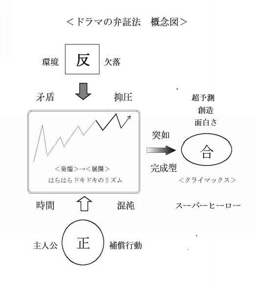
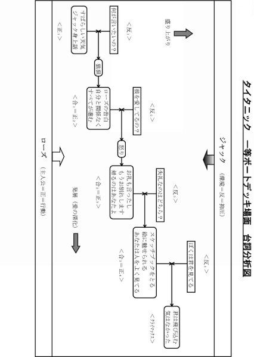
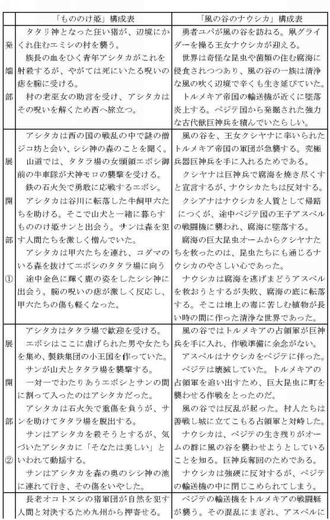
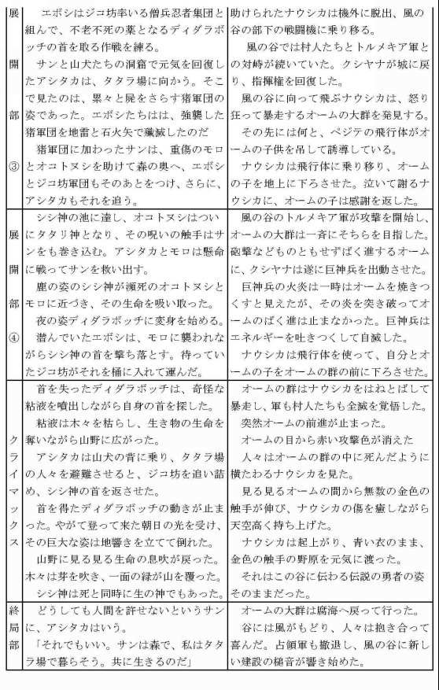
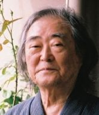

| ストーリー工学: 物語を創る | |
| 川邊 一外 | |
| (2014) | |
ストーリー工学
川邊一外
芸術とは、「真理」を作品の内へと据えることである。
－－－Ｍ．ハイデッガー
「ストーリー工学」とは、何やら奇妙な題名です。
「ストーリー」とは、本来分割のできないアナログなもので、「工学」とは、数学を基礎とするデジタルなもの、というイメージがあるからです。
ここでお話しするのは、デジタルに分割された「情報」を、アナログにまとめ上げて、一本のストーリーを創り上げようとする方法です。
将棋の名人は、盤面上のあらゆる情報を分析し、予測可能なあらゆる選択肢を検討した後、決然として次の一手を選びます。
この決断には、コンピュータには真似の出来ない、分割不可能な跳躍があります。
そこには、極めて冷徹な知性と、熱い創造の情念が共存します。
「ストーリーを創る」ことは、従来一種の「秘伝」とされてきました。
作家には作家独自の「秘すれば花」の秘密があり、いわく言い難い不立文字の境域に閉じこもって、天与の「才能」やゴリ押しの「修業」が、神秘化されて語られたりもします。
しかし、一定の手順で情報を集め、それを或るやり方で構築すれば、ストーリーは誰にでも書けるのです。
実はそれは、どんな作家も、無意識に実行している方法で、私たちはそれを、意識して踏み、回り道を省こうとするだけです。
ここでは、みなさんを一つのスタートラインにご案内します。
そこから出発すれば、誰でも、物語をつくり、あるレベルにまでは、必ず到達することができるでしょう。
それから先は、あるいは「才能」と「運」と「根気」が問われる
世界かも知れません。
ストーリー作りは、一人の人間が全力を傾けるに足る仕事です。
いざ、その秘蹟の中に分け入って見ることにしましょう。
2014年９月1６日
川邊 一外
まず、ズバリ、ストーリーを創る方法から入りましょう。
続いて「構成」について考え、それが「人間」の構造と深くかかわっていることを調べます。
発想法とそのトレーニングについても学びましょう。
ストーリーを書くための第一歩は、「ストーリーを書こう」などとは、決して思わないことです。
小説を読み、映画を見ながら、私たちはたしかに「ストーリー」を面白いと思い、それに感動します。
消費者として、他人がつくりだした結果を味わっているのです。
しかし、私たちが創作者、つまり生産者になるとき、逆は必ずしも真ではありません。
「ストーリー、ストーリー」といくら探し回っても、それはどこからもやってきません。
それは、必要な手順と方法を踏むことで、はじめて生み出されるのです。
物語ははじめから作者の頭の中にあって、それが文字に移されただけなどと考えるなら、これ以上の素人考えはないでしょう。作者の頭の中には、世界の中である方向をめざす、暗い情動がうごめいているだけです。
作者は刻一刻ごとに言葉をえらび、新しい展開のクサビを打ち込みながら、歩一歩と作品を明るみに築きあげてきたのです。
ストーリーは、情報という素材を、立体的・重層的に組みあげた、緻密な構築体です。「ストーリーを書こう」という素朴な意志だけ
では、たちまち行き詰まるでしょう。
それは、正しく意識された方法と技術によって、鍛えられ、導かれなければならないのです。
創作とは、言葉によって、原稿用紙の上に「人間」の行動を丸彫りにすることです。
その執筆には、二つの段階を考えておくのがよいでしょう。
Ⅰ．素材となる情報の「準備」
Ⅱ．実際に執筆を進める「制作」、です。
Ⅰ．準備
「人間」をストーリーとして描くためには、次の四つの準備が必要でしょう。
①物語の環境を想像すること。
②主人公とその目的をきめること。
③「悪玉」のイメージを設定すること。
④クライマックスを考えること。
①物語の環境を想像すること。
どんな物語にも「環境」があります。
空間的には、「世界」「社会枠」などとよばれ、コンピューターゲームでは、「世界観」ということもあります。
「環境」は、同時に時間的なものでもあります。主人公は、一定の時代に生き、限られた長さの時間枠の中で行動するからです。
創作の第一歩はまず、物語の時空のイメージを明らかにし、設定することです。
ⅰ）時間的環境、つまり「時代」とその範囲を決めること。
現代劇か？時代劇か？ＳＦか？ファンタジーか？などです。
ⅱ）地理的環境。ドラマが進行する舞台の地理的な限界はどこか？
宇宙か？地球か？大陸か？国か？地域か？建物の中か？など
ⅲ）社会的環境。
登場する人物は、直接には、どのような人間の組織の中で活動するのか？
国だとすれば、その住民や歴史。政治・経済・文化形態。支配
階層と被支配階層。言語や通貨、主力となる武器。支配的な宗教や道徳、文明や産業のレベルなど。
狭い地域や家の中だとすれば、どんな人間関係や家族関係があるか？など。
この段階でおこなわれるのが、「取材」です。
それには、次のようなステップがあるでしょう。
(1)まず自分の頭の中にある既存の情報の探索です。その主題について自分が何を知っているのか、洗いざらいチェックしてみるのです。これを「内部探検」と呼ぶ人もいます。
(2)百科事典で調べます。これによって主題の範囲がより明らかになり、参考文献や誰に訊くべきかなどの情報も得られます。
これ以降が「外部探検」です。
(3)図書館その他で参考文献に当たり、より詳細な情報を探索します。
(4)専門家やその問題についてよく知っている人に会って、話を聞きます。できるなら、その「現場」に行ってみます。
これらの情報は、作品に直接現れる現れないにかかわらず、その背景として幅広く、厚みをもって考えておく必要があります。
創作の過程では、いままで背景と思われていたものが、突然主流を占め、全体の形を大きく変えてしまうこともあるからです。
ⅰ）～ⅲ）であげた全項目を、チェックリストのような方式でもれなく考えて行くこともできますが、お固い戸籍調べではなく、あくまでヒントあるいは発想の刺激として利用し、柔軟に、豊富に、情報を集めるという姿勢が大切です。
② 主人公とその目的をきめること。
主人公は、あらゆる物語のカナメであり、創作の原点です。
想像の環境の中に投げ込まれ、あたえられた使命を追求する主人公の「行動」こそ、シナリオのバックボーンであり、その行動の軌跡が「ストーリー」というものです。
ドラマの中で彼が達成すべき最終目的を、「超目標」とよび、全編を一貫するその行動のことを「貫通行動」とよんでいます。
超目標による貫通行動は、なぜ生まれるのでしょうか？
もちろん目上から依頼をうけたり、はじめから義務である場合もあるでしょう。
しかし結局のところ、環境の中にその実現をせまって止まない動因があり、主人公はそれを、自分の自由な意志によって、主体的にえらびとるのです。
たとえば、忠臣蔵の大石内蔵助の超目標は、吉良上野介の首を取ることですが、その根本動因は、主君浅野内匠頭が一方的に切腹させられたことにあります。
ロメオとジュリエットの貫通行動は、幸せな結婚生活を実現することですが、家同志の争いという異常な環境が、このごく平凡な目的を、きわめて劇的にしています。
多くの「刑事もの」は、無辜の人間の死体が転がっているところからスタートします。
主人公の「環境」の中には、必ず何らかの「欠落」があり、主人公はその埋め合わせをするために、行動を開始せざるを得ません。
貫通行動とは、「欠落環境」に対する、主人公の「補償行為」なのです。
「超目標」を中核として、主人公の具体的なイメージをつくることは重要でしょう。
ⅰ）個人的条件として
名前、性別、年齢、容貌、容姿、人種、国籍、住所、職業、社会的地位、性格、癖、美点、欠点、特技、好物など
ⅱ）家族・友人関係として
両親、兄弟姉妹、恋人、配偶者、子供、親戚、親友、など。
ⅲ）過去の履歴として
幼年時代、少年少女時代、青年時代、学歴、職歴、めぼしい業績や事件、など
ⅳ）副人物
やや広い環境の中には、主人公の味方となって目的の実現を助け、何らかの力を貸す一群の人々が存在します。どんな仲間や、どんな味方が考えられるか、作者は、心を開いて迎え入れるべきです。
③「悪玉（抑圧環境）」のイメージを設定すること。
環境の中にはまず、主人公に超目標をあたえるに至った、究極の抑圧者がいます。
忠臣蔵で云えば吉良上野介、ロメオとッジュリエットならば、ジュリエットの父親、「刑事もの」では真犯人、ゲームなら「超ボス」と云った、環境の「欠落」を代表するキャラクターです。
「悪玉」は決して一人とはかぎらず、常に悪党面をしているわけでもありません。その抑圧する力は一種の組織をなし、その黒幕や配下と云ったキャラ群も存在します。
主人公の超目標が、復讐、正義の回復、権力の確立など、男性的な原理によるものである場合、たとえばアクションドラマなどでは、「悪玉」の顔は誰が見てもはっきりしていて、主人公はその相手を倒すことを直接目的とします。
しかし、愛の確立などを超目標とする女性型の作品、たとえばメロドラマやホームドラマでは、悪玉らしい悪玉はほとんど登場せず、善意の登場人物ばかりの間で「誰も悪くないのに涙が流れ」たりします。この場合、「環境」の仕組みそのものの中に欠落があると考えるべきでしょう。
これらの人物たちは、最初から決定的な形をとって現れるとは限りません。
常に流動的に、消えたり現れたり、変形したり合体したりするかも知れません。
彼らを取捨選択する基準は、あくまで主人公の超目標にあります。
④クライマックスを考えること。
この段階で、全編のクライマックスを考えることは、実はそうむずかしいことではありません。
すでに「環境」が考えられ「主人公」や「悪玉（抑圧環境）」も設定されています。
環境の中から然るべき「舞台」をえらび、そこで「主人公」と「悪玉（抑圧環境）」を正面から激突させればよいのです。
創作準備の最初に、まずクライマックスのイメージを探っておくという方法は、ひとつの「秘伝」といってよいものです。
そこには、少なくとも二つの効果があります。
ⅰ）ストーリーの中途挫折、「未完」がなくなる。
「環境（悪玉）」と「主人公」に対する意識が明確になり、特に主人公の超目標が明瞭になるために、物語の先行きがよく見えてきます。何がムダで何がムダでないかが明らかになり、余計な回り道を省くことができるばかりか、勢いこんで書き出したのに途中で筆が渋り、迷いに迷ってとうとう投げ出してしまったなどという事態は避けられるでしょう。
ⅱ）トップ・シーンを逆算できる。
最初にまず何から書き出すか？
ファーストシーンを何にするか？は常に大きな問題です。
発端部分の大切な要件の一つは、主人公の登場です。
主人公は、何らかの環境の欠落から出現するのでした。
したがって、欠落した環境をまず冒頭にぶつける、これが書き出しの鉄則です。
主人公が埋め合わすべき欠落は、クライマックスに最も明瞭かつ強烈に出現します。
クライマックスで解決される根本矛盾を、まず冒頭にぶつければ、主人公はその衝撃によっていやでも登場せざるを得ません。これを、冒頭部分の「逆算」と呼ぶのです。
忠臣蔵で云えば、吉良上野介の判官いじめ、ロメオとジュリエットでは、二人の結婚をはばむ両家の喧嘩騒ぎ、刑事物では、罪もなく惨殺された死体、といったものです。
クライマックスは、必ずしも「主題」や「欠落」から理屈で考え詰める必要はありません。クライマックスは全編のハイライトであり、強い「見せ場」の要素をもっていますので、ごく端的なイメージから、感覚的に探って行くこともできるでしょう。
以上四つのステップによって、シナリオの構築に使う情報素材を集めておきます。それは、夏休みの模型工作で、いろいろな材料集めをするのとそう変わりません。
その情報源は、あくまで、私たちが現実に生きている生活環境（actual reality)にあります。現実の情報を取捨選択して、想像の環境(vertua lreality)を作り出すのです。
この場合、完成図はまだ見えていないのですから、何も完璧である必要はなく、結果として使えるか使えないかを、あまり意識する必要はありません。
Ⅱ．制作
さて、いよいよ実際の執筆に入ります。
制作を進める基本原理は、非常に簡単です。
すでに想像してある「環境（vertual reality )」のなかに「主人公」を投げ込み、作者が主人公になって、現実（actual reality )と同じように行動する、のです。
その行動は、結果として、物語（ストーリー）を織りだして行くことになるでしょう。
ここでいう「行動」の意味は RPG（ロール・プレイイング・ゲーム）、アドベンチャー・ゲーム、シミュレーション・ゲームなどのコンピュータ・ゲームを楽しんだことのある人なら、容易にお分かりだと思います。
これらのゲームでは、コンピュータのなかにすでに一つの架空の現実（vertual reality)が用意されています。そのなかでプレーヤーは、主人公になり、武器や台詞や金や経路や仲間や作戦やを自分で自由に選びながら、超目標の実現のために戦って行きます。
その感情や心理は、現実（actual reality)とすこしも変わらずリアルなものです。
ゲームではなくとも、私たちは現実世界（actuareality）のなかで、自分の生存性を妨げるさまざまな問題に遭遇し、それをぎりぎりに解決しながら「行動」しています。
創作ではそれと同じことを、自分の想像した架空の環境の中で行ってゆくのです。
現実世界で私たちは、すでに環境をあたえられ、それをつくる必要はありません。しかし、創作世界では、それを自分で想像し、つくりだしておかなければなりません。
それが、実生活者（プレーヤー）と創作者のちがいなのです。
想像した環境の中で、主人公として行動して行くことで、作者は、独自の時間の流れを創り出します。
環境は主人公を圧迫し、主人公に超目標を発起させます。
超目標による主人公の行動は、逆に、環境を改変します。
改変された環境は、主人公に反作用を返し、さらに、これまでの予想を超えた新しい行動を発起させます。
売り言葉に買い言葉。環境と主人公との間には、このような緊迫した対話が繰り返され、そのピストン運動の軌跡は、次第にエスカレートし「盛り上がって」行きます。
ストーリー作りは、決して一筋縄ではありません。
それは「環境」そして「主人公」という二筋の縄を、ぎりぎりと緊密に綯い合わせることによって、初めて出現するのです。
主人公（作者）が、環境とさまざまな緊張関係に立つとき、これを状況（situation）と呼びます。
目的を追求する過程で、主人公はいろいろな状況に直面し、数々の試行錯誤を重ねつつ、道を拓いて行きます。
それらは、場面（シーン scene）となり、区切り（シークエンス・sequence）となり、やがて主人公の目的が達成されるかされないか、最後の決着がつく「ヤマ場(クライマックス・climax)」に到達します。
「行動」が、言葉の正しい意味で「発展」し、ストーリーを「展開」して行くこの構造を、「構成（コンストラクション construction）」とよびます。
ストーリーとは、情報による、こうした力学的な構造体なのです。
「構成」は、シナリオの制作現場では、「コンスト」とか「組み」
とか呼ばれ、きわめて頻繁に使われる考え方です。
とは云え、こうした現場用語の多くがそうであるように、使っている人自身が、その定義や用法をよく心得ているとは限りません。
何となく話が「かったるく」てムダが多いと感じられる、どうもインパクトやリズムに欠ける、というような時に、「コンストが悪い」「クミを考え直さなきゃ」などと、ごく感覚的に使われるようです。
シナリオは、非常に緊密な情報の構造体です。
そのどの一部とっても全体に関連しています。
すぐれたシナリオとは、そのどの一部を欠いても、全体が壊れてしまうようなものです。逆に、ある一部を取り除いても全体が変わることがないなら、その部分はムダであり、不要なのです。
では、そのような「構成」は、どのようにしたらできるのか？
貫通行動は、どのように展開し、どのように構築して行ったらよいのか？
簡潔・的確に人の肺腑をつくためには、何がムダであり、何がムダでないのか？
これらの問題は、シナリオを書く原点に立ち戻って考える必要があります。
「創作の原点」とは、まず、「想像的環境」と「主人公」という二筋の縄を、ぎりぎりに綯い合わせる、ということでした。
作者が主人公になって、その環境の中で、現実と同じように「行動」して行くのです。
ここでいう行動とは、日常的・習慣的な決まり切った行為のことではなく、主人公が、愛するものを否定する欠落的な環境に対抗して、それをはねのけ、補償しようと企てる独自の試み、一貫したはたらきかけのことです。
忠臣蔵では、主君浅野内匠頭の無念の切腹は、大石内蔵助にとって、大きな欠落環境としてはたらきます。内蔵助はそれを埋め合わすため、吉良上野介の首をとるという目標を立て、数々の妨害と闘いながら進んで行きます。
シェイクスピアの「ロミオとジュリエット」の第一幕は、モンタギュー家とキャピュレット家との斬り合いからはじまります。同じ幕でロメオとジュリエットは出会い、深く愛し合うようになります
が、幸せに結婚したいという二人の目的は、その欠落的な環境の中でさまざまな曲折を辿り、最後は悲劇に終わることになります。
「刑事もの」の冒頭で、転がっている無辜の死体は、欠落的な環境であることは明白です。それを埋めるため、刑事たちは、真相を掴み、犯人を逮捕しようと動き出すのです。
シナリオのバックボーンは、環境の欠落に直面して、なんとかそれを埋め合わせようとする、主人公の貫通行動にあります。
貫通行動は、具体的には、いくつかの「小目標」が組み合わされてできています。
といっても、それらが問題集の項目のように順次に配列されて主人公が次々にそれを解いて行くということではありません。
前の小目標がどのように決着するかによって、次にどのような小目標が生まれるかが決まるのです。主人公といえども、次にどんな小目標が立つのか、前の小目標の結果が出るまでは分かりません。
主人公の行動は、常に発展的、飛躍的、予想外的に展開するわけで、この構造を「構成」と呼んでいるのです。
何故このようなことになるのか？
それは、行動が常に矛盾を孕んでいるからです。
いや、「行動」そのものが矛盾によって生まれるのです。
最も基本的な矛盾は、主人公と環境との間に存在します。
環境は、常に主人公を否定し、その生存を脅かそうとする欠落要素を含んでいます。
主人公は、生存し続けるために、つねにその否定要因と戦いつつ、
自身の存在を貫いて行かなければなりません。
仮にすべての環境が、主人公に対して都合の良い順境だったとします。しかし、その場合でも、主人公は常に「死」という究極の「欠落」を避けることはできないでしょう。すべての人間が肉体によって生き、有限の世界に存在する限り、その存在には常に死が浸透していて避けることができないのです。
この「生と死」の基盤の上に主人公が行動する限り、環境は無数の否定と欠落の組織体として立ち現れるのです。
「矛盾」は、常に運動と発展を生み出します。
「正（テーゼ）」と「反（アンチテーゼ）」の激突が、ある混沌の時間の中から、いままで予想もつかなかった新しい「合（ジンテーゼ）」を生み出す、というのはヘーゲルによって定式化された「弁証法」の論理ですが、この構造は、そのまま行動とドラマの論理になっています。（「ドラマの弁証法概念図」参照）

「構成」とは、この矛盾の構造が単位となり、数多くの行動を重層的に組み合わせて成り立つものです。
「ドラマの構成原理図」を見てください。
最初の正・反の激突によって生まれた合が、さらに次の正となり再び新しい反と激突して、また新しい合を生むという形で、連鎖的に組み合わされて行きます。
ここに、言葉の正しい意味での「発展」が生まれ、緊張度の上昇、つまり、「盛り上がり」が生まれて行くのです。
現在、映画やＴＶで、フィーチャーと呼ばれる一本立て作品は、おおむね１時間半～２時間半の長さを持っています。これ以下だと満腹感がなく、これ以上だと疲れてしまうということで、どうやらこれが普通の人間の生理的条件のようです。
この種の作品を、すでに百本以上も分析した結果から云えば、これらは、ほとんど例外なく、７つのシークエンス（区切り）によって構成されています。
シークエンスとは、一つの小目標に決着がつくことによって区切られる構成単位です。
つまり、この中では、一組の正・反・合が、時間軸に沿って展開し、完結すると云ってよいでしょう。
わが国の縄文時代につくられたソフォクレスの「オイディプス」も、現代のトップレベルの名作シナリオも、まったく同じ７つのシークエンスで構成されているのはまさに驚くべきことで、人間の行動の本質というものは、文明の進歩の如何にかかわらず、それほど変わらないもののようです。
構成の第一シークエンスを、「発端部」と呼びます。
ここではまず、人間の生存を否定する強い欠落環境（反）が提示され、主人公（正）は、その圧迫の只中に登場します。
「主人公はノレンを分けて登場すべし」というのは、舞台劇「瞼の母」などで知られる、長谷川伸さんの言葉です。
欠落を埋め戻すため彼は、超目標（合）を立て、場合によっては、それを力強く宣言し、貫通行動を開始します。
それが、発端部の必要条件です。
第二シークエンスを、「展開部①」と呼びます。
主人公は、超目標にしたがって手近な小目標を立て、「第一着手の行動」を開始します。
しかし、環境の「反」の抑圧は、それほど甘くはなく、この行動は、かならず押し戻され、挫折します。
主人公は、さらに新しい小目標と行動を考えざるを得ません。
ここでも、一つの正・反・合のサイクルが回るわけです。
第三シークエンスが、展開部②です。
この冒頭で、多くの場合主人公は途方にくれています。
第一着手の行動が失敗し、とりあえずどんな行動をとっていいか分からないからです。
しかし、こんな時、逆に環境の側からはたらきかけが起こります。
それを動因として、主人公はさらに新しい小目標を立て、行動を開始します。
すなわち、「第二着手の行動」です。
環境の壁は厚く、この行動によっても主人公は超目標を達成することができません。
第四シークエンスが、展開部③です。
ここでも、環境の側から主人公に対するはたらきかけが生じます。
それに対抗して、主人公は「第三着手の行動」を発起しますが、
またしても失敗します。
主人公は、次のシークエンスに勝負をかけざるを得ません。
第五シークエンス、展開部④では、主人公はほとんど絶体絶命の土壇場に立っています。
環境の反の力は最大限に達し、主人公はぎりぎりの力を振り絞って超目標の達成を図ります。
このシークエンスの終わりに近く、主人公はとうとう最後の決着をつけるチャンスを掴みとり、一気に次のクライマックス部に突入して行きます。
第六シークエンスが、クライマックス部です。
ここでは、環境と主人公が、それぞれ総力をあげて激突し、最後の大勝負が行われます。
多くのエンターテインメントでは、主人公は勝利しますが、環境の力が勝り、悲劇に終わる場合もあります。
成否いずれにしても、主人公の超目標はここで何らかの決着を迎えるのです。
ここは、作者のアピールしたい主題が問われるところ、また全編最大の売り物となるスペクタクルシーンが爆発するところです。
第七シークエンスは終局部、つまりエピローグです。
ドラマの根本矛盾が一件落着し、終戦処理といった状況です。
生き残った人々はどのような状況の中にあり、これから何をして行こうとするのか？
希望の暗示でしめくくります。
貫通行動という視点からこの「構成」をみると、「環境」と「主人公」との間の密接な「対話」が、ドラマの進展を生むことは明白です。
環境が主人公にはたらきかけ、それを受けた主人公が行動を返す。
それによって変化した環境がさらに主人公に．．．というわけで、この一連の相互交渉によって、いやがうえにも発展し、盛り上がって行くのです。
もちろんこれは、作者の立場でもあります。
作者は常に新しい環境を想像し、さらにその中で常に新しく主人公として行動し、この作業を、絶え間のないピストン運動のように繰り返して行くのです。
ごく一般的に云えば、展開部①～④は、順次に短くなり、丁度ドラムのリズムのように緊張とテンポを速めて行きます。
３０分もの、一時間ものなどの短編や、特別大作、大長編ＲＰＧなどでは、展開部の数によって長さを調節すると云えます。
「構成」がやかましく云われるのは、何も映像シナリオだけではありません。絵画や音楽や舞台にもあり、漢詩の七言絶句についての「起承転結」、能の「序破急」などはよく知られています。
しかし、シナリオに関して、「構成」がこれほどにも重視されるのは、的確簡潔で、純度の高い「ドラマ」を創り出すためです。
単に芸術的な意味ばかりではなく、予算と日程にきびしく縛られる映像製作にあっては、ムダと冗漫は大敵なのです。
「構成」が主人公（作者）の貫通行動をバックボーンとして行われる限り、何がムダでありムダでないかを決める試金石は、超目標の決着点、すなわち「クライマックス」にあります。
ドラマのすべての部分は、クライマックスの爆発力を最大限に高めるために組み立てられるべきです。
ある台詞、人物、場面、などが必要か不必要かを決めるのは、クライマックスです。
これを「クライマックスによる統一」と呼んでいます。
ドラマ創作に弁証法の考えを導入しようとする時、注意しなければならないのは、これをあまりに観念化し、硬直化しないことです。
「正・反・合」の仕組みの面白さは、その「正」の中にもまた「正・反・合」の仕組みがあり、「反」の中にもまた同じ仕組みがあるということです。
どの一部をとっても、そこには全体が含まれているのです。
「部分の中に全体がある」というこの構造を、「入れ子構造」あるいは「フラクタル」と呼んでいます。
たとえば、シナリオの全体は、クライマックスを頂点とする一つの「山型」です。
しかし、その部分であるシークエンスを見ると、ここにも同じ山型があります。
ひとつのシークエンスの中にも、同じように「発端部」「展開部」「クライマックス部」「終局部」があるのです。
実を云えば、さらに小さな単位「シーン」の中にも同じ構造があり、「台詞」の中にさえ、同じ構造を見ることができます。
「環境の反の力」と一口に云いますが、それも無数の「正」の力を内包した構造体です。「悪玉」や「超ボス」は、その頂点にいるキャラクターというにすぎません。
「主人公の正の行動」といっても、彼自身の中にも多くも「反」の分子があり、彼を支持する勢力の中にも、多くの矛盾があります。
「正・反・合」の考え方を適用するには、こうした具体の構造の中にくまなく目を放ち、「現実」のいうところに素直に耳傾けつつ、主人公を柔軟に、フラクタルに生かして行くことが大切です。
ここに掲げた「構成原理図」は、「分析」の結果です。
構成の分析は、すぐれた作品から何かを「盗む」ために、おおいに有効な作業です。
創作の行路に行き暮れた時、たとえばあるエピソードや人物が必要かどうか迷った時、それはこの上もない地図となり、羅針盤になるでしょう。
しかし、創作作業そのものは、行動による「綜合」です。
「構成図」を金科玉条のように自作に当てはめ、ただただ機械的に部品を寄せ集めるだけでは、作品に魂を吹き込むことにはならないでしょう。
重要なのは「主人公になり、環境の中で行動して行く」こと。
つまり作者自身が、現実に、生きて「行動」すること。
この基本を守ることです。
実際に創作するとき、構成図などは、一旦忘れてしまった方がよいでしょう。
「行動」してゆけば、それはいやでも現れてくるものだからです。
創作するときは、頭のテッペンの理論などは忘れた方がいい。
これも、はなはだ皮肉な弁証法的逆説と云えるでしょう。
前章では、「人間を描く」ために、
①環境
②主人公
③悪玉
④クライマックス
という四つの架空現実（vertual reality）を想像し、作者が主人公になって、環境の欠落を埋めるため、現実(actual reality)と同じように行動する、という創作の方法を提示しました。
その根拠はどこにあるのでしょうか？
それが、「人間」の根本の構造と考えられるからです。
人間とは何でしょうか？
これは古今の宗教、哲学、科学上の大問題で、一創作論の枠をはるかに超えるでしょう。
しかしここでは、ごく端的に、根源に戻って考えてみましょう。
最も手近で、たしかな手ごたえのある人間は、「自分」です。
自分とは何でしょうか？
私たちはふと気が付くと、「世界」の中に「自分」を発見します。
自分は何故か、ある環境の中に「投げ込まれて」いるのです。
私たちが日常住んでいるのは、世界地図や地球儀のような抽象概念の「世界」ではありません。いつでも目に見え、耳に聞こえ、五官で捕捉できる限りの、身近で具体的な世界です。
この世界で「もの」に出会った時、私たちはそこに自分が「開かれている」と感じます。
外側の「もの」が私たちに自分自身を自覚させるのです。
たとえば、コップは、自分がそこに存在していることを知ってはいません。ところが私たちは、自分が「そこに」存在していることを、よく知っています。
「存在する自分」以前に、もうひとり、それを見て「了解している自分」がいるのです。自分とは自分に先立って存在する、不思議な二重の構造をもつ、ともいえます。
私たちは差し当ってそれらの「もの」を、詳細に「認識」しているわけではありません。たとえば、この机がどんな材質で、いつどこで誰に作られたか？などは、私たちには当面どうでもいいことで、それはものを置いたり書いたりする道具で、そこで食事や仕事ができると分かっていれば充分なのです。部屋、窓、椅子、ワープロなどなど、私たちの周囲にある「もの」のすべては、動物や自然物でさえも、つまりは「道具」であり、その使用目的さえ分かっていれば、まずは足りるのです。
私たちは日常、そのような実用性の網の目を周囲に張りめぐらし、無数の道具の連鎖の中をわたり歩きながら「生活」しています。
その「網の目」は、丹念にたどって行けば、どこまでもグローバルに広がり、やがてそこに、直接に目には見えない大きな「世界」が存在することを、私たちは知るのです。
世界には「もの」の他に、人間の仲間、「ひと」がいます。
最初に出会うのは、「いま、ここ」にある自分の「身体」ですが、それは奇妙にも、他の何とも、誰とも交換することはできません。
私たちは身体を原点として、親、兄弟姉妹、親戚など血縁でつながれた「家族」に触れ、さらに学校、職場、同好会、地域社会など地縁で結ばれた「友人」たちと交流します。
それはさらに、国民、民族、人類、生命体．．．と拡がって行きますが、私たちは否応なく、これらの仲間たちと、協力し、対立し、交渉しつつ、生きて行くことになります。
私たちは、この「社会枠（世界）」の中に自分を位置づけ、「自分」を識別（identify）します。たとえば、親につけられた名前、所有するもの、ペットや植物、親兄弟や親族、所属する学校、職場、各種のグループ、住んでいる家や地域や国．．．これらの詳細なデータの、特殊で個人的な組みあわせが、他ならぬ「自分」です。
その「世界」は自分であり、「自分」はその世界の中にいます。
世界がなければ、自分はなく、自分がなければ、世界もないでしょう。この二つは、紙の表裏のように切り離すことはできず、別々の二つのものと考えるよりは、むしろ、初めから一つのものとして動いている、と考える方が正しいでしょう。
私たちはいわば、世界（環境・社会枠）の中に「棲んで」います。
私たちは日常生活の中で、しばしば、喜び、怒り、悲しみ、さまざまな感情に翻弄されます。
しかし、じっと心を静めて見ると、時間とともに変転するそれらの起伏の奥に、地鳴りのように響き続ける一貫した感情に気づくことはないでしょうか？
それは、無意識にも近い漠然とした不安、あるいは恐怖ともいえる感情です。と云って、特定の対象が理由というわけではなく、そもそも私たちが「世界の中に居る」感覚ともいえます。
私たちは、何に不安し、何を恐れているのでしょうか？
第一に、「世界」は私たちに、不条理に、一方的に「与えられたものです。
普段忙しく立ちはたらいているとき、私たちはそれに気がつかないでいます。が、ある時ふっと我に返り、突然目が覚めるのです。
なぜ自分はここにいるのか？なぜこの名前なのか？なぜこの家族なのか？なぜ日本人なのか？なぜ特定のこれこれなのか？どうしてそれ以外のものではなかったのか？
私たちは、まったく異邦の風土の中に自身を発見し、不気味な呼び声に貫かれて立ちすくむのです。
第二に、その「与えられた」存在は、いつ消えてなくなるのか、まったく不明です。
人間は例外なく死を迎えますが、いつどのように死ぬかは誰も知らず、死の後に存在があるのかどうかさえ確証はありません。
つまり、「世界」にはどうも「ぴったりこない」ところがある。
何か居心地が悪いのです。あきらかに何かが欠けている。
それが何か？を求めて、そしてそれを埋めるために、ほとんど本能的に、私たちは動いているのではないでしょうか？
たしかに、私たちはこの世界に「投げ込まれた」存在です。
生まれる前も真っ暗、死んだ後も真っ暗。
しかし、だからこそ私たちは、逆に、この世界に自分を投げ込ずにはいられないのです。一寸先は闇だとしても、唯一の光としての自分を燃やし続け、「生き」ずにはいられないのです。
生きることは、すべてが明晰な意識によるとはかぎりません。
いや、明確な自覚があると見える時すら、その根底には必ず、奥深く暗い情念が渦巻いています。存在そのものへの不安、死への恐れ、欠落に対する憤り－－－ほとんど無意識の感情が私たちを駆り立てて止まないのです。
実社会の厖大な情報の海を泳ぎながら、作者は、ふと小さなモチーフに「ひっかかり」ます。どうも気になる。他人はまったく気にとめていないのに、彼のアンテナには何かが「ひびく」のです。
それは何かが欠けているという「感覚」で、同時にそれを埋め合わせたいという欲求でもあります。
作者は、その独自のモチーフを手がかりに、「外側」の現実社に身を開きます。やがて、「内側」に想像の欠落環境をつくり出し、そこに主人公を投げ込んで、補償行動を開始させるのです。
作品の発想は、決して、現実社会の秩序立った分析や、知的な「認識」などから生まれるのではありません。
それは、作者自身もよく気づいていない奥底の情念によって感知され、方向づけられ、やがて多くの意識的操作を加えられて、作品となってゆくのです。
作者は独自の「触覚」によって、現実社会の「欠落」に到達し、それを作品の主題として選びとるのです。
政治家や企業家が、現実世界の不満や不合理に直接に身を投じ、エゴとエゴがせめぎ合うダイナミズムの中で目的を達成して行くのに比べ、作者は自らを空にして現実世界の語るところに耳を傾け、想像的現実を構築して、そこに主人公を「生かし」ます。
主人公の抱く超目標と貫通行動こそ、まさしく現実の欠落をそのように埋めるべきだという作者の主張であり、現実社会に向かって発信する情動的アピールに他ならないでしょう。
作者は、そのようにして現実社会にかかわり、そこに自らを「投げ込んで」ゆくのです。
私たちが「自分」を最も深く経験するのは、「世界」の中で、馴れ親しんだ日常の手順を離れ、独自の企てを決断し、実行しようとする時です。
私たちは世界の中にいまだ存在しないものを実現しようとするのですから、それだけですでに世界を「超えて」います。
その動機が他者の世界から来るにしても、また、それを実現するのは他者の世界の中であるにしても、「外」の世界にはない何かが、「内」に動いていることはたしかです。
行動の決断に当たって、私たちは完全に孤独です。
目の前には広大な砂漠が広がっていて、そこにどんな道でも開くことができます。行動の可能性は無数にあり、自分の自由な意志でその一つを選ばなければなりません。
その「選択」にあたって、私たちはあらゆる情報を収集し、可能な限りの他者の意見を聞くかも知れません。
しかし、その最終的な「決断」は、決して外界からはやって来ません。それはあくまで、自分が自分と対面する絶対の孤独の深みからやって来ます。
義理や習慣で投げやりな選択をする場合もあるでしょう。
しかし、やがて問題が生じた時、最初の選択の是非がきびしく問われます。
このとき、どんな事態になろうと決して後悔することのない選択は、その「究極の自分」の決断からやってくるでしょう。
この世界の中で、ある方向をめざし、「自ら投げ込む可能性を選びとる」一種透明な力としての自分こそ、まさしく本来の自分、創造の「原点」となる自分なのではないでしょうか？
実を云えば、最も正しい意味での「自由」もそこにあります。
自由とは、自分が行動の根本由来となるということです。
それは、「世界の中に存在する自分」の奥深くにある力です。
創作の仕事とは、まさに、この世界の中の存在としての自分を描くことです。
自分を描くことは、「世界」を描きだし、認識することです。
世界を描くことは、「自分」の方向と行動を描き出し、自分を知ることです。
とはいえ、ここに、きわめて危険な落とし穴があります。
「自分」が「世界」から目をそらし、「自分自身」のみを凝視して、その自己恋慕の中に閉じこもることです。
フロイドによって「ナルチシズム」と名づけられたこの傾向は、元来病的なものではなく、どんな人間にも備わっているのですが、それが「世界」とのかかわりを拒否し、「自分が自分であるという理由によって、無条件に正しく、美しい」という短絡的な自己執着におちいるとき、数々の破壊的、破滅的な症候群をもたらします。
個人的には、極度の自閉症や躁鬱症、自己中心の暴力行為や凶悪犯罪、やみくもの自殺願望や死の美化、などとして現れますが、社会的にも、莫大な数の人間の自由を奪い、平然と殺戮して省みない独裁者の圧政などとなって現れます。
悪性のナルチシズムは、きわめて集中的な力であるために、一時期非常な光輝を発揮することがありますが、やがて凄まじい破滅に終わります。「世界」を否定したものが、逆に世界から否定される結果になるのは、すでにお話しした「自己」の仕組みからして、むしろ当然の成り行きでしょう。
「ものつくり」として自己表現を志す過程で、悪性のナルチシズムのワナに落ち込む例は決して少なくないようです。
わが内奥に燃えたぎる、強烈な自己の刻印を打ち込んで、いつの日か大傑作を世に問い、一世を驚倒させて見せる。
暮夜ひそかに孤剣を磨き、いつかは独自の世界とキャラクターを創造して、わが名を天下に轟かせて見せる。
そんな気負いと夢想を抱いた表現者の卵たちは決して少なくないはずで、そうした「自己の作品」のために、骨身を削っています。
しかし、ムキになり一所懸命になればなるほど、作品は自閉化し硬直化し、思いは空回りするばかり、「こんなはずではなかった」「どうしてわからないのだ？」とかこちつつ、世を恨み人を呪って自滅して行くケースも多いのです。
もともと作品つくりとは、一つのコミュニケーションです。
読者や観客や－－不特定多数の「他人」に何らかのメッセージを伝え、それが何ほどか「役に立つ」のでなければ、何で人がそれに金を支払い、ましてや賞金や名誉を与えたりするでしょうか？
夜郎自大の自己顕示や、自惚れ鏡の自己陶酔に、無条件の拍手を送るほど、世間は甘くはないでしょう。
「自分の作品」とは、実は「自分が他人や社会と深く関わって行く」作品のことで、他人と共通の地盤に立ち、多くの人々の心を捉えるモチーフや主題が不可欠です。
「自己凝視」の呪縛をとき放ち、まず「世界」に心を開くこと。
「存在に身を開き、存在の中に立ちいでること」
それが「自分の作品」を実現するための要諦なのです。
すでにお話した通り、私たちを取り巻く「現実」は、不条理で相対的なものです。
とすれば、その現実の現実(actual reality)の衣をひとまず脱ぎ捨てて、原点としての「究極の自分」に立ち戻り、自ら想像した現実 (virtual reality)の中に、再び立ち現れて行動してもいいはずです。
作家の仕事とは、世界の中に存在する「人間」を演ずることです。
「演ずる」とは、小器用な物まねや、野放図なおふざけなどとはまったく別のことです。
想像の環境の中で、現実と同じように行動して行く。その感情も心理も、質においては、現実と少しも変わらずリアルなものです。
リアリズムとは、漠然とした「現実らしさ」ではありません。
架空現実の中で、ほんものの人間として行動するということです。
現実的現実(actual reality)での行動の軌跡はhistory（歴史）と呼ばれ、想像的現実(virtual reality)でのそれはstory（物語）と呼ばれるでしょう。
「自分の作品」とは、作者が「究極の自分」にまで立ち戻り、想像世界の主人公の行動を、一歩一歩、現実的に造形して行くところに、生まれてくるのです。
創作とは、無から有をつくりだす仕事と云われます。
そこには、いまだかってこの世に存在しなかった、新しい視点とメッセージの提案が必要です。既製の作品からヒントや示唆を得ることはあるとしても、「自分の作品」は、どんな教科書からも引き写すことはできないでしょう。図書館に通い詰めて万巻の書を読破したところで、まとめ上げる独自のアイディアがなければ、何の作品も生まれません。
たかがアイディア。されどアイディア。
多くのプロデユーサーやライターたちは、まずはこれ一つに血道をあげ、そこに生存の可能性を賭けているのです。
では「新しいアイディア」とは何なのか？
何をどうすれば「アイディア」が生まれるのか？
何時来るか分からない「インスピレーション」を待って、ぼんやり手をつかねているわけには行きません。
何処に行ったら、どのようにしたら、最も効率よく手に入るのか？
アイディアを求める場合、最も警戒すべきは、自縄自縛の袋小路に迷いこむことです。
たとえば、既定のあるテーマに沿って、ある物語を書かなければならないとします。
さて、どんな人物のどんな場面から書き出そうか？
この「アイディア」がすでに大きな問題になります。
この場合、テーマが決まっていることが、却って落とし穴になる。
自分はこういうことを云いたいんだが、では、最初はどんなイメージから書き始めるのが最もいいのか？これを理屈で考え始めたら、たちまちラチがあかなくなります。
Ａ＝Ｂ、Ｂ＝Ｃ、ゆえにＡ＝Ｃ、という学校式の三段論法が始まるわけです。
ＡもＢもＣもすでに与えられたものなので、Ａ＝Ｃという結論に新しい飛躍は何もない。
垂直に登るようなこの思考法では、最初土台に置いたものが先細りして現れるだけで、新しく使えるものは何もない。何を導き出してみたところで「面白くない」のです。
すべては紋切り型で、あれも詰まらない、これもありきたり、の無限の連鎖。
頭のシンをギリギリと痛めながら、それでも悲壮な「努力」を続けると、とうとう何も出てこなくなり、ついには「アイディアが欲しい、アイディアを考えなくちゃ」と云うことしか考えず、アイディアそのものについては何も考えなくなるという、メマイのするような悪循環(dwindling spiral)に落ち込みます。
ここでは頑張ること自体が、すでに自己破壊でしかありません。
頑張るといっても、頭のシンに力をこめる以外には何もないので、あとは暴発するか気が狂うかしか残っていない。これこそ、かって松本清張さんによって「耳から血が出る」と形容された、書けない時の地獄なのです。
私たちがつい反射的に陥ってしまうこの思考法が、過去わが国の博覧強記、点取主義の教育制度に条件づけられているのは間違いないところでしょう。
それが全く不要だとは申しませんが、少なくとも、新しい価値を生み出す「創造」という仕事には、どうも向いていないのです。
では、こうしたデッドエンドから、どうやったら抜け出せるのか？
二度と地獄に落ち込まない方策とは何か？
それには、視点を１８０度変えること、「コペルニクス的転回」以外にはないでしょう。
緊張して垂直に登り詰め、論理で追い求めることを止めること。
肩の力を抜いてリラックスし、方向を変換して水平に地面の上を歩き、そこで偶然に出会う多くのものから、感情的・情動的に発想の手がかりを得ること。
従来人々が無意識に美徳とする「一生懸命」を放棄すること。
どうしても一生懸命になりたければ、一生懸命にならないように一生懸命になること。
この考え方を大胆に押し広げ、方法化したのが、１９４０年代アメリカのＡ・オズボーンによって開発され、現在では世界的な声価をかちえているブレーンストーミングという会議の方法なのです。
その要点は、まず、私たちの思考を知らず知らずに締め付けている既成観念の枠組みを、思い切って外すことです。
普通、会社の会議は、長方形の長机を使い、扉や窓の位置などから自ずと「上席」が決まっていて、参加者は、会長、社長をトップに、地位の序列にしたがい、うやうやしく「並び大名」風に居流れます。その内容も「上意下達、下意上達」といった風のもので、特に新しい議論も発展もなく、単に分厚い書類の朗読に終始するものさえあります。
ブレーンストーミング会議は、これと正反対の方法をとります。
メンバーは、原則として円いテーブルを囲み、地位、年功、職種年齢、性別、人種などに関係なく、全く無作為に座ります。
たとえば、「新車の販売戦略」「売れる商品の開発」などなど会議の主題が与えられ、全員は特に順序を定めず、自由に平等に、思いのままに意見を発表します。
発言については、次の四つの基本原則があります。
①すべての意見をまず肯定して受け入れる。批判、嘲笑しない
②質より量。良い意見を云おうとしない。意見は多いほどいい
③思い付き大歓迎。他人の尻馬に乗った即興発言可。奔放に連想の翼を広げる。
④興味本位。ふざけたこと馬鹿馬鹿しいことを拒まず、逆に手引とする。
このルールにしたがって、特に性急に論理や結論を求めず、いわば無礼講的に多くの発言を重ねて行くと、突然ピカリと閃くように「面白い」アイディアが出現することがあります。その一座の数人、あるいは多数の人が意表をつかれ、期せずして話題がそちらの方向に盛り上がったりするのです。
これが、この会議のねらいです。共通のテーブルの上に、乱雑や無秩序を恐れず、できるだけ多数の情報を提出させ、その情報自体を刺激として、さらに大量の情報を引き出し、その中から突然に何かが「的に当たる」（ヒットする）ことを期待するのです。
ブレーンストーミング（brain storming)とは、「頭の中に情報の嵐を起こして問題解決にあたること」というほどの意味でしょう。それは「下手な鉄砲を数撃って当てる」、あるいは「駒が出ることを期待してヒョータンを振り回す」やり方とも云えます。
この方法は、会議だけではなく、個人の頭脳の中でも大いに卓効を現します。
ある漫画家は、アイディアに詰まると、机の前で呻るのをやめ、いきなり町に飛び出て、足の向くままに歩き回るといいます。
ふと目にした情景、偶然耳に入った言葉、気ままなウインドウ・ショッピング．．．そんなものが刺激やヒントになり、「ネタは向こうからやってくる」のだそうです。
これを「水平思考」と呼ぶ人もいますが、ブレーンストーミングの「ひとり型」バージョンとも云えるでしょう。
私たちの頭の中には、ほとんど意識せず、孫悟空の輪のような、抑制のタガがはめられています。「こんなことをしたら笑われる」「そんなことを云ったら、人がヘンに思う」－－そうした自己規制によって、多くの人々は、大作家や大発明家への道をみすみす自分から閉ざして来たのかもしれません。
Creativityの第一歩は、その締め付けを外すことに始まります。
人間の下意識には、自分でもすでに忘れたと思っている膨大な情報が眠っています。
現実であると作品世界であるとを問わず、私たちが見聞し、経験したことのすべては、必ずしも一貫した脈絡のある「線的情報」としてばかりではなく、ばらばらに分断された「点的情報」となって、意識の奥深くに沈んでいます。
それらは、決して失われたわけではないのですが、ちょうど索引のない百科事典のように、欲しいと思う時に、ピタリと引き出して使うことができないのです。
しかし、それらの情報はそれぞれ、知的な意味だけではなく、さまざまな感情に染め上げられているため、それを刺激する言葉を与えると、「連想」によって、思いもかけず浮かび上がって来ることがあるのです。
ブレーンストーミングは、この作用を利用し、表面意識にできるだけ沢山の刺激語を投げ込むことで、下意識の奧にかくれている有用な情報を引っぱり出して来ようとします。
この場合大切なのは、従来の型にはまった情報の連鎖を一旦捨て、頭の中を空っぽにして、できるだけ多量の点的情報を嵐のように乱舞させること。そのことによって、連想の機会を増やし、予想外のユニークなアイディアが出現する可能性を高めることです。
いわば、自分の精神を極限まで「発散」し「開く」ことなのです。
とは云え、発散と開放だけが、アイディアの要因ではありません。
一旦アイディアが得られたら、今度は、それを中心の核として、多くの情報を集中し、取り込んで、時には垂直思考の論理も援用しながら、現実化して行く作業が必要です。
再び「集中」と「閉じこめ」に「一生懸命」になることが大切になるのです。まず、徹底的に発散し、次ぎに、そのことによって得られたアイディアに、注意深くあらゆる情報を集中する。発想にはどうやら、この二つの矛盾した作業が必要のようです。
と云っても、そう難しく考えることはありません。
まず心を開いて、無制限に多くの可能性を検討する。
閃いて来たその一つを選び、そこにさらに多くの無制限の情報とアイディアを集中して、最初のアイディアの完成を図る。
発想とは、具体的には、それだけのことが、時間経過の中で、着実に、肌理細かく進行して行くということなのです。
発散と集中の間にはピストンにも似た往復運動が行われ、それが不断に、創造の作業を推進する動力源になっているのです。
それにしても、このようにして得られる「アイディア」とは何でしょうか？それはどんな構造をもっているのでしょうか？
アイディアは、初期のどんな小さなものでも、その語るところに注意深く耳傾けて見ると、「ＡはＢである」あるいは「ＡがＢをする」、つまり「主語＋目的語＋動詞」という形を持っています。
情報とは、A（主語）とＢ（目的）とが何らかの動詞で結びついたものです。たとえば、「犯人はあいつである」「愛とは相手の欠点を背負うことだ」「光は曲がることもある」などです。
そして、「新しいアイディア」とは、このＡとＢとの結びつきがまったく予想外で、いまだかって考えられたことがなかったもののことです。
シュールリアリズムやアブストラクトの絵画は旧来の具象絵画の常識を打ち破り、新しい美術の歴史を創りだしました。相対性原理や量子力学は古典物理学の定説を、さらに高い次元から覆し、人類に新しい世紀をもたらしました。芸術や科学は、それ自身の土台を堀り崩しながら、進化しているとも云えます。
ドラマつくりの場合、アイディアの中核は、「誰か（主人公）が何か（環境・目的）をする（行動）」という形で表されるでしょう。
どんな環境の中に、どんな主人公を投入し、どんな目標を与えて行動させるか？
これが作者の必要とするアイディアの基本です。
それは当初から、目鼻立ちを整えて出現するとは限りません。
ひどくさりげない、原初的な形で登場することも多いのです。
私たちがそれを書き出したり、口に出したり－－「手を加える」ことでとんでもないモンスターに大化けしたりもするのです。アイディアの劇的な出現－－「インスピレーション現象」については、私にはひどく切実な体験があります。
それは、確実に私の生き方をゆるがした、青春の一コマでした。
当時私は、松竹大船撮影所の若い助監督で、師事していた某監督と一緒に、箱根の仙石原の旅館にこもって、ある娯楽喜劇の脚本を書いていました。自分の名前が脚本執筆者としてスクリーンにのるようになってから二、三本目頃のことです。
筋立ては決まり、箱書きもあり、役者も決まっていたのですが、中盤辺りでピタッと筆が止まってしまった。
書いていてどうも面白くないのです。
ああでもない、こうでもないと色々に考え詰めて見るのですが理屈張ってしまうだけ。カッカしてムキになればなるほどますます書けなくなる。まさに七転八倒。
すでにお話した袋小路にはまりこんでしまったのです。
その頃、私が深夜に先行して書いて、監督が昼間それを直すという形で共同執筆していたわけですが、私が原稿を渡さないから、監督のイライラもつのるばかり。
たまたま、大船からプロデユーサーのＫさんが様子を見にやってきました。
三人で夕食を済ませた後、原稿を書くということで、私はすぐに自室に移り、監督とＫさんは、隣室で打ち合わせ、つまり、飲みはじめました。
私は相変わらず書けないのです。
肩いからせ、頭のシンに血をのぼらせて「一生懸命」に頑張ってみるのですが、そうすればするほど筆は硬直するばかり。
聞くともなしに、隣室から監督の声が耳に入ってきました。
古い和風の旅館で、すかし彫りの欄間から筒抜けなのです。
「あいつまるで書けないんだよ。あれだったら俺ひとりで書いた方がましだね。Ｋさん、あんた明日、あいつを連れて帰ってよ」
「いやあ、そういうわけにも．．．」
温厚なＫさんがぼそぼそカバーしてくれていますが、監督の罵倒はますますエスカレートするばかり。ほとんど聞こえよがしです。
私は、青ざめてそのやりとりを聞いていました。
やがて隣は静かになりました。
それぞれ自室で寝てしまったようです。
その時の私は、もう発狂してわめき出したいほどの思いでした。
自分が「全力」をあげてやっているのにうまくゆかない。
自分の才能への絶望。それから抜け出ようという努力そのものが、却って絶望的な行き詰まりに私を追い込むのです。
私はとうとう諦めてしまいました。
（もういい、どうとでもなれ．．．）と思ったのです。
どうせ俺には才能がないんだ。勝手にしやがれ。
明日になって帰れというなら、素直にシッポを巻いて帰ればよい。
私は、縁側のビニールで編んだ丸い安楽椅子にすっぽりと身体を預け、冷蔵庫から出してきたビールを含みながら、ぼんやりと庭を眺めました。
素晴らしい満月の夜で、沁みるような緑の芝生に、いっぱいの月の光が降っていました。
（月は照っても、心は闇か．．．）
私は全身の力をすっかり抜いて、仕事から完全に心を離してしまいました。
もういいのだ、もういい．．．。
ぼんやりと心を遊ばせたまま、どのくらいの時が経ったのか．．．。
私の頭の中に、突然ピカリと何かが閃きました。
「う？」と私は顔を起こしました。
（何かできそうだ．．．）そんな「匂い」がしたのです。
「それ」は、ごく小さな魚のような「うごめき」でした。
すぐに向こうに行って見えなくなりましたが、暫くするとまた泳ぎ戻ってくるのです。僅かに大きくなったような気がしました。
何の期待も努力もしない私の目の前で、魚はゆっくりと奇妙な回遊を繰り返し、そのたびに少しづつ大きくなって行きます。
ちょっと面白くなった私は、魚に餌をやることにしました。
（おい、お前、こんな風にしたらどうだい？）
無言で、語りかけてみたのです。
驚いたことに、魚は何か返事をし、ぐんとふくれ上がったのです。
（なら、こうしたら？）と聞こえたような気がしました。
私はやや意識的に、その周りに材料を集めてみました。
魚は再びぐんとふくれ上がり、私の心も何かはずんで来ました。
それでもまだ、半信半疑でした。
（あれほど頑張ってダメだったんだ。うまくゆくわけが．．．）
しかし、魚は自分からやってきて、軽くつつきさえするのです。
私は机に行き、書き始めてみました。
あれほど止まっていた筆が、何と向こうから動き出したのです。
（こうしたら、ああする．．．ああしたら、こうしよう．．．）
筆は、面白いほどに走り始めました。
その夜の中に私は、ペラ４０枚を越えるひとくだりを書き上げました。
早朝、私はその原稿をそっと監督の部屋の入口に置いて、自分も寝てしまいました。
昼食は監督と一緒で、いつものザルソバでした。
私の原稿は監督の机の上にありました。明らかに読まれています。
「どうでしたか？」という台詞は、私の口からは出ませんでした。
要するに怖かったのです。
食べ終わる頃、監督はぽつりと言いました。
「お前、あの原稿なあ」
「はい！」
「あれならいいじゃないか。いける。どうしていままであんな風に書けなかったんだ？」
それから筆はすらすらと進みました。
面白いように、納得できるものが書けるようになったのです。
作品はそのまま映画になり、娯楽作品として、新聞批評もよく、興行成績も上々でした。
この「修羅場」の体験は私に、創作の上で、リラックスすることがいかに大切であるかを教えました。書くということは、ただ一生懸命になり、ムキになって頑張ることとは違うということが、痛いほど分ったのです。
帰京した私はデパートに行き、旅館の廊下にあったと同じ丸いビニール編みの安楽椅子を探して、自分の書斎に置きました。それは最近まで私の書斎にありました。
それからの私には、もう「書けない」ことはなくなりました。
娯楽作品の範囲でしたが、どんな材料でも、材料がなくとも、プロデューサーの要求に応じて、まずは納得できる作品を送り出すことができました。
ひとえに、創作作業における「発散と集中」の交互運動のコツを呑み込み、努力と云うことが、実は「努力しない」ことをも含むのだと、その呼吸を「悟った」ためなのです。
とは云っても、あのぎりぎりの苦渋がなかったら、あの土壇場のインスピレーションに恵まれることはなかったでしょう。
集中があったから、発散が効果を発揮する。
発散があってこそ、初めて有効な集中が生まれる。
開いて閉じ、閉じて開く。
この交互運動の中にこそ、発想の秘密がかくされているのだと思います。
拙著「シナリオ創作演習十二講」は、「連想トレーニング」という発想訓練の方法で始まっています。
これは、ブレーン・ストーミングを運用する上で、その有力な武器となる「連想」のトレーニング、ないしは能力テストを意図したもので、すでにいくつかの大学、専門学校、塾などの新学期に、しばしば実施されています。
この方法のねらいは、私たちの頭の中にある無意識の抑圧を取り除き、脈絡のない無数の情報の乱舞の中から閃き出すアイディアによって、ストーリーを構成しようとすることで、その能力はこの種の簡単な訓練によって、たしかに向上するようです。
ここでは、そのような意味で発想能力を促進する、３つの方法をご紹介します。
いずれも、グループとして行われるもので、すでに多くの実施例があります。
これらはトレーニングでもありますが、またゲームと考えていただいてよいでしょう。練習練習と固くならず、肩の力を抜いて楽しく行うことで、効果は倍増するでしょう。
〔その一〕ストーリー・スクランブル
これは３～１０人ぐらいのグループで行い、中の一人がリーダーになります。
①あり合わせの紙を畳んで切り、名刺大の白紙カードをつくります。
片面に記入可能であればよく、反故でも広告の裏でも構いません。
②リーダーは、全員に３０枚づつのカードを配ります。
③各人が５本づつのストーリーをつくります。
自分の頭の中のタガを外し、自分がどんなことをやりたいのか、ゆったりと探るような感覚が大切です。あまり理屈で考えず、浮かんできたものをそのまま書いて下さい。
④一つのストーリーは、次の６つの項目で構成します。
ⅰ）誰が＜主人公＞
ⅱ）何時＜時代＞
ⅲ）何処で＜場所＞
ⅳ）誰と＜仲間＞
ⅴ）何故＜動機＞
ⅵ）何をする（した）＜目的＞
⑤一つの項目を、一枚のカードに書きます。
一つのストーリーを６枚のカードに分割して書くわけです。
⑥リーダーは、全員のカードを、項目別に集めます。
たとえば「誰が」のカードが一束、「何時」のカードが一束にという具合に、６束のカードができるわけです。
⑦それぞれのカードの束をよく切り、十分に混ぜ合わせます。
⑧リーダーは、６つの束を項目順に並べ、順番に上から一枚づつ開いて、全員に聞かせる形で、読んで行きます。
⑨６項目揃うと、新しいストーリーが一つ生まれますが、荒唐無稽なもの、奇想天外なもの、意外に意味の通るもの、滑稽きわまるものなどさまざまで、全員が抱腹絶倒するようなこともあるでしょう。
⑩この間、面白いと思ったもの、印象に残ったものなどをメモすることは自由です。
⑪すべてのストーリーを読み終わったら、各人に一枚づつペラ（二百字詰原稿用紙）を配り、最前と同じ６項目の形式によって、最終的な自分のストーリーを一本書きます。この場合、各束のカードの内容を読み返し、参照しながら、自由に使うことができます。カードの内容に縛られず、連想したもの、思いついたものを使うことも自由です
⑫各人は、最後に得たストーリーを自分の企画とし、それを基盤にさらに新しい展開を考え、シナリオにまで「ふくらませ」て行くことができるでしょう。
これは単に個人の頭の中だけではなく、多くの他人の情報や刺激を導入することで、自分の頭脳の範囲を超えたアイディアを得ようとするものです。
自分がつくったストーリーを、一旦支離滅裂に突き崩し、その中から、再度新しいストーリーを少なくとも一本得ようとするもので、万一最初と同じものに戻ったとしても、そこにはさらに多くの視点が生まれているはずです。
〔その二〕状況ゲーム
このゲームは、一人のリーダーが、複数のメンバーに出題するという形で行われます。メンバーの数は、数人から数百人に及ぶこともできるでしょう。
①メンバーに対し、それぞれペラ（二百字詰原稿用紙）十枚を配ります。
②リーダーは、メンバーに対し、順次６つの「状況（ situation）」を与えます。
③メンバーは、その状況に対応して、自分がどのような行動をとるか、できるだけ多数の選択肢を考え、「××をする」という形で書いて行きます。
表現はできるだけ簡潔に、ひとつを一行（２０字）におさめることとします。
制限時間は、各状況について、５分間です。
人によって、原稿用紙が足りない場合は、随時請求します。
④課題となる「状況」は、次の通りです。
ⅰ）カゴの中のホトトギスが鳴きません。
よく知られた例として、「殺す」「鳴かせて見せる」「鳴くまで待とう」などがありますが、この３つは、メンバーの解答としては除くことにします。
ⅱ）あなたは紀元前２世紀、ローマ軍団の司令官です。
北アフリカのある都市国家を攻めて、敵軍の主力を野戦で殲滅しました。
城郭に囲まれた、老人、女、子供だけの街が残っています。
あなたはどうしますか？
ⅲ）あなたは、ある家の台所に巣くうネズミです。
巣に戻ろうと帰ってきたら、入り口の穴に前にネコが眠っています。
ディズニーの漫画映画「トムとジェリー」のイメージを考えてください。
あなたはどうしますか？
ⅳ）大阪の実家から、お母さんが危篤という知らせが入りました。
あなたは東京駅に急ぎ、新幹線に乗りました。
ところが、列車は静岡付近で突然止まってしまいました。
あなたは、どうしますか？
ⅴ）船が難破し、小さな島に打ち上げられました。
幸い食料と水は何とか調達できそうです。
一週間ほどたった朝、沖を船が通りかかりました。
あなたはどうしますか？
ⅵ）乗っていた旅客機が、ナイフをもった３人の男にハイジャックされました。
犯人たちの目的はまだわかりません。
あなたはどうしますか？
⑤６題すべてについて書き終わったら、各題について、それぞれいくつの選択肢を書いたか、「行（件）数」を数え、得点とします。
⑥リーダーは、書かれた内容については特に問題にしません。
各題についての得点を、表にして提出させます。
この場合の数値は、小数点のない整数です。
⑦リーダーは、全員の得点を集計し、グループとしての平均点を、出します。
この場合の数値は、四捨五入、小数点一位までとします。
⑧リーダーは、他のグループの比較資料を加え、さらに、「自分」という空欄を設けて、得点表をつくります。コンピュータが利用できるなら、「折れ線グラフ」を作成するのもよいでしょう。
⑨各メンバーは、得点表の「自分」欄に自分の数値を書き込み、また折れ線グラフに自分の線を書き込むことができます。
このゲームの主眼は、一つの状況に対して、どのように多様で多数の行動の選択肢を考えられるかを見ることにあります。この場合、質よりも量が問題で、得点は多いほどよいと考えてよいでしょう。
参加者はこのようにして、頭脳の柔軟度と情報量を自己診断することができます。
〔その三〕ディスプレイ・ゲーム
これは、Ａ、Ｂ二人の個人の「対戦」として行われますが、双方またはいずれかがグループであることも可能です。
①不特定多数の「小物」を用意します。
たとえば、チェスの駒、ポーカーチップ、碁石などゲーム用のアイテムですが、別段それにこだわる必要はなく、日常ごく手近にある小型の人形、鉛筆、消しゴム、ゼムピン、クリップ、文鎮、とれたボタン、こわれた部品など、ありふれたものでいいのです。
白板の上であれば、様々な色のマグネット・ウエイトなども使うことができるでしょう。
②Ａの側が「環境」を受け持ち、Ｂの側が「主人公」となります。ＡがＢに対し、状況を提出し、「どうしますか？」と訊きます。このとき、単に言葉だけではなく、机の上に、人物や道具や場所を示す小物を動かし、目に見える形でディスプレイするのです。
Ｂも同様に、それに対し、小物を動かしながら、「××します」と答えを返します。
Ａはそれによってさらに発展した状況を提出し、Ｂは再びそれに対する行動を返します。
こうして、Ａの環境とＢの行動はたがいに噛み合いながら発展し、自然にストーリーを紡ぎ出して行きます。この過程はすべて、小物を共通の机の上に動かしながら行います。
③たとえば、ＡはＢの前に文鎮を置き、「これが○○王です」といいます。
Ｂはそれに対し、銀行の景品の貯金箱人形を示し、「冒険者の××です」と名乗ります。
Ａ「あなたは王に呼ばれ、北の谷にあるクリスタルをとって来るように依頼を受けました。どうしますか？」
Ａは、ペン皿（北の谷）の中にビー玉（クリスタル）をいれてやや遠くに置きます。
Ｂ「報酬および必要経費を保証していただければ」
Ｂは、色違いのポーカーチップを置きます。
Ａ「よろしい。要求通りにします。いつ出かけますか？」
Ｂ「その前に仲間を募集します。剣豪、格闘技の達人、魔法使い、治療士が必要です」
Ｂは、仲間のキャラクターに相当する碁石を次々に並べます。
Ａ「北の谷の地図を売りにきたものがいます。買いますか？」
Ｂ「高いですね。しかし情報は必要だ。買います」
Ｂは、ゼムピン（地図）を景品人形の脇に置きます。
Ａ「準備は整いました。どの道を選びますか？」
Ｂ「森の道を通ります。ここに住む魔物が＜炎の剣＞をもっているからです」
森の道に鉛筆、魔物に消しゴム、炎の剣に古いカギを使うのもよいでしょう。
Ａ「魔物と対戦し、勝ちました。魔物は剣を捨てて逃げました」
Ｂ「拾って調べます。たしかに＜炎の剣＞です」
Ｂは、古いカギを、景品人形の脇に移します。
Ａ「村の武器商がそれを高く買いたいと云っています」
Ｂ「とんでもない、絶対に売りません。その代わり古い剣を売りましょう」
．．．と云った具合です。
④対話は、面白いと感じられる方向を目指し、即興で進められます。
人物や道具や場所などについては、一々小物を対応させてディスプレイします。
⑤こんな単純なものではなく、想像の翼を奔放に広げ、複雑な環境や状況をあらかじめもっと精細に設定しておくことも可能です。
Ａの側が、大まかな展開やクライマックスを用意しておくことも差し支えありません。Ｂの側が、ユニークな性格の主人公や仲間たちを創り出しておくのもいいでしょう。
仮に即興であっても、対話がスムースに進行すれば、その内容がどんどん、詳しく豊富になってゆくことは間違いありません。
⑥これは、実際やってみるとかなり面白いものですが、そのやりとりをテープで記録しておけば、そこに期せずして一つのシナリオができ上がっていることが分かるでしょう。
ストーリーを考えていると、とんでもない迷路に迷い込むことがよくあります。
すべてが観念化して具体性を欠いてしまう。誰が何をどうするのか？という目標を見失い、どこから手をつけてよいのか、皆目分からなくなってしまうのです。
こうした混沌状態から脱出するのに大切なことは、自分の中にわけも分からず暴れ回るエネルギーに物理的な質量を与え、明確な外部性を与えることです。
これを「小物標示（kit display)」と呼びます。混乱の動きの中の最も大きなものを、手当たり次第の任意な小物に代表させ、とにかく名前をつけてしまうのです。
まず、ぽんと人形を置いて「主人公の×××です」と宣言します。
すると「きみは何をしたいの？」ということになります。
そこで、理屈で考え込んで内攻したりせず、いきなり「ビー玉」を置いて、「クリスタルを取りたいのだ」とします。
すると「どうして？」という質問が出てきますから、「○○王の依頼だ」と「文鎮」を置くわけです。
こんな具合に、自分の意識の中で目に見えず手にも触れず、うごめいているものを外に引きずり出し、目に見える形を与えた上で、相手と共通のテーブルの上で動かします。
アイディアを深め、具体化するためには、それを友達に喋ったり、書き出したりすることが大いに有効です。小物を動かしながら行えば、有効度はさらに高まります。
この方法は、非常に混乱した不可解な状況に遭遇した時、あるいは、科学論文や哲学書のような難解な文章を読む時にも、非常に役立ちます。「混沌」はここで、暗い頭の奥から、私たちが他の多くの人々と共有している明るい物理的な世界に引き出され、他の多くの人々にも、いやおうなく目に見える形になります。こうしてスムースな「伝達」が可能になります。
「小物標示」は、有力なコミュニケーション手段の一つなのです。
「ディスプレイ・ゲーム」は、一種の「ロールプレイング・ゲーム（ＲＰＧ）」であることにお気づきになった方もあると思います。
ドラゴンクエストやファイナルファンタジーなど、プレーヤーが主人公の役割を演じながら進行して行くＲＰＧは、現在はコンピュータゲームの重要な一分野となっていますが、その源流は、何人かがテーブルの周りに集まって行われる、「テーブル・トーク」としてのＲＰＧにあります。
このゲームでは、複数のプレーヤーが、ＧＭ（ゲームマスター）と呼ばれる進行役を中心に、テーブルを囲んで集まります。
ＧＭはあらかじめ細かく設定された環境や状況をプレーヤーに与え、プレーヤーはその中でいろいろなキャラクターを演じ、両者の間の緊密な対話によってゲームを進行させて行きます。各種の勝負の結果や能力値の向上はサイコロを振って決められ、ＧＭはある程度のシナリオによって、全体の流れをコントロールして行きます。
これには市販のプログラムもあり、環境や状況、登場人物の設定、ストーリーの大まかな展開などができ上がっています。プレーヤーたちの行動の軌跡は、かなり長大な物語となりますが、その記録は「リプレー」として出版され、結構人気を博している例もあります。
「物語」はただ「もの」のように存在するのではありません。それは、環境と人物との不断で密接な対話の中から、前に向かって行動的に織り出されて行くのです。
ＲＰＧはストーリーの生成の秘密を実感するのにまたとない手段だといえるでしょう。
状況（環境、社会枠）に対し、主人公（作者、人間）が、独自の自由な意志で、どのような行動の選択肢を選ぶか？
この３つの「ゲーム」は、そのような方法によるストーリー作りのトレーニングとして、楽しんでみていただきたいと思います
前章までは、まずは「基礎準備篇」でした。
ここでは、いよいよ「制作」の各工程を検討します。
実際に「書く」というステップを、一歩づつ考えて行くのです。
例証として、アメリカ映画「タイタニック」を手引きとします。
脚本・監督ジェームス・キャメロンによるこの大作は、１９９７年暮、日米同時に封切りされ、世界的な大ヒットを記録しましが、さながらにハリウッド百年の娯楽映画の技法の集大成といったおもむきがあり、シナリオの発想と展開を語るには絶好のテキストともいえるでしょう。
前の章までに、「いかに」発想すべきか？「いかに」展開すべきか？という「技術」のお話を進めてきました。
しかし、「何」を発想し、「何」を書くべきか？というお話にはあまり触れていません。
ひとえにそれは、作者個人の実存的な選択にかかわるもので、「シナリオ技術」の彼岸にあるものという考えからですが、しかし、あえてその領域に踏み込まなければ、技術そのものもよく見えてこないのかも知れません。
この章では、進んでその根元に踏み込んで見ることにしましょう。
いま、私たちは、シナリオを書きたい、と思っています。
いくつかのアイディアは浮かんでいるのですが、さて、そのどれからスタートすべきなのか、心は動いていません。
私たちはまず、何を、描くべきなのか？
この問いに直面するとき、作者はきわめて孤独です。その「何か」の選択が、他人からの要求や提案によるものだ葉を選び書き進めて行く毎瞬間ごとの決断は、あくまで彼自身のものです。仮に会社からの注文で不承不承引き受けたとしても、彼はその「何か」を、まさに自分のものとして、もう一度主体的に選び直さなければならないでしょう。そうしなければそもそも作品を書くことさえできないからです。
自分は、「世界」に対して、何を提出すべきなのか？
どんな問題を、いかなるメッセージを伝えるのか？
ここで、頭のテッペンの「理屈」をこね出しても、あまり意味がありません。とうに世間に流布している、ありきたりの「意見」が出てくるだけです。
心を澄まし、ひとり無心に、自分の中に見える「世界」と向き合うのです。
それは、表面意識よりは深い「情念」の部分で、あるいは理知よりは重い「情動」で世界を感じ取る、とも云えます。
その情動は、いまの世界のあり方に対して、なんとなく満足していません。不安や「憤り」さえ抱いて、動き出そうとしています。
この情動こそ、シナリオに限らず、あらゆる創作の原点、作家のメシのタネなのです。
私たちが、芸術作品を見たいと思い、作りたいと考える、根本の動因がそこにあります。
実を云うと、これによって、逆に「世界」がよく見えて来ます。
情動は不断に世界に向かって問いかけ、はたらきかけるからです。
きみたちは「何」が不安なのか？「何」を憤っているのか？
いったい何を、どうしたいのか？
私たちは居丈高になることを止め、現に目の前にある「世界」の姿をありのままに見つめ、そのかすかな声に耳を傾けます。
世界は見慣れた日常性の衣を脱ぎ捨て、向こうから裸の「素材」となって、何らかの言葉を語りかけてくるのです。
どんな大きな政治問題や社会問題を扱うにしても、作者がそれに対する姿勢は、政治家や社会運動家とはまったくちがっています。
彼は、外側から表面意識で「実行的」にそれにかかわるのではありません。
自分に見える世界の中のひそやかな欠落を、感情的に探り当て、アミーバのように、それを埋め合わせようとはたらくのです。
彼の仕事は、スローガンやアジテートや票集めとはちがいます。
彼の情動は、盲目のミミズが土中のエサを求めるように、一種の嗅覚にしたがって或る方向に動いて行きます。
不安をテコにして、世界に切り込んで行くのだとも云えます。
それはひどく親密で継続的な対話で、語り出される世界の姿はますます明らかになって行きます。
気がつくと作者は主人公になって、欠落を埋めはじめている。
つまり、蚕のように夢を吐き出しているのです。
埋め終わった時、あるいは埋めることに敗れた時、夢は、すなわち物語は、終わりを告げます。
マスコミや人の噂で、何故か心惹かれる話材に出会うことがあります。すべての人が同じように興味を抱くわけではなく、自分だけが独自に面白いと感じるのです。
自分の中にある「世界への不安＝憤り」が共振したのです。
私たちはその話材の世界に入り込み、その世界に話しかけ、世界が語るのに耳を傾け、「欠落感」の解消を図ります。
まるで繭のように、一つの家ができ上がって行きます。
その住人は、サナギならぬ「主人公」、つまりは「自分」です。
私たちと「世界」の間には、常にある種の「違和」があります。
私たちはそれを埋めようと、本能的に作品を紡ぎ出さずにはいられないのです。
こうしてでき上がった作品には、現実の世界のゆがみを正し、人間本来の生き生きとした姿に戻そうとする復元作用があります。
すぐれた作品は、期せずして、社会のかくされたこわばりを指摘し、人間に新しい生命の息吹を回復させる、すこやかなアピールをもつことになります。
実は、これが芸術作品というものの機能であり、効用なのです。
芸術家はたしかに「個人」です。
とは云え彼は、より深い潜在意識、民族や種族のような集合意識あるいはまた、夜空の星のように常にあやまたない「実践理性」にみちびかれて仕事をするのかも知れません。
明瞭に云えることは、彼は、溢れるほどの生命への希求によって、多くの仲間－－「他人たち」と深くかかわろうとしているのです。
芸術は人生の模倣です。しかし、この不思議な仕組みによって、逆に人生は芸術を模倣します。
たとえば、ストウ夫人の小説「アンクル・トムの小屋」は、明らかにアメリカ南北戦争の帰趨を左右しました。
「坊ちゃん」や「寅さん」が、その地域のイメージと経済にどれほどの影響を与えているかは一目して瞭然でしょう。
どんな幻想的・空想的な作品を目指すにしても、あらゆる創作の基本はリアリズムにあります。
新しい作品とは、私たちの生存の中のいまだ誰にも気づかれないでいた「現実」をえぐり出したもののことです。
従来の通念とされたものの見方、世間一般の合意する常識の枠を思い切って去り、現実のあるがままの姿を正しく知覚することが大切でしょう。
わが「環境」の囁き出す言葉に虚心に耳を傾け、そこに存在する歪みを素直に感じとる必要があります。
こうして得られた世界に、ひとりの主人公を投入します。
私たちはその環境の中で主人公になり、その歪みを補正するため「行動」を開始するのです。
では、「タイタニック」の最初の選択は、どのようにおこなわれたのでしょうか？
もとよりジェームス・キャメロン氏の心の中にはたらいたプロセスの逐一は知る由もありませんが、ハリウッドの意識がこれをどう捉えたかは、想像にかたくありません。
「タイタニック」の沈没はあまりにも広く世に知られた事件で、すでに何度も映画化の対象になっています。
たしかにそれは、多くのカツドオヤの意欲をそそる素材です。
第一に、五万トンの巨船の沈没は、不謹慎ながら、それ自体が素晴らしいみものです。もともと、見世物小屋の活動大写真から発達した映画は、「絵になる」ものなら何でもシャシンにしたいのです。
第二に、１５００人以上もの人々の非業の死は、あまりにも凄まじい悲劇です。そこに感じられる圧倒的な「欠落」の力は、さまざまな人間ドラマを予感させます。
第三に、この巨船は、当時のトップレベルの文明と金力の象徴です。そのあまりにも劇的な破滅は、まさに伝説のバベルの塔の崩落にも等しく、人間の奢りに振り下ろされた、ほとんど文明批評的な鉄槌ではないでしょうか？。この素材の背後には、いかにも痛烈な「慟哭」が感じられます。
これが、多くの映画製作者の心を捉えるのです。
では、この「欠落」と「慟哭」は、どのような人物を主人公に立てることによって、最もよく表現されるでしょうか？
人が死ねば、その欠落に誰しも涙を流すものです。
しかしそれが慟哭となるためには、死者に対する深い、強靱な愛が必要です。
愛には、親子愛、夫婦愛、師弟愛、友愛、国家愛、いろいろあるでしょう。
しかし、中でもきわだって光彩を放つのは、若い男女の燃え上がるような恋愛であるにちがいありません。
由来、映画の最大の売り物は、アクションと並んでセックスでした。中でも、若い美しい男女の恋愛にとどめをさします。
それが、何よりも「絵になり」、多くの観客を集めるからです。
アクションの主人公は基本的には男性ですが、恋愛ドラマの主人公は、もっぱら女性です。
愛こそ大多数の女性の超目標だからです。
カツドオヤの皮算用から云えば、女性が主人公の愛の映画には、女性が集まり、その上、男性や家族を一緒に連れてくるので、ヒットしやすいということもあるのです。
「タイタニック」も、映画のそんな「伝統」を踏まえ、圧倒的な欠落環境に対し、あくまで生きることを目指して燃え上がる若い男女の愛を対置しました。
これはハリウッドのパターンといえばパターンです。
しかし、そこに、どのような新しい生命と創意を吹き込むか、新しい作り手の腕の見せ所というものでしょう。
このドラマの環境はタイタニックの沈没、と簡単に云いましたが、ことはそう単純ではありません。
この船の建造には、当時の文明の総力が賭けられています。
乗り組んだ２２００人は、いわば、当時の社会階層を縦断面で示すサンプルでした。
空前の悲劇を招いた操船にも、多くの問題が指摘されています。
その「環境」は、一つの多層的な構造体として、知ると知らないとに関わらず、主人公の上に不可避的に作用して行ったのです。
この環境を、精細に、重層的に描き出すことは、そのまま、主人公の悲劇を、強調し、増幅することになるでしょう。
一方、主人公ローズの側もそう単純ではありません。
彼女は、上流だが当時没落しつつあった階層に属し、その中で、生き生きとした本当の愛に飢えていました。そんなとき、たまたまタイタニックで出会った下層階級のジャックに、自由で奔放な溢れるばかりの生命感を見いだしたのです。
彼女がほとんど無意識に抱いていた「憤懣」は、また現代の私たちにも通じるものがあるでしょう。
毎日の目まぐるしい生活に追われながら、私たちは何となく、心が安住する場所のないことを嘆いています。
愛がほしい。誰かに自分が生きていることを認めてほしい。
どこかにほんものの愛が、絶対肯定がないのか？
人々が無意識に抱くこのような「憤懣」、つまりは「夢」が、多くのメロドラマのヒットの決定的要因なのでしょう。
「タイタニック」は、こうして、長い映画の伝統をふまえ、強烈な愛にあこがれる、現代の多くの人々の夢を、映画作者が感じ取ることによって発想、企画されました。
それは、「巨船の沈没」という複雑多層な欠落構造を素材とし、真の愛の不在を嘆く多くの人々の欠落感を動力源として構想され、さらには映像の欠落を、最新の特撮技術で埋めて、大きな成功を収めました。
それは必ずしも、頭の中の理屈だけによって達成された成果ではありません。
それは、世界に生きる多くの人々の不満と願いを、わがものとして感じ取った一人の映画作家が、何故か心惹かれる素材と粘り強い対話を重ね、そこに開示した現代の神話なのです。
ひとり孤独に世界に対した作者は、そのようにして、世界の普遍に通じる作品を創り出すことができるのです。
シナリオ執筆のスタートは、「発端部」です。
まず何から書き出すのか？
これは作者が大いに悩むところです。
何といっても作品はまだ形をなしていない。
何から手をつけたら、いい作品になって行くのか？
「発端部」を書き出す第一の要件は、「欠落した環境」の提出であり、その欠落を埋めようとする「主人公」の登場です。
作者は、この二つの矛盾する要素の上にいて、いわばその世界の神として両者を対話させ、戦わせながら物語を展開して行きます。
作者の頭脳を舞台として行われる、「環境」と「主人公」の愛と死のゲーム、それがドラマだといえるでしょう。
この場合、頭脳を必ずしも「知的」あるいは「分析的」にはたらかす必要はありません。あくまで「情動的」あるいは「本能的」にはたらかせることがいいのです。
「欠落環境」は、主人公の生存や愛を強く否定します。
愛するものや罪のないものが殺された時、人は復讐を企て、正義の回復に動きます。その動因をなすのは、知的な志向より、まずは強い生への情念でしょう。
愛を押しつぶそうとする環境に対し、恋人たちは、彼らの情熱のすべてを挙げて立ち向かいます。たとえ結果が破滅に終わったとしても、私たちを感動させ、力づけるのは、その情熱の真摯さであり、生きる意志の強靱さです。
ドラマの冒頭には、まず、主人公の愛や生きる意志を根底から震撼する、欠落的な環境をぶつけること、あくまでこれが「発端部」の鉄則なのです。
欠落的な「環境」と、これを補償する「主人公」の提出。
しかし、「発端部」の構成には、この一組の矛盾要因の設定だけではまだ不十分です。
弁証法的にいえば、この「反」と「正」の真っ正面からの激突によって、まったく新しい「合」が生まれることが必要です。
つまり、環境の絶対否定によって情念を揺すぶられた主人公が、明確な自己肯定の「超目標」を立て、補償のための貫通行動を発起することが必要なのです。
この正・反・合の展開は、物理的な時間経過の中で行われます。
すでに申し上げた通り、各シークエンスは、やはり全体と相似のフラクタルな「構成」を持っています。
「発端部」の中にも、「発端部」「展開部」「クライマックス部」があるのです。
「発端部」の冒頭で、作者は、まず全編の主題となる「欠落環境」を導入します。場合によってはいきなり、環境からの強烈な攻撃で始める場合もあります。
登場した主人公は、その「欠落」に自身の生存性を震撼されるような衝撃を受けます。
忠臣蔵なら、主君内匠頭の切腹にかけつける内蔵助、ロミオとジュリエットなら、仇敵家の御曹司に一目惚れするジュリエット、刑事ものなら、惨殺死体に犯人検挙を誓う熱血刑事、というところ。
いづれにしても、それが「発端部」の中の「発端部」です。
激震を受けた主人公は、当初は動転し、途方に暮れる場合もあります。
しかし、やがてその欠落を回復しようとする行動を開始し、環境との対話を始めます。ともあれ、多くの情報が必要だからです。それはどんな環境なのか？どうすれば欠落を回復できるのか？
情報集めの行動に対しても、多くの葛藤や障害があるでしょう。
それが「発端部の展開部」となります。
やがて、主人公は計画と決意を固め、設定した「超目標」を、何らかの形で周囲に宣言します。
ここが「発端部」の「クライマックス」といってよいでしょう。
一編のドラマは、正・反・合の弁証法の論理が、物理的時間の軸沿って、発端・展開・クライマックスと発展する構造体です。
しかし、その一部である「展開部」だけをとってみても、そこにはやはり、まったく同じ論理サイクルが、入れ子構造的に回転していることがわかります。
「シークエンス」とは、超目標を構成する「小目標」が正・反・合のワンサイクルを成就する時間単位、と定義することが出来るでしょう。
物理的時間は、環境の側に根拠をおくもので、常識的には、過去から現在を通り未来に向かう、一方向の流れとしてイメージされています。
しかし、主人公を満たす行動の時間は、必ずしもそう単純ではありません。
たしかに、主人公は「現在」に生き、「過去」の知識や財産や人脈を使って行動します。
しかし、その行動の基準は、あくまで「超目標」から、つまり「未来」からやってきます。
超目標とは、現時点では、いまだ実現されていない「来たらざる」もので、それが主人公の行動を、すべてにわたってコントロールしているのです。
たとえば、爆弾の爆発まであと１分というタイムリミットの中で苦闘する主人公を考えてみましょう。ドラマの上での設定は１分でも、映画に描かれる時は、正確に１分であるとは限りません。そのハラハラドキドキの時間は、実際には５分になったり、１０分になったり、極端に云って、映画一本分の時間をかけて描くことさえできます。
主人公の時間は、方向も長さも、物理的時間をまったく超えているのです。
「環境」と「主人公」の時間は、それほどにも食い違い、逆方向で、それ自体非常にドラマチックだともいえます。
さて、映画「タイタニック」の発端部をみてみましょう。
この作品はいわば、「時代劇」の中身を「現代劇」の皮で包むという、二重の構造をもっています。
中身となるのは、１９１２年４月、豪華客船タイタニックの沈没にまつわるジャックとローズの悲恋物語ですが、現代百歳になったローズが、それを回想しつつ物語るという形になっています。といって、現代劇部分も単なる「額縁」ではなく、独自のドラマを設定しています。
この映画の「発端部の発端部」は、大西洋の海底に眠るタイタニックの残骸を探索する深海潜水艇と探査チームの活動です。
現代電子技術の粋を集めた水中カメラが、８０数年前に沈んだ一等船室を映し出します。
探査の真の目的は、当時船とともに沈んだ伝説の巨大ダイヤ「碧洋のハート」の発見にあるのですが、ダイヤは見つかりません。
そのペンダントを胸につけた女性のヌードスケッチが発見されたことから、当の本人である百歳のローズが船に飛ぶという「展開になります。
探索スタッフが当時の沈没の状況を、詳しく分析しながらモニターで説明します。
やがてローズが彼らに向かって、当時の記憶を語り出すというのが、この「発端部のクライマックス」になるのです。
このように、この作品冒頭の現代劇部分は、「海底に沈むタイタニック」という強い「欠落環境」を提示し、これに続く時代劇部分に最初の衝撃を与える構成になっています。
現代の私たちにとって、この巨船の沈没は周知の歴史的事実ですが、当時すべての乗客、乗員にとっては、予想だにしない驚天動地の事件でした。
ここにも、大きな落差と矛盾があります。
現代の観客からみれば、たどり着く結論がすでにわかっているだけに、時代劇部分の進行とともに、その劇的インパクトは次第にたかまります。
やがて、時代劇部分の「クライマックス部」に至って、冒頭の「発端部」で提示された「結論」が、精細に展開強調され、裏付けられるという劇的効果を発揮するわけです。
では、「時代劇部分の発端部」をみてみましょう。
海底の船首部分の残骸にオーバラップして、サザンプトン港から処女航海に出航する直前の「新品」のタイタニック号が出現します。
この巨船と、その中に縮図として存在する当時の欧米の社会階層こそ、そこに乗り組む２２００人の「環境」であることは確かです。
雑踏の中に、高級乗用車が着き、１７歳の女主人公ローズが登場します。
彼女はフィラデルフィアの没落した名家の娘で、現在はピッツバーグの財閥の息子ホックリーの婚約者として、母親ともどもその金力の庇護を受けています。
当面何不自由もない生活ながら、周囲の金権社会と婚約者の俗物性に死ぬほどの退屈と屈辱を感じているローズの姿が描かれます。
これと交錯して、船の出資者、設計者、船長、高級船員、船底の機関室など、船の建造と航行に直接の責任をもつ、技術社会の構造と動きが設定されます。
やがて、アメリカ北部生まれの画学生ジャックが乗船します。酒場でのバクチに勝ち、タイタニックの三等切符を手に入れたのです。
彼は、一等のデッキにたたずむローズの姿をかいま見ますが、もとより高嶺の花です。
その夜、思いあまったローズは、船尾から投身を計ります。
それを発見したのはジャックでした。
彼は機転をきかせ、一旦は墜落しかかった彼女を救います。
かけつけた船員が、ジャックを暴行犯と誤解し、手錠をかけます。
ローズの証言がジャックを救い、彼は一転して英雄となります。ホックリーは体面上、ジャックを食事に招待します。
映画「タイタニック」は、主人公ローズによる愛の確立を超目標とした、女性型ドラマの典型です。
その「発端部」では、悲劇の巨船タイタニックという環境のもとに、２０世紀初頭の上流金権社会のスノビズムの世界が描かれ、その「欠落環境」の抑圧の中に、純な魂をもった二人の若い男女が出会います。
エンターテインメントとしての恋愛ドラマの定石は、主人公の男女が「発端部のクライマックス」で出会うということです。
その出会いは、大抵の場合、男が女の危機を救うという形で行われます。
この作品の場合さらに、犯人扱いされた男を女が救うという二重のモメントを加え、結びつきを強固にしています。
ここに、ジャックに対するローズの恋が発端したことは、観客の目には明白です。
その愛はこれから、この欠落環境のもとで、どう葛藤し、どう発展し、どんな結末を迎えるのか？
それが観客の感情移入を誘い、次の興味の焦点を形造ります。
第一シークエンス「発端部」の要件は、「環境（反）」と「主人公（正）」の提出、そしてその両者の衝突によって「超目標（合）」を発出させることでした。
これに続く第二シークエンスが「展開部①」ですが、ここでは、当然、主人公が超目標にしたがい、そのシークエンスの「小目標」を立てて、行動を開始します。
これを「第一着手の行動」と呼びます。
第一着手の行動は、発端部の終わりで主人公が超目標を立てた時すでに頭の中にあるともいえるものです。「環境」がしっかりとイメージされてあるのなら、作者としてもそう苦労せずに筆を進めることができるでしょう。
「展開部①の発端部」で、主人公は、第一着手の小目標を抱いて環境に分け入ります。場所や人を選び、行動を開始するのです。
彼の狙いは観客にとって初めから明らかである場合も、そうでない場合もあります。
いずれにしても彼は、環境と密接な対話と交渉を重ねながら、その目標の実現を図ります。
こうして「展開部①」は、ステップを踏んで順次に「展開」して行きます。
主人公の小目標は、難航を重ねながら、一時は実現するかに見えます。しかしこの段階では、環境の重圧の方がまさっています。
やがて、決定的な決着の時、つまり破局がやってきます。
これが「展開部①のクライマックス」です。
展開部①の小目標の失敗によって、主人公は途方に暮れます。
挫折したとはいえ、第一着手の行動によって、環境は大きく変っています。しかし、彼自身としては、とりあえずなすべきことが何もないのです。
これが、第三シークエンスの冒頭「展開部②の発端部」の状況です。
実は作者としても、次の主人公の行動をどうすべきか？おおいに苦しむところです。しかし、ここでムキになって、主人公に無意味な行動をとらせる必要はありません。主人公のはたらきかけによって変化し、バランスを崩した環境が、「向こうから」主人公にはたらきかけてくるからです。
ここは作者としても、「主人公」よりはまず「環境」がどう動き出すのか、ラクに心を放って想像してみるべきでしょう。
つまり、「向こう岸から船を出させる」のです。
ともあれ「展開部②の発端部」では、環境の側から主人公に強い反作用がはたらき、その結果、主人公はあくまで超目標にしたがった次の新しい行動、つまり「第二着手の行動」を開始するのです。
「展開部②の展開部」では、その行動が、環境との緊密な相互交渉によって順次に「展開」して行きます。
「展開部②のクライマックス」では、その行動がまたしても悲劇的に決着します。
主人公は、再び新しい小目標を探さざるをえません。
展開部①と展開部②とでは、構造にやや違いがあるようです。
展開部①の冒頭で、「第一着手の行動」はすでに方向と目的が決まっていて、主人公はためらいもなく新しい環境との対話を開始するのに反して、展開部②の冒頭では、「第二着手の行動」は、まだ出現せず、一種の混沌状態の中にあります。その方向と目的は、環境からのはたらきかけを待って、初めて決まるのです。
これは、「展開部①」では、その直前の「発端部のクライマックス」で主人公の超目標ははっきりと決っていて、第一着手の行動はその中からほとんど疑問もなく流れ出しているためと思われます。
一方「展開部②の発端部」では、その直前の「展開部①のクライマックス」の結果が挫折に終わっていて、主人公は次の打つ手を模索しているのです。
もう一つの特徴として、「展開部①」は、他の展開部に比べかなり長いようです。
これは、主人公が超目標を決意したのち初めて環境に入り込み、まずは情報を収集しつつ行動を開始するシークエンスなので、まだそれほど激しい対立や衝突はなく、結果として、環境の基本的な部分の「紹介」になっているためと思われます。
もちろん「展開部①の中の展開部」は、さらに①②③④と分けて分析するこができますが、あまりにも煩雑になるので、ここでは省きます。
いずれにしても「展開（発展）」は、作用と反作用、「正」と「反」とのコミュニケーション、「環境」と「主人公」との密接な相互対話によって行われます。
「正」の力が「反」の力と葛藤し、いったいその先はどうなるか分からないという相対的に長い混沌の中から、突如として、すべての決着である「合」が出現します。
それは、一つのシークエンスの中だけで見れば、ピストンの往復運動にも似た水平運動ですが、次に続くシークエンスとの比較で見れば、一見同じ位置に押し戻されたようで実は前よりも高い立場に立ち、ラセン階段を登るような上昇運動であることがわかります。
シナリオは、このような「ひっかけ戻し」によって緊張度を高め、シークエンスごとに次第にスピードとテンポを上げながら「盛り上がって」行くのです。
作者は自身の頭脳の中で、「環境」と「主人公」の立場を交互に踏み換え、その「弁証」の中でドラマを「構成」して行きます。
では、この経過を「タイタニック」で見て行きましょう。
「タイタニック」の「展開部①」は、一等船客デッキで、昨夜運命の出会いを果たした二人の語らいから始まります。
育った世界のちがいから、小さないさかいもありますが、ローズはジャックの絵の才能と、自由でこだわりのない生き方に強い感銘を受けます。
ジャックは、ホックリーの招待を受け、金持ちたちの晩餐会に出席します。
ジャックに同情した成金夫人がタキシードを貸してくれます。
無一文のジャックを、珍奇な動物でも見るようにからかう上流人士たちですが、ジャックは当意即妙のウイットでこれに応じます。
俗物サロンでのおしゃべりを敬遠し、ジャックはローズをひそかに、船底の三等船室でのダンス・パーティに誘い出します。
貧しいが虚飾のない人々の裸の心に触れ、その生命力の渦に巻き込まれるように抱き合って踊り狂う二人。
その姿を、ホックリーの執事ラブジョイが見ていました。
「展開部①の発端部」では、ジャックがローズの環境の中に入って行きます。
それは、圧倒的な金力と権力を誇る「上流社会」ですが、人間そのものへの愛ややさしさには欠ける虚栄の市です。
二人の小さないさかいは、ジャックの階層がローズの階層に繰り出すジャブです。
併行して、巨船を運航する技術社会の構造も点描されます。
力におごり、氷山の警報や救命ボートの数の不足にも無頓着で、ひたすらスピードを上げています。これらは、後の大悲劇の伏線でもあります。
「展開部①の展開部」では、上流晩餐会のあからさまな抑圧と、それに対する二人の対応が見せ場になっています。
それを埋め合わせるように、二人は船底のパーティで踊りまくります。
その至福の時間を、上流社会の回し者が打ち砕こうとします。
これが「展開部①のクライマックス」といってよいでしょう。
「展開部②」の冒頭では、前夜船底に行ったことについて、ホックリーがローズに怒りを爆発させます。
ローズの母親も、没落した自家の窮状を訴え、彼の財力だけが頼りとかきくどきます。
ジャックは一等船室を訪ねますが、すげなく追い返されます。
ローズも、彼を避けようと必死です。
船首で落ち込んでいるジャックに、ローズが近づいてきます。
引き裂かれたことで、却ってジャックへの愛を自覚したのです。
驀進する夕日の船首で、はじめての口づけをかわす二人。
ローズはジャックを自室に誘います。
ホックリーの贈物である巨大ダイヤ「碧洋のハート」のペンダントを身につけたローズは、思い切ってすべての着衣を脱ぎ捨て、ジャックにスケッチを描かせます。
やがて、探しにきたラブジョイを逃げて、二人は船内のいろいろな場所を走り抜けます。
船倉に積まれた乗用車の中で、はじめて結ばれる二人。
ジャックのスケッチを発見したホックリーは、怒りに燃えます。
「展開部②の発端部」では、前シークエンスの結果として、環境の側からの激しい攻撃が、主人公たちに加えられます。
一旦はどうなるか分からなくなる二人の関係ですが、せき止められた思いが、逆に激しい爆発となって二人を結びつけます。
船首の夕日のラブシーンは、展開部②の発端部のクライマックスです。
ジャックが全裸のローズを描くシーンは、「展開部②の展開部」といってよいでしょう。
これはほとんどベッドシーンにも近いユニークなラブシーンです。老いたローズがいうように「生涯で最もエロティックだった場面」にちがいありません。
ラブジョイに追われて二人が船内を走り回るシーンは、そのまま、沈没直前のこの船の紹介になっています。
車の中で二人がはじめて結ばれるシーンが、「展開部②のクライマックス」であることはいうまでもないでしょう。
それは、沈没という大きな悲劇を直前にした至上の盛り上がり、奈落のどん底に落ち込む寸前の最高のピークというものでしょう。学ぶべきコントラストの妙です。
このシークエンスで、百歳になったローズの「現代劇」のカットバックが入るのには、注目しておいていいでしょう。
ジャックにヌードを描かせた前後の事情を、ローズがスタッフに、回想しているのです。
それは「現代劇」部分の「展開部」ということができるでしょう。
「環境」とは、自然環境ばかりでなく、人間が生活するための一定の人間関係、「社会枠」をも意味しています。
この枠組みは、元来人間を生かすためのものですが、それ自身の生存方法と運動法則をもっています。
その方法と法則は、しばしば肥大して硬直化し、人間本来の生命を妨げ、抑圧するようにはたらきます。「疎外」と呼ばれる現象です。
「主人公」は、この疎外を修復するために出現します。
彼は、人間本来の生命のままに、生き生きと生きることを望み、こわばった環境との対立や葛藤に苦しみます。
主人公が苦しみ、混迷する時、作者もまた苦闘します。
主人公の痛みは、また作者の痛みであり、主人公が開く道は、すなわち作者が拓く道だからです。
作者は、環境の中で「主人公になり」、苦しみつつ行動します。
結果として彼は、環境の人間疎外の告発者となるでしょう。
そこにこそ、作者の苦痛と栄光があることはたしかです。
第二シークエンス「展開部①」の要件は、主人公が超目標にしたがい、「第一着手の行動」を開始するということでした。
それは結果としては挫折し、次の展開を導くわけです。
続く第三シークエンス「展開部②」では、環境の側からいわば反撃としての力が加わり、主人公は「第二着手の行動」を発起します。
しかし、これもうまくゆかないということでした。
第四シークエンス、すなわち展開部③でも、「環境」（反）が「主人公」（正）を圧迫し、主人公が新しい行動（合）でそれに答えるという「対話（弁証）」の構造は変わりません。
ここでは、環境の側から、前にもまして明瞭な強い力が、主人公に対して加わります。
それに応ずる主人公の行動も、直截でゆるぎのない意図を持つものになって行きます。
このシークエンスの中にも、環境が主人公に激突して「第三着手の行動」を発起させる「発端部」があり、その「小目標」が進展して行く「展開部」があり、シークエンス内での決着に達する「クライマックス部」があることはいうまでもありません。
第五シークエンス、展開部④では、環境の締め付けの輪はさらにきびしく、正面切ったものになります。
それに対する主人公の行動も、ますます単純化し、尖鋭化して行きます。この経過は、観客には、段階的に高まる緊張感と急激に加速するテンポとして感じられるでしょう。
それは、フィナーレに向かって高潮する急調子のドラムにもたとえられます。
ドラムの単位音は主人公の行動であり、環境はその間といえるでしょう。
単位音も間も、加速度的に短く、速くなって行きます。
展開部④は、全篇の「クライマックス部」の直前のシークエンスです。
ここでは、他の展開部と少し違うところがあります。
「展開部④のクライマックス」では、主人公はこのシークエンスでの「小目標」をほとんど達成するのです。しかしまさにその時、環境からの、最後の決定的な反撃が到来し、主人公は絶体絶命の危機に陥ります。いわゆる「どんでん返し」です。
起死回生。主人公は環境との最後の決着をつけるべく、次の第六シークエンス「クライマックス部」に突入して行きます。
「展開部④のクライマックス」を強いスプリング・ボードとして、一気に「全篇のクライマックス」になだれこんで行くのです。
この「展開部④のクライマックス」は、特に強烈で、切れ味のよい踏み切りをもつことが大切です。
環境と主人公とのこのような「対話」は、「作者」の頭脳の中ではどのように行われているのでしょうか？
ドラマの「環境」は、作者の想像力によってつくり出されました。作者が現実の世界をよくみつめ、情報を集めて構築したのです。
頭脳の表層的部分、つまり前頭葉を中心とする理性の「知的」なはたらきによって生み出したと云えるでしょう。
一方、この環境の圧力に対抗する「主人公」の行動は、どのようにして生み出されるのでしょうか？
それは、どちらかと云えば、脳髄の旧皮質的な深層部分、本能的「情動的」な部分から生み出されるように思えます。
ある目的を持って行動し、環境の障害に直面した時、あくまでその達成を目指す私たちの「意志」は、強い憤りの情念に燃えます。
もともと目的自体が、単なる理知ではなく、復讐、愛、権力への意志、などの強い情念を基盤としているからです。
その一途な志向は、当面する環境の中からできる限りの情報を集めようとはたらきます。
どうしたらこの壁を破れるのか？ああでもないこうでもないと、多種多量な情報を模索するうち、突然私たちは、閃くようにある解決策を選び取ります。
それは情報のかってない新しい組み合わせですが、その成因は明らかに環境の側にではなく、私たちの側のはたらきにあります。
単なる理知の論理からではなく、せき止められて奔騰する、暗く鳴動する情念の奥底から、突然、重い泡のように浮かび上がって来るとも見えます。
作者が「主人公を行動させる」時も同じことです。
主人公の行動は、想像の環境とのぎりぎりの対決の中から、すぐれて「情念的」に、かつ自由に選びとられます。
そこには、数学の方程式のような一般解はありません。
それはあくまで、他の何人も口をさしはさむことのできない、作者独自の個性の表現となるのです。
ドラマの「対話（弁証）」は、「知性」と「情念」の真っ向からの相克によって機能します。作者の脳髄の中には、「知」と「情」とを超高熱で溶け合わせ、いまだかってないメタルをつくりだす、創造のルツボがかくされているのです。
作者が全面的に主人公になり、その情念の最深部からから新しい行動を絞り出す。
ここに、あらゆる創作執筆の根幹があります。
例によって、「タイタニック」でこの経過を見てみましょう。
「展開部②のクライマックス」でついにジャックと結ばれたローズですが、同時に環境からの締め付けは急速に迫ります。
二人を乗せたタイタニック号が、氷山と激突するのです。
これが第四シークエンス、展開部③の幕開けです。
突然前方に氷山を発見した操船スタッフは、回避に全力を上げますが、間に合わず、船底は氷に引き裂かれます。
検討の結果、沈没は不可避と判明します。それも僅か一時間後。
救援船が来るのは四時間後。救命ボートの収容可能人員は、全乗客の半数にも足りないという劇的な「環境」が描かれます。
一方、ローズのさらに身近な環境、ホックリーは、二人の関係を知って激怒します。
彼はラブジョイに命じて、ジャックのポケットにこっそり「碧洋のハート」を投げ込ませ、窃盗犯に仕立て上げます。
ジャックは船底の部屋に手錠でつながれてしまいました。
この間にも、巨大な悲劇は着々と進行します。
絶望的な状況に、ほとんどなすすべもない操船スタッフ。
救命ボートは一等船客が優先で、三等船客は後回し。
女性・子供に限られるため、夫婦、親子の生き別れの愁嘆場。
パニックのひろがる上甲板で、あくまで演奏を続ける一等レストランの楽士たち。
従容と死を迎える覚悟を固める人々。
さまざまなエピソードと人間模様は、そのまま二人の劇的環境でもあります。
ホックリーはローズを救命ボートに乗せようとしますが、ローズはその土壇場で身をひるがえし、水没寸前の船底に走ります。
刻々増水する廊下で、懸命にジャックを呼び求めるローズ。
ついにジャックを発見し、大斧をふるって手錠を叩き切ります。
環境の締め付けをはねのける、痛烈な愛の行動です。
ここが、「展開部③のクライマックス」といってよいでしょう。
第五シークエンス、展開部④に入ります。
二人は、侵入する水に追われながら脱出します。
三等デッキでは、船客が頑固なボーイに閉じこめられています。
引きはがしてきたベンチで、シャッターをぶち破り、血路を開くジャック。
甲板に戻ると、再び救命ボートにのせられるローズですが、彼女はそれを拒み、海面に達する前に、甲板に飛び降ります。
混乱のデッキで、二人はお互いを探し求めます。
一等ロビーで激しく抱き合い、二度と離れないと誓い合う二人。
嫉妬に狂ったホックリーは、札束で買ったボートの席も放り出し、拳銃を撃ちまくりながら二人を追います。
かばい合いながら、必死に逃げる二人。
水はすでに一等船室にまで迫り、弾の尽きたホックリーは、結局二人をあきらめざるを得ません。
皮肉なことに「碧洋のハート」は、ローズに着せかけたコートのポケットの中でした。
再び船内に追い込まれ、激流に追われるジャックとローズ。
水没の寸前に、かろうじて脱出します。
このシークエンスで、ホックリーの悪玉ぶりは極限に達します。
上からは銃弾、下からは奔流。危機は単純化、尖鋭化し、主人公たちは、ほとんど動物的な反応で切り抜けてゆきます。
この展開部④では、ホックリーの断念と水没からの脱出が、クライマックスというべきでしょう。
二人はホックリーの束縛をしのぎ、愛の自由を獲得したのです。
しかし、次の第六シークエンス「クライマックス部」では、最後の決定的な抑圧、タイタニックの沈没という、それ自体すさまじい見せ場である「環境」が、二人の愛を引き裂こうと襲いかかります。
「悪役」という言葉があります。「悪玉」とか「超ボス」などともいいます。タイタニックで云えば、ホックリーやラブジョイ、ローズの母親などにあたり、船の建造者や設計者、船長や高級船員までを含める考えもあるでしょう。
娯楽ドラマでは、「悪玉」はあくまで悪党面で憎々しく、観客の憎悪をあおるように描かれます。主人公に対する観客の感情移入を増幅し、悪を倒す痛快感を倍加するためです。
しかし、誰が悪役なのかはっきりしない、「静劇」とでもいうべきドラマも、決して少なくはありません。
たとえば、アントン・チェホフの四部作や、マルセル・パニョルのマルセイユものなどでは、どこにも悪意の人物は登場せず、にもかかわらず、人々は背き合い、傷つけ合い、涙を流します。日本映画の「寅さんシリーズ」などもその例かもしれません。
ごく一般的に云えば、正義や権力の達成を超目標とする男性型の復讐劇やアクションドラマなどでは、際だった悪役が登場する例が多く、愛の獲得や確立を追求する女性型のメロドラマやホームドラマなどでは、悪役の顔はひどく曖昧だったりします。
この場合、男性型・女性型というのは、どこまでも選ばれた超目標の性格を云い、必ずしも作者や主人公の性別を意味しません。
「悪役」は、たった一人の独立したキャラクターとして現れる例は少なく、大抵はある組織や人間集団を背景に持ち、その代表、あるいは象徴的人物であることが多いようです。
一匹の怪獣が暴れまくるというようなＳＦドラマでも、必ずその背後に何らかの人間的意志がかかわっています。世界征服をたくらむ独裁者や大魔王も、必ず多くの手下、中ボス、小ボス、を従えて活動します。
タイタニックの場合でも、たとえばホックリーの背景には、物欲の追求のために人間らしさを忘れた金権階層があり、期せずして、そのような社会への批判になっています。
このことは、ドラマの「悪」が多く集団的なものであること、深く「環境」に根をおろし、「テーマ」にかかわるものであることを語っています。
ドラマとは、「人間（主人公）」が「欠落環境」に対抗し、人間らしい生命力を回復するための目的行動を描くものです。
ドラマつくりの基本要素が、「環境」と「主人公」であるのは、
環境の中に不条理に投げ込まれ、環境にはたらきかけることによって生を維持する「人間」の在り方をモデルとしているからです。
人間の生存性を低下させるもの、それが「悪」です。
作家は、その妨害にいち早く気づき、反生命的なそのこわばりを「悪」のキャラクターとして形象化し、告発しようとする役割をにないます。
硬直し疎外化した環境を代表し、象徴するもの、それが悪玉です。
彼は、環境全体に拡散し、必ずしも憎々しげな顔で現れないこともありますが、やはり随所で「人間」を抑圧します。
悪玉の創造は、そのままテーマの主張であり、結果として、生命にあふれた環境の復元をアピールするものです。私たちの創作活動の意味も、まさにそこにあります。
ドラマの「クライマックス（大ヤマ場）」とは、「全篇の終りに近く、主人公と、主人公を抑圧する環境の力とが総力をあげて激突し、主人公の超目標が達成されるかされないか、成否いづれにせよその決着のつくシークエンス」と定義されます。
一方、エピローグ（終局部）とは、「クライマックスの決着の後、主人公と環境とがどのような均衡状態に落ち着いたかを示し、これからどのような方向に動こうとするかを、希望的に暗示して終わるシークエンス」と定義することができるでしょう。
クライマックスを「玉寄せ」と呼ぶ人もいますが、単に登場人物だけではなく、ここには、ドラマのすべての要因が集まります。
まず、環境の抑圧的な力を代表する「悪玉」とそのグループが、全員集合します。
これに対し、主人公と主人公に味方する「善玉」グループも、勢揃いして最後の決戦にのぞみます。
「悪玉」の顔がはっきり見えるにせよ見えないにせよ、敵対的な環境の力が、最も強力かつ集中的に主人公にのしかかります。
この二つの力が真っ向から、全力で激突するところ、そこには凄まじい火花が弾け散り、しばしば驚天動地の「スペクタクル（見せ場）」が現出します。
興行価値という角度から見るなら、クライマックスは、たしかに、ドラマの最大のセールス・ポイント（売り物）です。
善悪入り乱れての大チャンバラとなる時代劇、銃と拳とが大爆発して犯人を追いつめる刑事アクション、大破壊や大愁嘆場や大奇跡を呼び物とする娯楽巨編、もちろん一対一だけの緊迫した対決ドラマもありますが、いづれにしてもそこには、正反対のベクトルを持つ矛と盾の力が真っ向から衝突して、いづれゆずらぬ激闘の修羅場をもたらし、結果として何らかの「決着」を見せるのです。
主人公とともに、そこには「超目標」があります。それは達成されることもされないこともありますが、ともあれ結果は否応なく出るのです。
ここでの主人公の行動と決着は、それを見る人に、強烈なアピールを与えます。
言葉や音響が使われたにしても、そこには総体として深い「沈黙」があります。
主人公は、演説やお説教ではなく、行動そのものによって、言葉を越えた、ある「感動」を人々に伝えるのです。
たとえば、忠臣蔵なら「忠義」を、刑事物なら「正義」を、メロドラマなら「愛」を。
しかし、この場合、言葉の解釈とは何と空虚で粗雑なものでしょう。
作者が社会にコミュニケートしようとするメッセージは、はるかに個性的かつ唯一的なもので、しかも、どんな言葉をも超えています。
その「コミュニケーション」こそ、「主題（テーマ）」と呼ばれるものなのです。
「エピローグ」を考えるのは、執筆作業の中では、結構楽しいものの一つです。
大衝突と大爆発の後、世界はどうなったのか？
そしてこれからどうなって行くのか？
これは、比較的ラクに想像をめぐらすことができます。
ギリシャ悲劇や娯楽性の強い時代劇などでは、エピローグは総じて長く、たとえばソフォクレスの「オイディプス王」などでは、３０分にも及ぶ愁嘆場になったりします。
一方アメリカ映画などでは、エピローグはきわめて短く、ほとんどないに等しいものもあります。
「エピローグ」は、時代とともに、盲腸や足の小指のように退化しつつあるともいえます。
ドラマと行動の簡潔化が求められるためでしょう。
では、タイタニックの「クライマックス部」をみて行くことにしましょう。
「タイタニック」は、船首から沈んで行きます。
激流の荒れ狂う船内からかろうじて脱出する、ジャックとローズ。
ホックリーは、逃げ遅れた子供を抱き、父親といつわって強引にボートに乗り込みます。
船尾が高く上がり、異様な光景を現出します。
逃げ遅れた人々は甲板を滑り落ち、相次いで海面に転落します。
ジャックとローズは這い上がるように船尾に逃れます。
そこは二人が、初めて出会った場所でもあります。
すでに船内は阿鼻叫喚。さしも豪華を誇ったレストランや大ホールも、浸水と傾斜によって、食器が散乱し、家具が浮び上がります。
船長は操舵室にこもり、激浪の中に消えます。
紳士として、船を去ろうとしない人もいます。
妻や子らと、静かに死を迎える人々もいます。
楽士たちは最後まで演奏を止めません。
船は中央でまっぷたつに折れます。
高く上がった船尾が再び落下します。
一旦は水平を保ちますが、たちまちさかさまになって海中に引きずり込まれます。
ジャックとローズは、船尾の手すりにしがみつき、水没の瞬間に息を深く吸って手をつなぎ合います。
渦の中で二人は一旦は離れますが、やがて一緒になり、ジャックはローズを家具の破片の上にのせ上げます。
ジャックは、この船の切符を手に入れたのは生涯最大の幸運だったと語り、ローズにどこまでも強く生き延びるようにと云います。
救助のボートが一隻だけ戻って来る寸前、ジャックはローズの呼び声にも答えず、冷たい海の底に沈んで行きます。
死んだ船員の呼子を吹いて、辛うじて救助されるローズ。
「タイタニック」の「クライマックス部」はかなり長いものです。
パニック状態の船内という環境で、ジャックとローズの船底脱出が、その中の「発端部」でしょう。
やがて、船首から沈没するタイタニックの中で、船尾に逃げようとするジャックとローズの行動が、「展開部」を展開させます。
中央で真っ二つに折れ、引きずりこまれるように沈んで行く巨船の姿は、それ自体日常性を引き裂く見物です。甲板を滑落し、構造物に激突しながら海中に転落する人々の姿は、まさにあってはならない生き地獄の「環境」です。
極寒の海に凍え、ジャックは救助を目前に沈んで行きます。
それは、二人の愛の破局、クライマックスの中のクライマックスを表しているでしょう。
ローズは救助船の上で、ホックリーと出会いますが、顔を合わすのを避けます。
彼女は、ジャックの姓を名乗り、女優として生きて行きます。
やがて幸福な結婚をして、家族にも恵まれ、現在に至ります。
ホックリーは大不況の際、すべてを失って自殺しました。
老いたローズが、この経過を語って行くのが、「時代劇部分」の「エピローグ」と云ってよいでしょう。
すべを語り終えた、老ローズは、不思議な行動をとります。
深夜、人知れず探査船の船尾に歩み寄ったその手の中には、巨大ダイヤのネックレスがあります。
それこそ、この探査の真の目的だった「碧洋のハート」でした。
救助の直後、彼女はそれを上着のポケットで発見し、秘かに持ち続けていたのです。
船尾の手すりによじ登った彼女は、それをあっさりと海に投じます。
これが「現代劇部分」のクライマックスといってよいでしょう。
この行動の真意はいろいろに解釈できるでしょうが、何故か私たちに、強いインパクトを与えます。
金、金、金に狂奔する欲望社会と、燃えるような愛への思いとの葛藤は、彼女の一生の「核」でもあったのでしょう。
これによって、「現代劇部分」は単なる額縁に終わらず、ドラマとして終局するのです。
「現代劇部分」のエピローグは、老ローズのその夜の夢でしょう。
タイタニックは、海底の残骸から元の姿に立ち戻ります。
多くの船客や乗組員に迎えられ、一等船客ロビーに入って行く、娘時代のローズ。
階段の上で振り向いたのは、昔のままのジャックでした。
抱き合って口づけする二人を、船客の暖かい拍手が包みます－－。
「クライマックス」は全編の要（かなめ）であり、試金石です。
すでに述べたように、そこには、環境、主人公、悪玉、善玉、超目標、テーマ、見せ場、などなど、ドラマを構成するあらゆる要素が集中します。
ある人物やエピソードが必要であるかどうか？
簡潔にテーマを打ち出すためには、何を捨て、何を生かすべきか？
冒頭は、特にファースト・カットは、どのようなイメージで始まるのがいいのか？
展開部は、どのようなステップが必要、または不必要なのか？
エピローグはどのような状況と志向でしめくくるべきか？
これらの基準となるのは、まさに超目標の終着点「クライマックス」なのです。
「タイタニック」は、もともと、クライマックスから発想された映画です。
それは、巨船の沈没という圧倒的な欠落環境の中に、燃え上がる愛の若い二人を投げ込み、その悲恋をクライマックスとして、強い感動と大きな興行的成功を生み出しました。
そのすべての部分は、二人の悲劇を盛り上げるための道具立て、「環境」です。
あらゆる人物やエピソードは、そのクライマックスを尺度とし、試金石として、取捨選択されているのです。
一本のシナリオを書くのに、「クライマックスだけを書く」という考えがあってもいいのではないでしょうか？。
ドラマの根本的な矛盾、つまり反の環境と正の主人公とが真っ向から激突するクライマックスシーンとは、どんなイメージなのか？
それを、まずそれだけで、細かく考えて描いて見る。
そうすると必然的に、主人公のもっと具体的なイメージを考えざるを得なくなる、同時に、どんな環境なのか、「悪玉」についてもさらに詳しく設定せざるを得なくなる。
それは「主題」を深く考えることと同じことです。
では、この二つの力は、どうしてここで激突するに至ったのか、過去の原因や発端の事情も描き出さざるを得なくなる。
必然的に、このクライマックスに至るまで、主人公が重ねてきた、長い長い苦労の道程を引き出すことになります。
クライマックスだけを本気で描こうとすると、実は、すべてを描かざるを得なくなる。
気がついてみると、一本のシナリオができ上がっているということになるのです。
「第二章『構成』ということ」でもお話した通り、正・反・合の弁証法の構造は、単に全体の構成の中だけでなく、その部分である、場面（シーン）や台詞の中にもかくれています。
いま、二人が対話する場面を考えてみましょう。
主人公Ａが環境側のＢに向かって、台詞で語りかけるとします。
台詞とは、単なる説明や叙景の文章の音声化ではありません。
それは、ＡがＢに対しある行動をして欲しいと望む、はたらきかけの「行動」なのです。
この場合、しないで欲しいという、否定形も含まれます。
Ａがａ（正）という行動をして欲しいと要請した場合、Ｂはどんな返事をするでしょうか？
真っ向からの拒絶、双手をあげての受諾というのが二つの極点ですが、その間に、いわゆる「玉虫色」の回答や「だんまり」もあり様々な落差とニュアンスをもった無数の選択肢が考えられます。
いずれにせよ、ＢはＡに対し、 b（反）という台詞を返すわけですが、ＢがＡとは別の人間である限り、ｂの中には必ずＡの予想や期待を裏切るものがあります。
したがって、Ａはｂに満足しません。
仮によしとしても、なにか「ちがう」のです。
そこで、新しいはたらきかけの台詞a２（合＝正２）を発し、Ｂにぶつけざるを得ません。 a２を受け止めたＢは、ｂ２という返事を返しますが、これも必ずしもAのいう通りになることを意味しません。
無条件でＡと一致などということはあり得ないのです。Ａは再びａ３を返し、Ｂもさらにｂ３を返すという展開になります。
こうしてａｎとｂｎの衝突はa n+1を生むという限りのない連鎖となり、つまりは「売り言葉に買い言葉」、次第に緊張度を高めながら、どこまでも「発展」して行きます。
ちなみに、主人公Ａは独りですが、Ｂは複数の人物、あるいはグループとして考えることもできます。
ＡとＢとは、同じ「環境」の中にいることを思い出してください。場面の冒頭では、彼らはある「状況」に直面しています。
つまり、その場面にはなにかの「欠落」があり、Ａ、 Bともに、
それを埋め合わせるという超目標を与えられているのです。
ＡにしてもＢにしても、相手から発せられた台詞に答えるとき、細かく頭脳を働かせ、内容や言葉や文法を一々意識し、吟味しながら話すでしょうか？
私たちが常々行っている会話を思い返して見れば明白でしょう。
返答は多くの場合、咄嗟の情動にしたがい、むしろ「カン」のままに、「臨機応変」に発せられるでしょう。
もちろん言葉を選び、慎重に熟慮の結果答える場面もあるでしょうが、それにも限界があります。
相手の言葉を常に正確に予測出来るわけではないからです。
これは、「台詞＝行動」という性質から、むしろ当然と云えます。
台詞の背後には常にそれぞれの「行動目的」があります。
「行動」の背後には、常にそれを支える強い情念があるのです。
Ａは、Ｂを「ａのようにしたい」と考えます。
それは一見知性的ですが、実はＡの「お家の事情」に過ぎず、その土台には、 A独自の利害と執着があります。
Ｂが、「いやｂのようにしたいんです」と答えるとき、ＢにはＢ独特の都合があります。
Ａに素直にしたがえないのは、知性よりはまず情念が反発するからです。
「台詞」はどのように饒舌であろうと、いや饒舌であればそれだけ、その背後に深い沈黙を押し隠しています。
逆に沈黙に裏打ちされていない言葉は、台詞ではないのです。
二人の台詞の応酬、すなわちａｎ×ｂｎ→ａｎ＋１の連鎖は、Ａの秘める沈黙、つまり超目標に決着が与えられたとき、その頂点に達し、一気に終局します。
それが「場面（シーン）のクライマックス」です。
全篇のクライマックスと同じく、「場面のクライマックス」にも、場面の主題（テーマ）が端的に現れます。
これを、「ワンシーン・ワンテーマ」という人がいます。
全体やシークエンスだけでなく、シーンについてもテーマを絞れということです。
ある状況に対し、ある行動を返そうとするとき、たしかに私たちは、「知的」に振る舞おうとします。自身の超目標に照らして、予想される利害得失、周囲や将来への影響などを綿密に比較検討して、選択肢を選びます。
とは云え、私たちの超目標は、それがどのようなものであれ、自身と周囲の生存性をさらに高めたいという強い願望、深い生への意志に裏付けられています。
私たちは、特定の「もの」や「仲間たち」に対して強い愛着を持ち、自身のみではなく、彼らの生存のためにも力を尽くします。単に頭脳の上での計算だけではなく、何故とも知れず身体の深い奥からわき上がってくる「愛」や「情動」を基盤として、時には、表面上の損得を無視した、思い切った選択に出ることすらあります。
そんな時、「止むに止まれず」私たちを動かすものは何でしょうか？
それは、どうしてもそうしなければ自分の深部が納得しないという情念、何があっても自分の生をそのように選びたいという「緊張体系」とでもいう他はありません。
それは、それほど大げさなことではありません。
たとえば、詩人や物語作者が作品をつくるとき、彼はひとつひとつの言葉を、慎重に心をひそめて選んで行きます。
単に「意味」だけではありません。言葉そのものの響き、長い歴史の中でその言葉にしみ通っている独特の感情、そうしたすべての要因を綜合しながら彼は「感性」によってそれを選びとるのです。
独自のカンによって、どうしても他の言葉ではイヤだ、ということがあるのです。いったん選びとられ、嵌めこまれれば、それはどうしても「それ」でなければならず、代替はきかないのです。
作家がある表現をするとき、その文章が最初から頭の中のどこかにあり、それをそのまま紙の上に移したのだと考えるのは、恐るべき常識のウソという他はありません。
作家は言葉を選びながら、毎瞬間ごとに新しく創って行くのです。
自分の暗い意識の奥からいったい何が立ち現れるのか、作家自身にもよく分かっていないのです。あるベテラン作者が云ったように、「筆が書かせてくれる」のです。作品が完成して初めて、ああこれだったのかと自身で驚くのです。
文学ばかりではありません。絵画や音楽、その他すべての芸術作品についても同じです。
こうして出来上がった作品には、まぎれもないその作家独自の刻印が打たれています。
たとえば、志賀直哉と谷崎潤一郎の小説を、ピカソとマチスの絵を、ベートーベンとモーツアルトの音楽を、私たちは名前を訊かずとも、ほとんど直感的に識別することができるでしょう。
そこには、それぞれ独特の「緊張体系」が表現されているのです。
それが「文体」というものです。
シナリオや戯曲やストーリーは、ある「状況」に対してある人物がどのような「行動」を選ぶかによって織り出されて行きます。
それを「選ばせる」のは作者だとすれば、文章だけではなく、物語そのものにもまた、作者の「文体」があると考えてよいでしょう。
作者は「世界」から独自の「欠落状況」を選び取り、これに対して各人物の反応と行動を創り出し、選択肢の構造体を生み出します。
そこには、必然的に、作者の深い生の情念がかかわり、他のどこにも見られない、独自の「感情」が表現されて行きます。
創作とは、単に前頭葉の表面の「知的」な作業ではありません。
実は私たちの生存の根源にかかわる、時にはほとんど「痴的」でさえある、深い情念の表現なのです。
その作業は、私たちの身体の奥にふつふつと湧く、不可解な生存志向を根底とします。
作品とは、その「暗在系」から「世界」にもたらされた割符です。
「感動」の根源もまたそこにあります。
「タイタニック」の台詞をとりあげてみましょう。
第八章で触れた、「展開部①」の冒頭、前夜数奇な出会いを果たした二人が、一等デッキで初めての語らいとなる場面です。
場面のファーストカットは、二人の環境であるボートデッキの全景です。
二人が歩いて来ます。ジャックは、故郷を離れた天涯孤独の身であることを語り、根無し草のようなものさと笑いますが、立ち止まって云います。
Ｊ「さて、ローズ。デッキをえんえんと歩いて、天気のことだのぼくの生い立ちのことだのさんざん話したけど、しかし、きみのほんとうに話したいことって何なの？」（Well Rose, we've walked about a mile around this boat deck, and chewed over how great the weather's been and how I grew up. But I reckon that's not why you came to talk to me, isn't it?）
いま、ローズを主人公（正）、ジャックをその環境（反）と考えると、これは、環境からの鋭い反のつっこみです。
ローズはちょっとあわてます。
Ｒ「ドーソンさん、私．．．．．」（ Mr.Dawson, I...）
Ｊ「ジャックでいいよ」（ Jack！）
Ｒ「ジャック。私、今度のお礼を申し上げようと思って．．．．．ただ助けていただいたことだけじゃなくて、いろいろ気を遣っていただいて．．．」（ Jack. I want to thank you for what you did, not just for...pulling me back but for your discretion.）
Ｊ「いいんだ」（You're welcome.）
ローズの正の反応は、いかにもフォーマルです。
しかし、たじろがず答えを待つジャックに対し、そのままセキを切ったように、ホンネの告白に入って行きます。
「反１」に圧迫された「正１」による、「合１」の行動といえるでしょう。
Ｒ「ね、あなたはこう思ってるんでしょ。金持ちの小娘め、世の中の何にも知らないで」（ Look , I know what you must be thinking. Poor little rich girl. What she knows about misery.）
Ｊ「いや、そんなこと思ってないね。ぼくの思ってるのは、いったい何がどうなって、この娘は何もかもだめだと考えたのかってことさ」（No...no...that's not what I was thinking. What I was thinking was what could happend to this girl to make her think she had no way out.）
Ｒ「ええ、私．．．．．それはすべてなの、世界全部、世間全部、私の生活には慣性があってずんずん進んでる。私には止められないの」（Well, I...it was everything, my whole world and all the people in it, the inertia of my life,plunging ahead, and me powerless to stop it.）
ローズは、はめている指輪を見せます。
Ｊ「うわあ、すげえ！それだったら海の底までまっすぐ沈んだぜ」（ God! Look at that thing! You would've gone straight to the bottom!）
Ｒ「招待状の発送は５００通。フィラデルフィアの社交界全部にね。その間ずっと私の感じてることと云ったら、人のいっぱいいる部屋で精一杯叫んでるのに、まるで誰も振り向いてくれないみたい」（500 invitations have gone out. All the Philadelphia Society will be there. And all the while I feel I'm standing in a crowded room screaming at the top of my lung and no one even looks up.）
「合１＝正２」に対し、またしても痛烈な「反２」のつっこみがおこなわれます。
Ｊ「彼を愛してるの？」（Do you love him?）
Ｒ「え？」（Pardon me?）
Ｊ「彼を愛してるの？」（Do you love him?）
ローズは、まず怒り出します。
Ｒ「失礼だわそれは。そんなこと訊くなんて」（Looking very rude. Shouldn't be asking me this. )
Ｊ「単純な質問だよ。その男を愛しているのかいないのか？」（It's a simple question. You love the guy or not?）
Ｒ「何よ！ぜんぜん関係ないわ」（What! This is not a suitable conversation.）
Ｊ「返事ができないのかな？」（
Can't you just answer the question?）
ローズは笑い出しますが、どこかひきつっています。
Ｒ「ばかばかしいわ。あなたは私を知らないし、私はあなたを知らない。私たちがする話ではないわ。失礼で、不作法よ．．．．．」（ This is absurd. You don't know me, and I don't know you, and we are not having this converstion at all. You are rude and uncouth....）
ローズは懸命に他人行儀を保ち、別れを告げようとします。
これを「合２」の行動と考えることができます。
Ｒ「ではおいとまします。ジャック．．．ドーソンさん、ありがとうございました。お礼を申し上げようと思ってお探ししたんですけど、お礼も申し上げたし．．．．」（I'm leaving now. Jack...Mr.Dawson, it has been a pleasure. I sought you out to thank you, and now I have thanked you....）
ローズ (合２＝正３）に対しジャック（反３）は皮肉に応じます。
Ｊ「侮辱もしましたよ」（You even insult me.）
Ｒ「当然ですわ」（Well, you deserve it.）
Ｊ「なるほど」（Right.）
Ｒ「そうですわ」（Right）
そう云いながら、ローズは握手の手をなかなか放そうとしません。
ジャックが可笑しそうに、またつっこみを入れます。
Ｊ「行くんじゃないの？」（I thought you were leaving.）
Ｒ「行きます」（I am.）
ローズは行きかけますが、また振り向きます。
Ｒ「いやな方ね！」（You are so annoying!）
ジャックに大笑いされて、テレかくしのように言い返します。
Ｒ「待って！私が行く必要ないんだわ！ここは一等のデッキよ。あなたが行って！」（Wait! I don't have to leave! This is my part of the ship. You leave!）
Ｊ「いやはや、失礼なのはどなたかな？」（ Ho, ho! Well, well, well! Now who's being rude?）
云い返せなくなったローズは、それでもその場を去らず、ジャックの抱えていたスケッチブックを乱暴に取り上げます。
「正３」と「反３」の間のジャブの応酬が、ローズの新しい行動（合３）に発展したのです。
Ｒ「何へんなもの持って歩いてるの？何なのあなた？芸術家気取り？」（What's this stupid thing you are carrying around? What are you? An artist or something?）
おおいに馬鹿にしてスケッチブックを開いたローズですが、たちまちその絵の魅力に引き込まれます。
Ｒ「あら、これなかなかいいわ。（Well, these are rather good.）まあ．．．ほんと、とてもいいわ。（Well...they are very good actually.）ジャック、これ素晴らしいわ（Jack, this is exquisite work.)」
Ｊ「花のパリでは人気なかったけどね」（They didn't like them in old Paris.）
Ｒ「パリ？あちこち歩いてるのね、貧乏．．．あの、つまり、豊かではない人なのに」（Paris? You do get around for a poor.....well, uh, uh...a person of limited means.）
ジャックは噴き出します。
Ｊ「貧乏人と云えばいいさ」（A poor guy you can say it.）
ローズは絵に夢中になっています。
Ｒ「あら、まあ、これはモデルを使ってるのね？」（Well, well, well! And these are drawn from life?）
Ｊ「それがパリのいいとこでね。喜んで服を脱いでくれる女の子が沢山いる」（That was the good thing about Paris. Lots of girls willing to take their clothes off..）
Ｒ「このひとがお好みのようね？何度も使ったの？」（You liked this woman. You used her several times?）
Ｊ「ああ、彼女手がきれいなんだ、ね？」（Well she had beautiful hands you see?）
Ｒ「恋人だったわけ？」（I think you must have had a love affair with her?）
Ｊ「いや、いや、恋は手だけさ。売春婦でね、片方の足が悪いんだ。ほら」（No, no, no....Just with her hands. She was a one-legged prostitute. See?）
Ｒ「あらあ」（O, oh! )
Ｊ「それでも、けっこうユーモアのセンスがあってね」（She had a good sense of humour, though......）
さりげなくパリの女性の話を聞き出すローズの言葉には、軽い嫉妬の響きさえあります。
Ｊ「ああ、この女性だけど．．．この酒場に毎晩、ありったけの宝石を身につけて座ってるんだ。昔の恋人を待ってね。あだ名は『宝石夫人』」、ほら服が虫食いだらけだろう」（Oh, this lady.....She used to sit at this bar every night wearing every piece of jewelry she owns, just waiting for her long-lost love. Called her Madame Bijou. See how her clothes are all moth-eaten?）
ローズはつくづくと云います。
Ｒ「そう、あなたは才能があるわ、ジャック。ほんとうよ。あなたは人間をよく見てる」(Well, you have a gift, Jack. You do. You see people.)
ジャックは、まっすぐにローズを見て云います。
Ｊ「ぼくは君を見てるんだ」（I see you.）
ローズは微笑します。
Ｒ「それで」（And?）
Ｊ「きみは飛び込む気はなかった」（You wouldn't have jumped.）
ローズは視線を泳がせます。
ジャックの中の何かが、ローズを貫いたようです。
ジャックの絵を媒介として、二人の心がぐんと近づいたことが感じられます。
ローズの「合３」の行動（台詞）が、ジャックの次の台詞を呼び、この場面のクライマックスを創り出すと云ってよいでしょう。
５分ほどのこのシーンは、特に劇的な事件もなく、一見淡々と進みます。しかし、やはりドラマの弁証法は貫かれています。
ローズが、ジャックという新しい環境に入って行き、「売り言葉に買い言葉」の反復、つまり対話の中で、愛を発展させて行くということです。
全編を貫くローズの超目標は、もとより、ジャックとの愛を完遂することです。
展開部①のこの段階では、第一着手の行動は、まずジャックと会って話すことです。
その動因は、発端部でスタートしたジャックへの慕情にあります。その慕情は、まだ告白したり、抱き合ったりという段階ではないのですが、逆にそのような状況であればこそ、随所にせかれて、火花を散らします。
冒頭、「ほんとは何が言いたいんだ」と云われて、ローズは狼狽します。
云いたくてもすぐには云えないことの図星を指されたからです。
しかし、すぐに自分の悩みの告白を始めます。
それ自体、救いを求める愛の告白とも云えます。
ジャックから二の矢が打ち込まれます。「婚約者を愛しているのか？」と。
これはローズが最も触れられたくないところです。
ローズは、輪をかけて狼狽し、怒り出します。
失礼だと、去ろうとしますが、実際には離れることが出来ません。
やがて、スケッチブックが、二人の仲をとりもちます。
絵についてローズが高い鑑賞眼をもつことは、発端部に「売り」
があり、このシーン自体が後にヌードをスケッチさせる伏線になっています。
絵を通じてローズは、ジャックの真実な魂を感じ取ります。
「きみは飛び込む気はなかった」
ジャックの言葉は、またローズの心をゆるがせます。
ここが、このシーンのクライマックスでしょう。
環境のしがらみの中で、二人の慕情はすぐに通じ合い、融け合うとは行きません。しかし、「対話」を重ねる中で、切なくも韻々と響き会い、「盛り上がって」行くのが感じられます。

主題（テーマ）とは、誰もが分かっているようで、どうもよく分かっていない、そんな言葉の一つのようです。語ろうとすれば、無数の言葉が飛び交うのですが、しかし、どこまで行っても、完全に語り切れたという気がしないのです。
主題（テーマ）とは、主人公の貫通行動が暗黙のうちに訴えている社会的意味、と定義することができるでしょう。
貫通行動とは、超目標を一貫して追求する主人公の行動です。
超目標は、主人公が環境（社会枠）の中の何らかの欠落に気付き、それを埋めようとすることから生まれます。
したがって、主人公の貫通行動は、環境（社会枠）の欠陥に対する何らかの告発、ないしは修復へのアピールを含むことになります。
それは、作者の、社会に対するはたらきかけの意味を持ちます。
作者は、それを論文や演説によってではなく、ただ主人公の貫通行動を造形することによって行うのです。
行動は言葉をも含みますが、言葉以上のものを伝えます。
行動それ自体が、強い情動的なインパクトを持つからです。
このメッセージが感動（emotion）と呼ばれるものです。
「感動」とは、一つの沈黙です。
それを語り出そうとすれば、十人十色の解釈が生まれ、限りもない言葉の氾濫となるのはそのためです。
しかし、解釈や説明の中に「感動」はありません。
「感動」は、きわめて具体的でユニークな訴求力を持つ情動であり、ただひとつしかないそれそのものを、ありのままに伝達するのが作者の仕事です。
作者はそれを、「行動」をメディアとして、行うのです。
もし作者が、言葉としてのテーマから発想したいのなら、その主張を主人公に、軽々しく喋らせるべきではありません。
その主張を、彼の超目標として設定し、黙って行動させるのです。
彼の環境の中では、当然その超目標は素直には実現しません。
彼の貫通行動は、随所で多くの難関に遭遇し、厳しい闘いを重ねざるをえないでしょう。
いくつかのクライマックスの連鎖の中にドラマが生まれ、最大のクライマックスにおける主人公のぎりぎりの行動は、沈黙のうちにテーマを伝えます。
これが、テーマをドラマに翻訳する方法なのです。
行動が、「感動」を伝え、「共感」を呼ぶのは何故でしょうか？
「すぐれた」感動は、どうしたら創り出せるのでしょうか？
答えのカギは「超目標」にあります。
主人公が超目標を選ぶとき、その基準が「正義」にあることは間違いありません。
それが、一般世間の常識を大きく裏切る場合もあります。
主人公自身が、正確に言葉にできないこともあります。
しかし、いづれにしてもそれは、環境（社会枠）の欠落を暴き、本来の正しい形に回復しようとする意志に基づくものです。
人々は、その正しさに目を開かれ、「共感」するのです。
主人公の追求する「正義」は、作者が社会に訴えようとする正義とも云えます。
主人公の行動を媒介とする、オリジナルな正義の提案。
それは、作者が個人として抱く倫理、エシックス（ethics)と云ってもよいでしょう。
それが果たして、社会の同意や支持を集め得るかどうか？
作者はまさに、「世に問う」のです。
では、「正義」とは何でしょうか？
世界には、人間や人間集団の数と同じだけの「正義」があって、それぞれに自分の正しさを主張しながら、血みどろの闘いを繰り広げているとも云えます。
ほんとうに正しいとは、どういうことなのでしょうか？
最も手近な人間、「自分」から考えて見ましょう。
人間の最小単位である「自己」にとって、最大の正義が生存
（survival）にあることは確かでしょう。
何があってもまず生きること。
個体としての肉体と精神のはたらき、「生命」を存続させることが、人間に与えられた至上命令であり、最も根本的な倫理です。
善とは生存と生存に貢献するすべてのことです。
逆に、悪とは生存を妨げ、滅ぼそうとするすべてのことです。
その故に、自殺を最大悪と考える宗教は多いようです。
人間は、自分一人で生きることはできません。
個体保存には限度があり、親、兄弟、恋人、妻、親戚など、性的・血縁的な関係で結ばれた、「他者」との関係が不可欠です。
恋人や家族の生存を守り、助けることは、種族保存への貢献であり、個体保存よりさらに一歩進んだ正義となるでしょう。
異性や家族への「愛」を主題として、多くのメロドラマやホームドラマが作られ、高い人気と興行性を獲得しています。
「愛」とは、ある人間あるいは人間集団の生存を支え、その生存性を高めたいと熱望する情念、と云えるでしょう。
人間は、さらに大きな地縁的共同体の中に生きています。
学校、職場、各種の趣味のグループ、地域社会、国家などですが、さらに上位の集団として、民族、種族、人類などが考えられます。
これらの生存のために力を尽くすことは、さらに次元の高い正義となるでしょう。
人間の範囲を超えて、植物、動物など生命体すべてへの愛を考えることもできます。
生存性を向上させる生命の数が多ければ多いほど、範囲が広ければ広いほど、高い正義のレベルを実現している、と考えることができます。
生きとし生けるものすべての創造者として、「神」や「超越人格」を措定し、そこに絶対の正義と愛を見る考え方もあるでしょう。
これらの「正義」はいずれも、決して絶対的普遍的なものではあり得ず、常に相対的な立場に立つことを免れません。
一つの生命集団への愛や貢献は、その集団に対しては善ですが相反する利害を持つ他の集団にとっては悪となるからです。
一国での戦争の英雄は、敵国では、凶悪な殺人者でしょう。
ある国や集団での神は、別の国では悪魔です。
人類への愛を説いて止まない宗教者は、しばしば家族を顧みず、国家の弾圧のもとに刑死しています。
常に正しく、正義でありたいというのは、例外なくすべての人々の願望でしょう。
しかし、ある人間や集団への正義を望めば望むほど、他の人間や集団の正義と衝突する結果となることは多いのです。
正義への志向は普遍であっても、正義は常に相対的です。
正義は常に、酷薄な矛盾の中で働いています。
激しい葛藤と軋轢の中で苦闘しながら、正義はやはり発展し、成長して行くのでしょう。
いつの日か、生命全体が仰ぎ見る「正義」が現実化することが人類の理想なのです。
そんな構造の実体を見極めながら、架空の主人公の行動を媒介として、より高次の正義を提案し、アピールすること。
それが作家の仕事なのです。
主人公が「貫通行動」を開始する時、そこには必ず強い感情の動きがあります。
主人公は、環境の欠落と否定に強い衝撃を受け、自分や自分の関わる集団の生存性を回復しようとする熱い情念に燃えるからです。
それは、特定の人間や人間集団に対する強い「愛」に発し、それを傷つけるものに対する「憤り」を動因とするとも云えます。
主君が恨みを呑んで切腹させられたという環境の中で、大石内蔵助は、吉良上野介の首をとる決意をします。そこにあるのは、広い意味での主君への愛ですが、あくまで、武士社会の倫理を貫こうとする執念とも云えます。
人々はそこに「忠義」という主題を読みとり、共感するのです。
二つの家族が血みどろの闘いを繰り広げているという環境の中で、ロミオはジュリエットを愛し、平和な結婚生活を実現するために苦闘します。
それは、家族に愛と平和を取り戻す、悲痛な行動でもあります。
一個の無辜の死体が発見されることによって、熱血刑事は凶悪犯人の追求を開始します。
それは市民社会の安全と正義の回復のためで、その「ヒューマン」な活躍に対して、観客は惜しみない拍手を送るのです。
どんな正義を選ぶかは、どんな人間、あるいは人間集団を愛するかの問題とも云えます。
自己愛に凝り固まり、他の人間たちの生存性を破壊して顧みない人間は、最大の悪を犯していると云えるでしょう。
多くの犯罪者や独裁者や狂信者にその例を見ることができますが、環境への無視は逆に、環境からの痛烈なしっぺ返しを招き、結句、自己自身の生存すら破滅に追いやるのです。
子供のために、自身の欲望を捨てて働く母親。
村社会の生存のために、一命をかけて圧政者の法を破り去る一揆の指導者。
国家のために、進んで死地に赴く戦士。
ウイルスの制圧のために、感染の危険をも辞さない医師。
神の教えのために、磔にもたじろがない殉教者。
たとえばこれらの人々は、自己一身の生存性を越えて、多くの人々や集団への愛に生き、より高い正義を実現したといえます。
私たち自身がそのような行動をとれるとはとても思えなくとも、私たちは、そのような行為に感動し、その人々を尊敬します。「感動」の主因は、貫通行動が暗黙に示す「倫理（ehtics）」にあります。
誰を愛し、どんな人々のために生きるかという情念を根底にしています。
その決断と提示こそ、作家の仕事の中核なのです。
ドラマは、想像の環境での、架空の主人公の行動です。
しかし、それを構成する倫理と、投入される愛は、ほんものでなければなりません。
少なくとも作者は、わが心の深部からそれを信じ、自身の生存の意味を賭けてそれを主張できるのでなければなりません。
それによってこそ、そこに描かれる感情も心理もリアルなものとなり、その実感が、人々を共感させ、感動させるのです。
リアリズムとは、模倣のそれらしさをいうのではありません。
作者の倫理の真実さ、掘り起こした情念の現実性をいうのです。
架空の物語が、何故人々に生き方を変えさせるほどの衝撃を与えるのか？
その秘密がここにあります。
「タイタニック」のドラマは、大変わかりやすいものです。
乗船の沈没という絶対否定的な環境の中で、一組の恋人が愛を貫くために闘います。
不幸にして男性は氷海に沈みますが、彼はあくまで生き抜くのだと女性に言い遺します。
自由な心で選んだただ一人の異性を愛し、子供を産み、家庭を守り、堅実に仕事をして生きて行く－－ハリウッド・メロドラマの伝統とも云うべきこの倫理は、いわばありきたりのものとも云えます
が、おそらくアメリカの建国当初のプロテスタンティズムに源流を発するものでしょう。ベトナム戦争以後のいわゆる性意識革命を経ても、その本流は変わることなく、戦後から現代にいたる日本人の恋愛観にも大きな影響を与えています。
大切なのは、それが「ありきたり」であるかどうかではなく、今も多くの人々がその理想に憧れ、多くは無意識のうちに、それが正しいと支持していることでしょう。
この作品の世界的なヒットは、そのことを教えています。
作者の仕事は、騒々しい言葉の告発状を書くことではありません。
作者は、欠落を修復する主人公の貫通行動を描くことによって、黙って訴追を行います。
沈黙して語ることこそ、作者の方法なのです。
主人公の行動の背後には、強い正義への希求と熱い人間への愛があります。
その如実の姿こそ、「感動」の実体に他なりません。
世界は、混沌と絶望の地獄かも知れません。
暗い、投げやりなメッセージしか伝えない作品も、何と多いことでしょう。
しかし、その地獄の中に一条の救いの光を投じること、ここに仏ありと黙って示すことこそ、作家の努力でなければならないでしょう。
広い意味での「愛」と「正義」の提案－－倫理（ethics）の行動の造形こそ、作家のメッセージの中核、感動の根底に他ならないのです。
あるシナリオライターが、アメリカの３Ａ級のファームを取材に訪れ、練習中の百人ほどの選手を眺めながら、訊いたと云います。
「この中、何人ぐらいがメジャーに行けるんですか？」
さあ２、３人ぐらいですかねという返事に、ライター氏は驚き顔で云ったそうです。
「はあ、シナリオライターより、はるかにリツがいいですね」
あるプロの作家が、作家志望者というのはどうしてこんなに多いんだと嘆くのを聞いたことがあります。
巷には、創作スクール、シナリオ学校、文章教室などなどがワンサの花盛りで、高額の賞金を掲げるコンクールには、千を単位の応募作が集まります。
プロとしてめざましい活躍を夢見るライターの卵たちは星の数ほどいますが、実際に現役の売れっ子スターとして時めけるのは僅か一握りに過ぎない。
コンクールに通ったからといって、プロで通用するどうかは別問題。プロデユ－サのご機嫌一つで、座を失うこともまれではない。「志望者」の大部分は、挫折し、あるいは一生認められないままに終わるでしょう。
「成功」の確率は、宝クジほどにも低いのです。
激甚な競争、不安定な地位、にも関わらず、熱烈なライター志望者は跡を断ちません。
輝かしい名声、莫大な収入、に目がくらんでいることは確かですが、やがてそれも皮相な問題に過ぎないことが分かってきます。
多くの場合、そのことのために支払う代償はあまりにも大きく、到底ワリに合うとは思えません。
一級建築士、二級建築士、などは公の認定もあり、勉強すればしただけの見返りはあって、就職資格としても立派に通用しますが、一級シナリオ士、二級シナリオ士などというのは、悪い冗談でしかないでしょう。もともとハローワークで世話してくれる種類の「職業」ではないのです。
そのように「怪しげ」な仕事であるにもかかわらず、どうして作家志望者は引きも切らないのか？
その理由はおそらく、一見安定した一般の職業世界の意外な不安定さ、一般に美徳とされる「堅実な生活」の恐るべき味気なさ－生き甲斐の欠如、にあります。
世間の通念にしたがって、「堅気」の職業を持ち、充実して生活することは、それ自体かなりの努力を要することです。多くの人々は「社会の一員」としてそれに耐え、自分や周囲を支えています。
しかし、時として、カマイタチのような旋風が、心の中を吹き抜けることがあります。歌舞伎の幕でも落ちるように、突然すべてが白日のもとに明らかになるのです。
私たちは、自分の存在を自分で与えたわけではない。
気がつくと、「与えられた」環境の中にいるのです。
目の前に存在するさまざまの親しげなものたちによって、私たちは自分自身を発見し、規定し、安心しているとも云えます。
しかし、よく考えるとその環境は、とりあえず私たち自身とは、直接何の関係もなく、まったく偶然に配られたカードなのです。
いったいこの「生活」は何のためなのか？
何でこの仕事で生きて行かなければいけないのか？
いままでかなりの厚みと重みをもつと思えた「環境」は、突然すべての意味を失い、一瞬にして崩壊します。
瓦礫の中に、見慣れない異邦人「自分」が立ちすくんでいます。
私たちは、存在と存在することの意味を切に問わざるを得ません。
その問いを、環境に向けて問い、存在し続けなければならない。
ここに「創作」が、大きな意味をもって立ち現れてくるのです。
創作は、いわば、自分に「自分の世界」を与えることです。
「与えられた」世界に安住するのではなく、一旦は、ばらばらに崩壊した世界の破片を拾い集め、「自ら」の企てと意志によって、
一つの「世界」と、「行動」を再することです。
いままで、「安心」と見えた世界の戦慄的な不安定性を見破り、逆に、最も確実な存在性を求めることです。
常識世界から芸術世界への関門はおそらく、この「大崩落」にあるでしょう。
一般世間でどのように刺激的な奇談、珍談に出会おうと、それをそのままに伝えたのでは、単なるニュースストーリー、せいぜいが実話雑誌的ドキュメントか、アフタヌーンショーのヤラセ芝居程度のことにしかならないでしょう。
それが芸術作品としての強い光輝と存在性を獲得するためには、生活の実用的必要から大多数者の合意でできあがった常識世界を、一ぺんバラバラに分解し、それを、存在しようとする自己の志向性によって再する必要があるのです。
それは、自分の最も深いところにある存在意志の表現ですが、一般世間の側からすれば、ひどく不気味な、反逆的なものの出現です。
ともあれ、作品は自分が与えようとするものです。
私たちは、自分が与えられた存在であることに耐えられず、自らの存在を保証する作品を求めて止まないのです。
意識しようとしまいと、これが多くの作家志望者を根底から動かしている要因でしょう。
作品の鑑賞において、私たちは優れた作品の中に、或る「開けた光輝」を感じます。
そこには、たしかに「存在」するものからの呼びかけがあり、それが、私たちの内奥の、ほんとうに存在したいという止みがたい渇望をを埋めてくれるのです。
その「輝き」を私たちは「美」と呼びます。
作品の創作において、私たちはまず現実の環境(actual reality)からさまざまな素材を集め、「想像の環境（vertual reality)」を構築します。
環境は、必ずその中に「死」という欠落を含んでいます。
私たちは、その中に主人公を投げ込み、私たち自身が主人公になって「死」と戦い、「生存」を追求します。
その行動の軌跡がドラマというものです。
それは、あくまで存在しようとする希求、環境の中にある「死」を跳ねのけようとする闘争です。
その中に「存在の光輝」、すなわち「感動」が出現するのです。
ドラマの主人公の時間が、いつでも現在形であることは、注意しておいてよいでしょう。
主人公の前には常に、主人公の目的を妨げ、存在を否定しようとする環境、すなわち「死」が出現します。
主人公は、その力に直面しつつ、毎瞬間ごとに自らの行動を新しく選び取り、自らの存在、すなわち「生」を貫こうとします。
主人公の目標は「未来」にあり、行動は未来を動因とします。
一方、行動は、「過去」から引き継いだ素材や情報を基盤としますが、あくまで「現在」を核としています。
主人公は常に、「現存在」を創り出しながら持続し、それが観客の「現存在」を、震撼し、共振させるのです。
このため、ドラマにあっては、安易な「回想」や「独白」や「ナレーション」などは、ひどくドラマ性を殺ぐものと感じられます。
そこには「説明」はあっても「現在」がなく、存在のためにギリギリの選択を続ける主人公の「現存在」がないからです。
回想や独白やナレーションが不要と云うのではありません。
それらは、主人公のぎりぎりの「現在」と結び合い、それ自体の中に行動の現在性を呼び込んだ時にのみ効果を発揮するのです。
実を云えば、作家になれる「確率」がどれほど低かろうと、途中にどれほどの挫折や難関が待ち構えていようと、一旦作家を志した人間が、作家をあきらめる確率は、またきわめて低いのです。
作家することには、自己存在の意味がかかっているからです。
一般世間の常識に歩調を合わせた、平和で安定した日々の生活の中で、私たちは実は、死ぬほどの退屈を味わっています。
そこでは、一応保全されていると見えて、実は「自己」は生きれていないのです。
本当の自分は、平均的多数の中に埋没して、理由の知れぬ喪失感に苦しんでいます。
自分が本当に存在しているという実感がつかめない。
「死」と直面するのを避けながら、実はすでに死んでいるのです。
この故にこそ、私たちの多くは、劇場やテレビや出版物のドラマに熱中し、スポーツやゲームにはまりこみます。
そこには、生きることの強烈な悦びとカタルシスが、日常生活の味気なさを越えて実現されています。
カタルシスとは、アリストテレスの用語で、胸の奥につかえたあくたもくたを一気に吐瀉することで、「溜飲が下がること」「胸がすくこと」「気がいくこと」「ザマミロ！と叫ぶ快哉感」ですが、この場合、単に実生活上のいちいちの欲求不満をいうのではなく、こうした「現存在」の不安、生きている「悦び」の欠如と考えるべきでしょう。
実際、人間が「生きる」ことは、強烈な悦びなのです。
欠落した「環境」は、私たちに苦痛と死を強います。
しかし、それ故にこそ、私たちはそれに戦いを挑み、自らの生存を確保しようとします。
辛苦の長い道程の末、首尾よく目的を達した時の噴き上げるような悦びは、まさに無上のものです。
一瞬のスキをついて、ネットを揺らすゴールデンボール。
二死満塁サヨナラ逆転のグランドスラム。
三日三晩の激闘の果て、悲鳴をあげて消滅するゲームの超ボス。
死ぬほどの我慢を重ねて、ついにツモった国士無双。
碁盤の片隅に置いた一石が、一瞬に白黒の全領土を反転させる。
無数の勝負の局面は、「起死回生」の凄まじい歓喜を私たちに教えます。
ことによったら、「生存」そのものは、巨大な悦びのプールなのかも知れません。
それが現実の環境によって抑止され、侵害されるために、あらゆる不幸や悲嘆が生じる。
しかし、たとえ一時でも、それが克服されたとき、すなわち、生存し得たという実感を持ち得たとき、私たちは震えるほどの悦びを垣間見るのです。
これを「フロー」と呼んでいるアメリカの心理学者もいます。
人は、何のために生きるのか？という古典的な問いがあります。
金のために、といえば、ではその金は何のために？という疑問が生まれ、誰かのためにといえば、では何故その誰かのためなのか？とキリがありません。
しかし、悦びは、悦び自体で充足しています。
それは、何のためにという連鎖を持ちません。
フローは、フローそれ自体のためであってよい。
人生は、生存の実現のため、歓喜のためにあると考えてよい。
ゲームとは、人生から現実の苦痛と流血と死を取り除いて、本来の悦びの仕組みを、如実に見せてくれる発明物といえるでしょう。
「創作」は、死という環境の中に、生の悦びを実現するものと考えるなら、その作業そのものが、強い悦びに裏打ちされているのは当然でしょう。
もちろん、「ものつくり」の道程は、抜きがたい困難と妨害に満ちています。
しかし、だからこそそこに、あたかもロッククライミングのように、「生存」を打ち立てるさまざまの戦いが生まれ、ついに頂をきわめる「悦び」のチャンスがあるのです。
ここにこそ私たちが「創作」に志し、そして、どうしてもその道を捨てることのできない真の理由があります。
たとえプロとして安定した地位を得ても、創作修業の道程に限りはないでしょう。
現実の世界に、完全無欠なものはあり得ないからです。
「完全無欠な作品」は、単に可能性としてのみ存在します。
私たちが無限に生きるのでない限り、その実現は不可能でしょう。
もとより、私たちは無限に生きることはできません。
しかし、創作の毎瞬間ごとに、無限に直結するような、生存の悦楽を、生き甲斐を、感じとることはできるでしょう。
そしてその格闘の果てに、多くの人々に、生きることの歓喜を伝え、存在することの本当の意味を明らかにする作品を創り出すことはできるでしょう。
一つの作品は、物理的な「もの」として存在します。
その点では、実用的な他の多くの道具と同列です。
しかし、「創作作品」の中には、何か明るいものが開けています。
それは生きることへの訴え、存在することへの誘い、何処かで永生に通じるフローへの語りかけです。
ドラマつくりの作業を通じて、そうした情報の構造体、そうした生きた「もの」を創り出すことこそ、創作者の仕事なのです。
有名な「フランクリン自伝」に、少年時代のベンジャミン・フランクリンが、文章上達のため、当時名文とされた「スペクテーター」紙の文章の覚え書きを作り、しばらくしてから、原文を見ずにそれを再現する、という方法をとったことが出て来る。
この「分析」も、実はそのやり方を踏んでいる。
腑分けによって、「名作」の構造と「縫い目」を見破り、それによって作者の秘密を「盗む」のである。
今村昌平監督作品 （松竹・衛星劇場製作）
脚本 富川元文・大願大介・今村昌平
１９９７年度カンヌ映画祭パルムドール大賞受賞
今村昌平監督「うなぎ」のカンヌ・グランプリ受賞は、ほとんど壊滅的ともいえる当時の日本映画の実状の中で、目の覚めるような快報と言えた。
外国で認められたとなると途端に評価のはね上がるこの国の通例として、その後のお祭り騒ぎはむしろ呆れるほどだったが、多くの本物がそうであるように、この作品も、そのような熱狂や空騒ぎとは全く無縁のところにあり、実にしんとした、人間の温かみが静かににじみ出して来るような作品なのである。
これは、すぐれた人間愛のメッセージを伝える映画は、製作規模の如何に関わらず、人気を得られるという典型的な例であるが、例によってこの講座は、その秘密がどこにあるのか、不遜なる腑分けを試みようというわけである。
ストーリーは、極めてシンプルである。浮気した妻を刺し殺し８年後仮出所した男が、さびれた水郷の片隅で床屋を開く。彼は人間に心を閉ざし、飼っているうなぎにしか話しかけないが、やがて周囲に集まる人々の、素朴なあたたかい心に、次第に人間への愛を回復して行く・・・。
ここには、冒頭の殺人事件を除けば、若干のドタバタはあるにしても、決してドラスティックな、いわゆる劇的な事件は起きない。 劇的なモメントは、一人の閉ざされた男の心が次第に外側に向いて行く、ただそれだけである。
主人公の超目標は、自分自身にもぐりこむことにあり、周囲の人々が、その心を開いて行くという経過をとる。
すべての人物と出来事は、その地味でささやかな心のプロセスを浮き彫りするために、配置されていると云える。
この作品全体には、人間に対するほのぼのとあたたかい作者の目が感じられる。
それは、画面構成や俳優の演技などの質、つまり演出面から来るものでもあるが、しかしその根底は、シンプルで明快なシナリオ構成と、どこかとぼけたユニークな人物たちの設定にあるだろう。
その魅力は一体どのような仕組みでかもし出されて来るのか？
第一シークエンス（発端部）
平凡なサラリーマンの主人公拓郎は、妻の浮気を告げる近所の人からの手紙をうけとる。
海岸での夜釣りを切り上げて深夜帰宅した拓郎は、そこに見知らぬ中年男に抱かれて歓喜する妻の姿を発見する。
包丁で妻をめった突きにして惨殺し、そのまま自首する拓郎。
拓郎は模範囚だったが、確信犯だったため、８年後やっと仮出所となる。「トラブルに巻き込まれることなく、大過なくすごすように」と刑務所長は訓示した。
拓郎は、寺の住職で保護司の中島の世話で、佐原近くのさびれた水辺に床屋の店を開くことになった。
拓郎は、人間には無愛想で無口だった。親しく話しかけるのは、刑務所時代から飼っているうなぎに対してだけだった。
中島とその妻の美佐子は、拓郎に悪いことをしたという意識がまったくないことをいぶかった。
この発端の部分の要点は、妻を刺殺し刑を受けた主人公が、あまり人と交わらない環境を選び、うなぎのように自分にもぐりこんで「大過なく」暮らして行こうととすることである。
この大筋に沿って、主人公の奇矯な行動に対する周囲の反応が、喜劇風に描かれてゆく。
第二シークエンス（展開①）
環境とあまり交渉を持ちたくない拓郎だが、環境の方からは、何人かの人物が拓郎に接近して来る。
近所に住む船大工の高田は、拓郎の最初の客だった。
彼は釣りの名人で、拓郎にうなぎのとり方を教えたりする。
ＵＦＯオタクの正樹。彼は近所の空き地にサークルをつくり、そこに本当にＵＦＯが来ると信じている。
競馬、競輪気違いの祐司。彼は拓郎にノミ屋をやれと熱心だ。
駐在の三郷は教育熱心で、息子の頭は丸刈りにと注文をつける。拓郎は薬を飲んで藪の中に倒れている女、桂子を発見する。
トラブルに巻き込まれるのをきらう拓郎だが、高田たちの力をかりて事件は警察に通報され、桂子は危うく生命をとりとめる。
高田は拓郎に、ヤスでうなぎを突く方法を教える。
うなぎを刺す感触から、妻を殺した記憶がよみがえり、拓郎はその夜、悪夢にうなされる。
ここでは、外部へのはたらきかけを断念している主人公に対し、外部の人物からのはたらきかけが行われる。
その最大のものが、桂子の自殺未遂事件であり、これ以後は、桂子のはたらきかけに対し主人公がどう応じて行くかが、ストーリー展開の主軸になって行く。
第三シークエンス（展開②）
美佐子が桂子をつれてやって来る。
桂子を床屋の手伝いとして雇えという。
もとより断る拓郎だが、美佐子は強引である。
桂子の通勤が始まったが、拓郎の態度は固い。
桂子はそれでも、屈託なく店を切り回し始める。
彼女が自殺しようと思ったのは、どうやら男に原因があるらしい。
高田がうなぎを傷つけずにつかまえる仕掛けを教えてくれた。桂子は明るくテキパキと働き、たちまち店の人気ものになった。
周囲では、拓郎と桂子を似合いのカップルと見ていた。
拓郎は、清掃車の係員の顔を見て愕然とする。
それは、刑務所の同囚で、あまり仲のよくなかった高崎だった。
桂子がガラスで指を切った。
拓郎は店を休んで、彼女を自転車にのせ、医者に駆け込んだ。
このことは、桂子の心をさらに拓郎に近づけた。
ＵＦＯを待つ正樹のサークルを見ながら、桂子は、これから拓郎の夜釣りの時、弁当をつくって橋の上で待っていると云った。
夜明け、橋の上で帰りを待つ桂子の弁当を、拓郎は決して受け取らなかった。
このシークエンスでは、桂子と拓郎の心の交渉が主流である。
桂子の気持が段階的に進んで行き、拓郎は困惑しながらもそれに押されて行く。
桂子の小さな怪我に拓郎が動転し、あわてて医者に連れて行くのは、拓郎の中に潜む、強い愛情のパワーを表している。
それはまた、拓郎に妻を殺させたと同じ力かも知れない。
第四シークエンス（展開③）
桂子の前に男が現れる。金融業者の堂島である。
堂島は妻がありながら桂子の肉体を弄んでいた男で、今では桂子の母の持つ巨額の金が目当てで、桂子にまつわりついていた。
桂子の母は精神病院を出たり入ったりしている頭の弱い女で、それが桂子の自殺未遂の理由の一つでもあった。
刑務所仲間の高崎が手紙をよこした。
高崎は待ち合わせに指定した水門には現れなかったが、殺した妻の墓参りにも行かない拓郎の態度をなじり、女とイチャイチャしているのはけしからんと書いていた。
桂子は高崎から拓郎が刑務所帰りであることを聞いた。
拓郎は、自分の妻殺しを告白するが、桂子は動じなかった。
夜、酔った高崎が桂子を襲ったが、桂子は辛うじて逃れた。
高崎は、拓郎の店の表に、「女房殺し」という張り紙を貼った。
このシークエンスでは、「大過なく」ひっそりと暮らしたいという拓郎の願いを妨げる２つの因子が現れる。
桂子の過去の汚点である堂島と、拓郎の過去の汚点、高崎である。いずれも、自分勝手な欲望で行動することによって、主人公の生存を抑圧するようなはたらきをする。
第五シークエンス（展開④）
高崎の張り紙は、早朝何者かの手で破り捨てられていたが、その日から、桂子は拓郎の店に現れなくなった。
桂子は医者から妊娠４ヶ月を告げられていた。
それは堂島の子であった。
堂島とのことはいまでは悪夢にうなされるような思い出であった。
桂子は子供をおろそうと思った。
張り紙を破ってくれたのは高田であった。
一緒にうなぎ漁に出た高田は、拓郎が妻を殺したのは本当のことなのかと聞いた。
「あいつのこと好きだったから、どうしても許せなかったんです」拓郎は自分の心の中をのぞきこむように語った。
拓郎にとってはいま、妻の浮気を密告したあの手紙も、本当に存在したのかどうか、定かではなくなっていた。
拓郎は、桂子が店に来なくなったのは、自分が過去のことを話したからだと思っていた。美佐子が桂子を探しに行こうと云っても応じなかった。
その頃桂子は、母を郷里に返し、佐原に移ろうと考えていた。
堂島の会社に行き、堂島の不在の間に、預けてあった母の三千万円の預金通帳を引き上げて来た。
桂子のいない店で、一人でぼそぼそと夕食を食べる拓郎。
酔った高崎がやってきて、いろいろにからみ口論となる。
毎日写経と墓参に明け暮れているという高崎に、拓郎は、お前は保護司や世間におもねっているだけだと言い放つ。
怒った高崎は、お前はセックスが下手だから、女房に狂ったように嫉妬して殺す羽目になったんだと罵倒する。
二人は取っ組み合いの大喧嘩を始めた。
水に落ちた高崎は、もうこんな娑婆にはいられねえ、強姦をやってムショに逆戻りだと捨てぜりふで去って行く。
このシークエンスでは、妊娠を契機に、本格的に拓郎の側で生活を始めようとする桂子の動きと、桂子に休まれて孤独をかみしめる拓郎の姿が描かれる。
やがて高崎との喧嘩になるが、これは仮釈放者のホンネを描いているというよりは、抑圧された欲望をもち扱いかねて何をやってよいか分からない男と、愛だけに焦点を絞った男との対照の面白さというところか。
第六シークエンス（クライマックス）
桂子が母を連れて中島の寺に現れる。
桂子は三千万円の預金通帳を中島に預ける。
拓郎の店の常連たちが桂子のいないのをぼやいていると、人相の悪い男たちをつれた堂島がやって来る。
三千万円を盗んで消えた桂子を出せという。
乱暴な家捜しを始める堂島たち。
高田が男たちを殴りつけ、喧嘩を始める。
祐司の知らせで、桂子、中島、美佐子がかけつける。
堂島は桂子に三千万円を返せと食ってかかるが、桂子はあれは母のものだとつっぱねる。
母親の委任状があると主張する堂島に、突然拓郎が、その委任状を返してやってくれと、すさまじい勢いで迫る。
正樹の通報で駐在がかけつけるが喧嘩はやまない。
「セックスだけの女だ」という堂島の罵倒に、桂子がカミソリを取り出し、あわや血の雨というところで、美佐子が怒鳴る。
「止めなさい！桂子さんのお腹には赤ちゃんがいるのよ！」
それは俺の子かという堂島に、ちがう！と桂子は言い切る。
全員の視線が拓郎に集まると、拓郎は、俺の子だ！と叫ぶ。
桂子は堂島に棒で殴りかかり、余った勢いで、拓郎を殴りつけ、うなぎの水槽までぶち割ってしまう。
ここはすべての人物が集合して、問題が決着する最後のクライマックス部分で、喜劇的なドタバタの大立ち回りとなるが、大切なことは、いままでずっと自分に閉じこもろうとして来た拓郎の心が、ここで桂子に向ってはっきりと開き、堂島に対して一緒に闘うとともに、子供を自分のものとして引き受けるという、思い切った行動に出ることである。
委任状を返せと堂島に迫る拓郎のパワーは、実は妻をめった突きにしたパワーと本質的には同じであり、同じ愛のエネルギーの裏表の現れ方にすぎない。
愛というもののこの不思議な矛盾こそ、この映画のメイン・テーマと云ってよいものかも知れない。
第七シークエンス（エピローグ）
すべては落ち着くところに落ち着いた。
喧嘩については全員おとがめなし。
母親の委任状はニセもので、三千万円は無事母のもとに戻った。
ただし、拓郎だけはいったん刑務所に戻らなければならない。
桂子の妊娠を祝う仲間たちのパーティの晩、拓郎はいままで飼い続けていたうなぎを川に放した。
刑務所に戻る拓郎を見送る桂子。
「待ってていいんですか？」
「丈夫な子を生んでくれ」
うなぎが旅に出るように、拓郎は出て行った。
空き地では正樹が相変わらずサークルをつくってＵＦＯを待っていた。
エピローグは、すべての爆発が終了したあとの平和な均衡と、未来への希望で締めくくるのが定石だ。
ここで重要なのは、主人公がうなぎを放すという行為であろう。それは、主人公が強い悪性のナルチシズムから解き放たれたことを意味している。
この作品の核は、強い愛の結果として一旦は心を閉じた主人公が、やがてその同じ愛によって、外側に復帰して行くと云うプロセスにある。
それは、いまだかってどんな映画にもとりあげられたことのない、ささやかな人間心理のモメントとも云える。
主人公の周囲に登場する人物たちも、多かれ少なかれ、それぞれ同じような愛の傷を持ち、自閉的な性向に苦しみながら、人間とのつながりを求めようとしている。
堂島や高崎はこれとは対照的に、自分たちだけの欲望つまり自己愛だけに生き、その故に主人公たちに対する敵役の位置を占める。
もともとこの話は、主人公の妻が、浮気という自己愛に生きた時始まったのである。
作者はこれらの経過を、力まない淡々としたタッチで、肌理細かく、あたたかく描く。
これは、「愛」と「欲望」の葛藤の喜劇とも云える。
愛の柔軟な発散性が、欲望のこわばった抑圧性と衝突して、随所に深い味わいの笑いを生む、とも云えるのである。
水郷のロケーションも、何の変哲もなくさりげないが、しかし、沁み入るように美しい。
そのモンタージュによってかもし出されるこの映画の文体は、よく選ばれている俳優さんたちの演技とともに、そのまま、作者の人間に対するやさしい見守りの心を表現しているように思われる。
この作品の原作、吉村昭氏の短編「闇にひらめく」を読んで見るのは面白いかも知れない。
原作にない人物や設定は無数にあり、原作から貰ったのは、水郷、うなぎ、自殺未遂といったエレメントと、不倫の妻を刺した男が次第に女に心を開いて行くと云う「核」のヒントだけかも知れない。
いずれにせよ原作は、作者の心の中でばらばらに分解され、作者の抱くテーマに従って、他の多くの要素を加えて再構築されているのである。
脚色とは、人気原作の「ストーリー」をスクリーンに移すものというのは、門外漢の悪しき常識にすぎない。
脚色であると否とを問わず、本当の創作とは、すべての要素を作者の意識の中で咀嚼し分解し、それを作者独自の主題と文体によって、生きた血肉として再生することなのである。
この作品は、その創作のメカニズムの秘密を啓示して呉れる好個の教材と云えるだろう。
もっとも、原作で「昌平」となっている主人公の名前を拓郎としたのは、作者が私映画の印象となるのを嫌ったためであろうか？
高予算だからと云って、必ずしも高価値とはならず、低予算だからといって必ずしも低価値を意味しない。
ここが映画の面白いところであろう。
この映画は、日本映画に不足しているものは、実は知恵と努力であり、メッセージを伝えようとする強い意図であることを、私たちに思い起こさせてくれる。
日本映画にも、まだまだ希望は残されていると云えるのである。
宮崎駿監督のアニメーション映画「もののけ姫」は、制作費２０億円、宣伝費３０億円と称される超大作で、１９９７年７月１２日、東宝洋画系で全国公開され、１１０日後の１０月２９日現在、入場人員１２００万人、配給収入９６億５０００万円に達している。
これはそれ以前最高とされたアメリカ映画「Ｅ・Ｔ」の国内配給収入９６億２０００万円を上回り、日本新記録を樹立したもので、さらに来春までに１５００万人動員を目指し、ディズニー系による全米公開も予定されているという。
たしかにこの映画は、全編息もつがせぬアクション、濃密な情念にあふれ、強烈なパワーをもっている。
しかし、人気につられてこの作品を見に行った成人観客の中には、奇妙な違和感を抱いて帰った人々も多いのではあるまいか？
その感じとは、何か内容が人気と見合っていない感じ、期待がわずかにはぐらかされた感じ、どうもよく分からない感じ、一口にいえば、規模にふさわしい痛烈なカタルシスが得られなかったという未燃焼感なのだ。
ローマは一日にして成らず。私たちは同じ作者、同じプロダクションの源流とでもいうべき作品「風の谷のナウシカ」を思い出す。
１９８４年３月１１日公開、観客動員数数９１万５０００人、第一次配給収７億５０００万円をあげたアニメの秀作として、当時目を洗われるような清冽な感動を呼んだ作品である。
これに比べると、現在の「もののけ姫」は、強い土俗のエネルギーにあふれ、日本時代劇にユニークな切り口を示してはいるものの、どこかグロテスク感はまぬかれず、人間らしい胸のすく感動に充分に透徹されていないように思われる。
「風の谷のナウシカ」から１３年の歳月をへて、その感動はとり立てて発展も増幅もされていない。
それは何を意味しているのか？
ここでは、時をへだてたこの２っの作品を比較してこの疑問を追い、一般に「感動」というものの本質を探って見たいと思う。
次ページに、「もののけ姫」と「風の谷のナウシカ」の構成表を並列して見た。


「もののけ」も「風の谷」もテーマそのものはすこしも変わっていない。自然を犯す人間と、人間に反逆する自然との対立という、いわゆるエコロジーの図式である。これはいわば宮崎監督の宿命のテーマとも云えるだろう。
「もののけ」では、太古そのままの自然という劇的環境に対し、自然の呪いを受けた主人公の少年が設定される。環境を代表する超ボスとも言えるものが、シシ神＝ディダラボッチである。
一方「風の谷」では、人類によって汚染された腐海という未来環境に対し、自然に深い愛情を抱く少女が主人公として設定される。
ここでの超ボスは、巨大昆虫オームの大集団である。
いずれの場合も、ドラマはこの２つの対立項の間に展開する。
発端部を見てみると、ここでは「もののけ」の方がより端的に、簡潔に構成されていることが分かる。
「風の谷」では、腐海の成り立ちやナウシカの性格、村人との関係などについて一人の訪問者を狂言回しとして「環境説明」を行っている。まず説明しなければという意識が濃厚であり、輸送機墜落という劇的事件が発生するのはかなりたってからである。
「もののけ」では、いきなりタタリ神の襲撃という劇的事件からスタートする。タタリ神は、犯された自然環境からの人間への反撃であり、これによってテーマはズバリ提示されている。
これ以後展開部の運びを見ても、「もののけ」では、雰囲気描写や、説明のための説明という部分は必要最小限にに切り落とされ、人物の明確な行動を絞ることに力が注がれていることが分かる。
「風の谷」では、環境に対する説明部分が相対的に多い。
つまり、作者の作劇技術は、１０余年のキャリアをへて、意識的にか無意識的にか、明らかに進歩している。
「もののけ」の大ヒットは決して偶然ではないと云えるのである。
作品の絶対的な価値を決定するのは、何と云ってもクライマックスである。クライマックスとは、ドラマにおける主人公の究極目的が達せられるか達せられないか、その決着のつくところである。
「風の谷」では、主人公ナウシカの超目標は、自然と和解することである。人間と環境に対し限りなくやさしい心を持つ彼女は、腐海の自浄作用を信じ、人間との共存を夢見ている。
ナウシカはクライマックスで、風の谷を目指すオームの暴走を止めるため、その大群の前に身を投げ出す。それは暴走をやめてくれという嘆願ではなかった。それは心からなる謝罪であった。自然の生態系を汚染し、虫たちの正常なすみかを奪った人類の罪をオームたちに詫びることこそ彼女の本心であった。彼女に私心のないことは明白だ。風の谷を救いたいという思いはあったとしても、それは直接の目的ではなく、彼女自身の生命の安全すら度外視されていた。
彼女はその謝罪の行為に、文字通り一身を投げ出したのだ。
私たちを感動させるのは、実にナウシカのこの凛とした無償の行為であり、その思い切った愛の行動なのだ。
そのことは結局彼女自身を救い、結果として風の谷をも救うことになった。しかし大事なことは、それが初めからそうした利益を意図して計算されていないということだ。それはいわば、すべてを投げ捨てた神に通ずる人間行為であり、その故にこそ彼女は、青衣で黄金の野を行く伝説の救世主の姿を再現するとができたのだ。
一方「もののけ」の主人公アシタカは、クライマックスでタタラ場の人々を避難させ、シシ神の首を返させたりするものの、決してナウシカのようなめざましい「感動的」行動をとるわけではない。
彼は自然と人間の両方の立場に立ち、両方を和解させたいとは願うものの、つまりは決定的な解決行動に出ることは出来ず、いわば右往左往しているだけだ。
むしろ感動はディダラボッチの方にある。彼が荒廃させた山野に見る見る緑を復活させる場面はたしかに心を和ませる。しかし残念ながら彼は、このドラマのテーマを背負う主人公ではない。
「もののけ」に胸のすくようなカタルシスがなく、不燃焼感の残るのはこのためである。
ナウシカの行動は甘すぎるという見方も成り立つ。
いかに誠心誠意謝罪しようと、昆虫たちがそれに感動して引き返すと考えるのは、人間が自分の都合で勝手に考えた夢に過ぎまい。
和解は成立せず、簡単に踏みつぶされると考えるのが「現実」というものだろう。理性で考えると、ナウシカの行動は一種の自殺行為であり、全く損得勘定に合っていない。
にもかかわらず私たちは、ナウシカのこのぎりぎりの行動にどうしても「清冽な感動」を覚えてしまうのはどうしたことだろうか？
それはいってみればキリストの贖罪と等質の行為であり、哲学者カントが実践理性の名を以て呼んだ、それ自体として先験的に自明な道徳的行為であるともいえるだろう。
理由は不明だが、私たちはどうやら、そうした通常の理性を超えて、自由とか普遍とか無限とかに関わる捨身的行動をとる人間に、感動し、尊敬を覚える生物らしいのである。
ドラマにおける感動を考えるカギが実はここにある。
アシタカがクライマックス部分でとった行動は、いわば現実的なものだ。自然と人間の対立の間にあって、彼は人間の「良心」を代表している。しかしそれは、事態をまったく新しく変革し、解決する決定的な創造力に欠けている。
つまり、溜飲の下がる感動がないのである。
ナウシカの行動とその結末は、たしかに「甘い」のかも知れない。
しかしその甘さは、私たちが物語の中に求める一つの救い、理想や希望や憧れであると云えなくもない。その故か「風の谷」の中には、非常にファンタジックなリリカルな映像が多い。
一方「もののけ」では、そうした映像は森のコダマとシシ神くらいである。
子供を主対象とするアニメーション映画で長いキャリアを重ねて来た作者はいま、ほとんどそれと意識せず、大人の鑑賞に耐えるリアリズム映画を志向しているのではあるまいか？
アニメは通常の実写映画のなし得ないファンタジーや空想の世界を自在に描くことが出来る。しかし通常の現実世界を描こうとする時、自ずと限界が生ずるのは止むを得ない。
例えば、アニメではどの人物もアニメ顔を呼ばれる同工異曲の顔になるし、環境の細部の描写にも適していない。
「風の谷」のファンタジーとリリシズムを次第に脱ぎ捨て、リアリズム志向を強めてきた作者は、ここへ来て、そのアニメの限界に突き当たっているのではないか？
感動とは何か？ドラマにおける本当の感動とは？
この問いに一義的に答えるのは難しい。
多くの作者たちが、さまざまな価値観に立て籠もり、それぞれの提案を主張しているからである。
しかし、現象世界の目に見える利益を捨てて、自由、普遍、無限、愛など目に見えない理想に、身体を張って行動する人間は、無条件に美しいと云えるのではないか？
理性では、クサイなどと嗤い、現実にはそんなことは出来ないと云いながら、しかしほとんど例外なく、私たちはそのような人間に憧れ、感動してしまうのではないか？
「もののけ姫」の全米公開には、かの国の大統領まで駆り出されるという。
真っ向からの感動に欠け、しかもファンタジー性も弱められたこの作品が、キリスト教とディズニー映画の伝統を持つアメリカの観客にどこまで受け入れられるのか、これは大いに気がかりな期待というべきであろう。
興行収入の数字を別とするならば、「もののけ姫」のおどろおどろしさと、「風の谷のナウシカ」の清冽さとは、そもそもどちらの作品価値が高いか低いかなどと比較論評すべき問題ではない。
それぞれの作品はそれぞれに独立しているのである。
しかし、時をへだてたこの両者を重ね見る時、およそドラマの感動というものの本質が透かし見えて来るのは不思議である。
感動とは、どこか私たちの純粋理性を超えたものなのである。
林権澤（イム・グォンテック）監督の韓国映画「風の丘を越えて－－西便制（ソピョンジェ）」は１９９３年公開、以後一年間に、韓国全土で２８０万人の観客を動員したという、当時としては空前のヒット作で、第一回上海国際映画祭では、監督賞、主演女優賞を獲得している。
一口にいえば、パンソリと呼ばれる韓国独特の大衆芸能に生命をかける父と子供たちの物語で、少年時代、芸を捨てて飛び出した弟が、今も芸に生きる姉を探し求める姿を主軸にして、長い時間にわたる回想形式で展開する。
随所に現れる韓国社会の底辺に生きる人々の描写、悲痛な唄声とともに映し出される美しい風土の映像は、私たち日本人の心をも十二分にゆすぶるものであり、言葉や文化の障壁を越えて人間と人間の間の理解を推し進める、映画というもののすぐれた機能を、これ以上に感じさせる作品も少ないかも知れない。
中でも最も印象的なのは、クライマックス以降にとる主人公たちの行動である。長い年月をへだてて出会った姉と弟は、一夜の合奏で心ゆくまで思いを通じ合わせた後、はっきりと名乗り合うこともなく、さりげなく別れて行く。
これは、私たち日本人の、というよりは、西欧的な行動の原理をさえほとんど越えている。
しかし、韓国民独特といってよい、そのユニークな行動は、一時の違和感を外して見れば、不思議に清潔で高雅な力にあふれている。
実を言えば、この稿は、その驚きを基盤として発起されている。
地理的にも文化的にも最も近い隣国、韓国のほんとうの姿を、私たちはあまりに知らな過ぎるのではないか？
あえて言えば、特に旧世代の日本人は、いわば西欧的な、征服・被征服という硬直した視点でしかこの国を見ていなかったのではないのか？
あたかも、テレビドラマ「冬のソナタ」に端を発した「韓流ブーム」は、この国と私たちとの間に、友好と交流の新しい時代をつくり出そうとしている。
目の梁（うつばり）を去って、隣人のありのままの姿を観る。
そんな想いをこめて、この作品を分析して見たい。
Ⅰ．発端部
１９６０年代の韓国全羅道。
山深い山村に一人の青年（トンホ）が降り立つ。
居酒屋を訪ねた彼は、そこに、民衆芸能パンソリの芸人であった父ユボンと姉ソンファが住んでいたことを知る。ユボンはすでに病死し、ソンファは三年前、放浪の旅に去ったという。
女将の唄うパンソリに太鼓で拍子をとるトンホの脳裏に、２０年以上も前にさかのぼる幼い日の思い出が浮かび上がる．．．。
トンホの父ユボンは、貧しい旅芸人であった。村々の儀式や集会に呼ばれ、パンソリを演じて僅かな報酬にありつく日々であった。
トンホの母は、ある村の未亡人であったが、次の子の出産に失敗し急死してしまった。
トンホの姉ソンファは身寄りのない孤児であった。自分の芸を継がせるため、ユボンが養女として育てていたのだ。
トンホは居酒屋の女将から、父が姉を盲目にしていたことを知って愕然とする。パンソリの心である「恨（ハン）」を芸に刻み込むためというのだが．．．。
Ⅱ．展開部①
トンホの回想は続く。
ユボンは子供たちに芸を仕込み始めた。ソンファには唄を、トンホには太鼓を。練習は厳しく、すぐに怒声と平手打ちが飛んだ。
ユボンには親友がいた。文字絵を描く大道芸人のナクサンである。
ナクサンはユボンに、廃れて行くパンソリはやめて、子供たちに文字絵を習わせろとすすめるが、ユボンは応じなかった。
ソンファとトンホは、町の劇場でパンソリの実演を見た。
華やかに主演するのはユボンの昔の修業仲間ドサンであった。
ユボンはかって師の妾と通じ、破門になっていたのだ。
その師も妾も今は亡く、ユボンの才能を惜しむドサンは、ソウルに戻って来いとすすめるが、ユボンは激昂し、喧嘩別れとなった。
Ⅲ．展開部②
ソンファとトンホは、放浪の旅の中に青春時代を迎えた。
ユボンは相変わらず芸一筋で、酔客に媚びたと言ってはソンファを殴りつけ、トンホの太鼓の練習に熱中しては、夜中の旅宿で一悶着を起こしたりする日々だった。
そんな父にトンホは不平満々だったが、寂れた田舎道を、ひょうきんな「珍道アリラン」を唄い踊りつつ行く親子の姿は、何故かいっぱいの幸せにあふれていた。
大道で唄うユボンの前を、アメリカジャズの楽隊が通り、客を奪って行く。時代の流れには勝てないパンソリだった。
ユボンは今は麻薬に溺れる旧友を訪ね、昔習いきれなかった名曲「獄中歌」を教わった。ひとへに子供たちに伝えるためである。
姉にその新しい唄を仕込む厳しさに、トンホがついに爆発した。
「食うや食わずでこんな唄が何になる！」
激しく父と争ったトンホは、荷物をもって飛び出して行く。
懸命に止めるソンファだったが、振り切って走り去るトンホ。
Ⅳ．展開部③
現在のトンホは、薬種問屋の営業マンで、すでに妻子もある。
社用の出張などを利用して、父と姉の行方を探し求めていた。
父の死んだことはすぐに知れた。姉は何人かの男に身を任せながら、放浪の旅を続けているようだった。
しかし、噂を頼りに訪ねるどの場所も、姉はすでに去った後でその行方は知れなかった。
訪ねあぐねたトンホは、偶然ある港町で、あの文字絵のナクサン老人と再会した。
ナクサンも折に触れ、ユボンとソンファの消息を求めていた。
ナクサンは一年ほど前、偶然にソンファと再会していた。
ナクサンは、その後の父と姉の話をしてくれた．．．。
Ⅴ．展開部④
トンホが去った後、ソンファは半病人のようになって唄わなくなり、大切な席に穴をあけることさえあった。
その頃、ナクサンは偶然ユボンと会って酒を飲んでいる。ユボンはさりげなく、プシという薬を飲み過ぎると失明するかと訊いた。
ユボンが体力をつけるという薬をソンファに飲ませるようになったのは、それからのことである。
間もなくソンファは両眼の明を失った。
食うや食わずの放浪の旅の中で、ソンファは再び唄い始めた。
海風吹きすさぶ道を、春の花咲き乱れる野を、雪の舞う雪原を、親子の唄の放浪は続く。
村外れの廃屋に仮寓したユボンは、ソンファの声の修業に本腰を入れ、生きて行く間に鬱積する「恨（ハン）」をこそ歌唱の中にこめよと叱咤する。霧氷の森に向かって絶唱するソンファ。
ソンファがついに「恨を唄に込める」ことが出来たのは、ユボンが村人の鶏を盗み、さんざんに殴り蹴りされた朝のことであった。
ユボンはソンファの目を奪ったのは自分であると告白し、この上は「ハン」を越える歌い手になれと激励した．．．。
一年ほど前、ナクサンはボソンという村の居酒屋でソンファと再会した。ソンファの芸は成熟し、今も弟を待っている様子という。
Ⅵ．クライマックス
トンホは、直ちにボソンの居酒屋に向かった。
ソンファはそこの主人の世話になる形で、もう三年も住んでいた。
トンホは、唄を聞かせて欲しいと頼み、下手だが自分も太鼓で拍子をとると申し出た。
合奏の中で、二人はすでにお互いが姉弟であるのを悟っていた。
合奏は熱を帯び、高潮し、二人の頬を滂沱と涙が伝った。
その合一は、どこか男女の激しい交わりにも似ていた。
演奏を終わり、呆然と見つめ合う二人。
Ⅶ．エピローグ
翌朝、トンホはバスに乗って去った。
一夜の合奏に心を融かし会った二人は、そのまま名乗り会うこともなく別れた。
住み慣れた居酒屋と主人に別れを告げ、再び新しい放浪の旅に出て行くソンファ。
韓国を代表する巨匠の一人、林権澤監督のこの作品は、数多くの魅力にあふれている。
何よりもまず韓国の大衆芸能パンソリの数々の名曲の熱唱を柱として、韓国独自の器楽を生かした美しい効果音楽。
そして、親子が放浪する韓国の風土の、春の、夏の、秋の、冬のほとんど悲痛なまでに鮮麗な映像。
例えば、紅葉の山道や、雪の原野を行く放浪の親子。
軽妙なパンソリを唄い踊りながら田舎道を行く親子。
弟と痛恨の別れをし、巨木の下で待ち続けるシルエット。
朝靄の山寺で、名も知れぬ楽器をかきならす老婆。
ついに「恨」の悟りを得て、樹林で絶唱するソンファ。
ようやく姉の居所をつきとめる小さな港町の情感、等々。
さらに、文字絵の大道芸人ナクサンをはじめとして、大道香具師や落ちぶれた歌い手、居酒屋や旅宿の主人や女将、集会に集まる村の人々などなど、韓国庶民の素顔の描写は、ここにまぎれもなく一つの温かい人間世界が実在することを、私たちに実感させてくれる。
しかし、以上のすべての要素にもまして私を捉えるのは、クライマックスのあとに、主人公たちが選ぶ行動である。
折角長年の想いを果たし、姉と出会ってこれ以上はない合一を遂げながら、トンホは名乗り合うこともなくその村を去って行く。
この場合、主人公がとるべき行動として、多くの選択肢が考えられるだろう。
弟が姉を保護しようと考えて、姉を自分の家へ引き取る、あるいは相応の経済的援助を申し出る、姉の唄を世に出すため何らかの手だてを考える、姉の目を直すことができないか医者に見せる、父の遺骨や遺品を求めて供養の方法を考える、などなどである。
日本の映画ならそれらのどれかの「処置」を考えるだろうし、韓国でも多くの通俗の映画はそうするのかも知れない。
しかし、この映画では、姉弟は名のりもせず、只さりげなく別れて行くだけである。
これはいったい、どうしたことであろうか？
二人は芸に生き、「恨」に合一することで充分だったというのであろうか？
それが「恨を越える」ということなのであろうか？
翻って思うに、そこには何かひどくシンとして強く、しかも清らかでやさしい人間の姿勢がある。従来の、あるいは西欧的なドラマのパターンによらず、確かに私たちを感動させる何かがある。
日本人にとって「恨（うらみ）」とは、復讐し回復されるべき何かである。
怨みは晴らされなければならず、仇は討たれなければならない。
かくて「忠臣蔵」は、江戸時代から現代に至るまで、大多数の日本人の心を捉えてやまないのである。
しかし、韓国の人々は、生活の中に鬱積する「恨」を、必ずしも外側に「晴らす」ことなく、そのままに耐え、そのまま内に持ち続けて生きて行く。ソンファとトンホは、芸の世界の中で「恨」を晴らし、それを越える。そして再び、各々の宿命とする「恨」の生活の中に戻って行くのである。
この二人の行動を描くことによって、林監督は、韓国民独自の生きざまをえぐり出して見せてくれたと言えるだろう。
１９８５年の作品「シバジ」で、林監督は、報酬によって名家の跡継ぎの男児を代理出産する女性を忠実に描く。契約によって生みの子を奪われた彼女は、一年後屋敷の近くで縊死する。
１９８６年の作品「キルソドム」では、主人公である母親は、戦争で生き別れになり再会した息子に対し、血液鑑定の結果が１００パーセントの確証にならないという理由で、認知を拒絶する。
いずれも日本人にとって、奇妙な違和感を感じさせる行動である
が、同時にそこには、厳しい潔白な美しさが存在する。
抑圧（つまり恨）に対する西欧人の反応（行動の選択）が、反逆と正義の確立にあるとすれば、日本人のそれは、義理人情を基底とする復讐（仇討ち）にあるのかも知れない。
そして、韓国人のそれは、恨を恨のままに受け止めて、大石を無限に山に押し上げ続ける神話のシジフォスのように、毅然と生きることにあるのでもあろうか？。
西欧世界で生まれたドラマの原理、弁証法は、主人公の「正」の行為に対し、抑圧者の「反（＝恨）」のベクトルが激突し、両者の間から、そのいずれでもない「合」の行為を生ずると教えている。
これが西欧文化の発展の原理であったことは間違いない。
日本の文化もまた、日本独自のナルチシズムを基底にするものではあるが、この原理で発展して来たと言える。
しかし、こと韓国文化に関する限り、この弁証法はストレートには通用しない。少なくとも、正と反の激突とその爆発は、韓国独自の極めて抑えたやり方で行われ、静かに潜行して進むのである。
豊臣秀吉の時代から、近い過去に至るまで、日本は征服し支配することを価値とする、いわば西欧的な発展の論理にとりつかれ、日本独自の国家的ナルチシズムの押しつけによって、この最も近い隣国に、計り知れない損害を与えて来た。
そのことへの深い懺悔とともに私たちは、有史以来異民族に侵略されることはあっても、一度も異民族を侵略したことのないこの国の人々の行動性について、よく考えて見るべきではないか？
それは、この国が置かれてきた、地政学的な位置、風土とも大きな関わりがあるだろう。
そこには、私たちの文化の尺度からでは決して見えない、きよらかで、つよい人間の心が培われているのではないか？。
心を空しくしてこの国を見よ。
国民としてではなく、人類としてこの国につきあえ。
この映画のクライマックスは、そんなことをさえ考えさせるのである。
１９９１年度アメリカ映画２０世紀フォックス配給
監督ジョエル・コーエン
脚本ジョエル＆イーサン・コーエン兄弟
主演ガブリエル・バーン
これは、「ダンス・ウイズ・ウルブス」が派手にアカデミー賞などを占めた１９９１年度、キネマ旬報ベスト・テンで第３位に挙げられた作品である。同誌の読者選出ベスト・テンでは１３位にまで落ちているから、いわば玄人好みの映画ということか？
たしかにこれは、よくあるギャング・アクションの世界を扱っているのだが、一見してたいへん分かりにくい映画である。
一度見ただけで意味がすぐに納得出来る観客はむしろ少なく、人物と映像の不思議な魅力に惹かれ、ビデオなどで２度、３度見返して、初めて面白いと唸る、そんな性質の作品である。
舞台は、禁酒法の時代、アイルランド系のボスとイタリア系のボスがしのぎを削る、アメリカの東部のある都市である。
前者の親友で参謀格の男が、女のことから前者を裏切り、後者のボスに寝返ると見せて、実は後者を内部から崩壊させるというのが話の大筋で、この主人公の本当の腹の底が見えて来ないと、この映画はどうも「よく分からない」ということになる。
主人公の意図は、女を取り合う苦さはあるものの、あくまで、以前からのボスに対する友情にあり、その超目標は変わらない。
このことが分かると、この映画は一気に、実に興味津々たる知的謀略ドラマに変貌する。もちろん、ギャング映画独特の派手な撃ち合いや殴り合いには事欠かないのだが、作品の真の売り物はそこにはなく、一人の男が、自分が守る相手にすら告げず、身体を張って一つの策略を完成させて行く、強いピアノ線のような「貫通行動」こそが主題なのである。それは、高度な知的ゲームともいうべき、フル・アクション・ドラマなのだ。
ドラマのバックボーンや「超目標」というものを実感するのに、これ以上のテキストはあるまい。
それがこの作品を、いわば一つの古典として、あえて召還した理由なのである。
Ⅰ．発端部
アバンタイトルは、市の暗黒街を牛耳るアイルランド系のボス、レオの事務所を、新興勢力のイタリア系のボス、キャスパーが用心棒のディンと共に訪ねているシーンから始まる。
キャスパーは、近頃、八百長賭博の秘密情報を洩らすノミ屋のバーニーを処分したいといきまくが、レオは、バーニーは自分の庇護のもとにあり、絶対に消させないとつっぱねる。
激昂したキャスパーが席を蹴って帰ると、レオの親友で参謀役のトムは、キャスパーとは余り事を構えない方がよいと忠告する。
レオは笑ってとり合わなず、トムが近頃負け続けの競馬の借金を払ってやろうというが、これはトムの方が断る。
タイトルバックは、トムの見る夢で、どこかの森の中の道を黒い帽子が風に吹かれて飛んで行く。
ひどい二日酔いで目をさますトム。レオの経営する高級クラブの女、ヴァーナのところに、賭で負けた帽子を取り返しに行く。
深夜、トムの部屋にレオがやって来る。
ヴァーナの姿が見えなくなり、用心に尾行させていた子分ラグも見えなくなったという。
ヴァーナはノミ屋のバーニーの実の姉で、レオの女であった。
ヴァーナは、弟に特別の保護を与えてもらうためにレオに身を任せていたのだ。そのことをトムにあからさまに指摘されても、レオは動じなかった。レオはヴァーナにぞっこんで、バーニーのためにキャスパーとやりあうのはよせというトムの強い忠告も決して受入れようとはしないのだった。
レオが帰り、寝室に戻るトム。
そのベッドにはヴァーナがいた。
バーニーを守ろうとするヴァーナと、切りたいと考えるトム。
決定的な利害の対立がありながら、二人はしかし、強い力で惹かれ合っていた。
尾行の子分ラグは、射殺されて発見された。
この発端部では、一つの世界が提示される。
市の支配者レオと新興やくざのキャスパーの対立の構図である。
戦争の火種は、ちんぴらノミ屋バーニーである。
ここにレオの親友トムが、主人公として登場する。
トムは、バーニーを処分して戦争を避けるべきだと力説するが、レオはきかない。バーニーの姉、ヴァーナに惚れ込んでいるからだ。
そのヴァーナとトムは秘密の関係にあり、このことが全体の対立をさらに増幅する。
トムは決して自身の意図を語らないが、あくまで、レオの意志を実現するために動いて行くようだ。
Ⅱ．展開部①
トムは、レオの経営する高級クラブを訪ねた。
ボーイのミンクが、バーニーが連絡を取りたがっていると言った。
ミンクは、ディンと男同志の「恋愛関係」にあり、バーニーともまた同じ関係を結んでいるようだった。
レオは事務所に市長と警察署長を呼びつけ、キャスパーの経営するクラブをたたき潰す相談に余念がなかった。
トムはバーニーを切った方がよいというが、レオはきかない。
トムはヴァーナのところに行き、レオを操るのはよせというが、もとより弟を守りたい一心のヴァーナはきかない。
トムとヴァーナは対立しながらも、惚れ合っていた。
トムが部屋に戻ると、バーニーが来ていた。
バーニーはの情報を流すから味方になってくれというが、トムは笑い捨てた。
トムは街でキャスパーの子分に拉致された。
キャスパーは高額の小切手を切り、レオを説得してバーニーを引き渡してほしいといったが、トムは拒絶した。
トムは怒ったキャスパーの子分たちに痛めつけられるが、乱入して来た警官隊に救われた。
警官隊は、レオの意志を受けた署長の指揮で、キャスパーを痛めつけに来たのだ。
トムはヴァーナを訪ね、ラグを殺したのは、ヴァーナかバーニーに違いないと言ったが、ヴァーナはとりあわなかった。
憎み合いながらも、相変わらず会えば寝てしまう二人だった。
レオの邸宅を、キャスパーの殺し屋たちが襲った。
事前に察知したレオは、鮮やかに反撃し、殺し屋たちを倒した。
展開部①では、トムは、レオとキャスパーの戦争を止めさせようと、レオ、ヴァーナ、バーニーに会うが、うまく行かない。
キャスパーはトムを抱き込みにかかるが、トムは拒絶する。
こうした中、環境はトムの意志を裏切って全面戦争に進展する。
レオが警察権力を使ってキャスパーを攻撃し、キャスパーもレオに殺し屋を差し向けたのだ。
主人公の第一着手の行動は、環境によって押し潰されてしまう。
では、主人公は次にどんな行動をとるのだろうか？
Ⅲ．展開部②
トムは、子分たちが勢ぞろいしたレオの事務所に行った。
レオは戦争を止める気はなく、ヴァーナに求婚するつもりと言う。
トムは、いつかレオが自分のところに来た夜、ヴァーナは奥のベッドにいたのだとぶちまけた。
激怒したレオは、トムを子分たちの前で殴り倒し、二度と顔を出すなとわめいた。
トムの部屋をヴァーナが訪ねた。レオに捨てられたという。
一夜を明かしたトムは、ヴァーナにいつか見た夢の話をする。
森の中を帽子が風に飛ばされて行くのだ。
ヴァーナは、バーニーを連れて３人で逃げようというが、トムはとりあわず、却ってバーニーの居場所を聞き出した。
トムは自分からキャスパーに会いに行った。
キャスパーの事務所には、すでに寝返った市長と警察署長がいた。
キャスパーはトムの参加を喜んだが、用心棒のディンはトムをまったく信用していなかった。
トムは、バーニーの居場所をキャスパーに告げた。
キャスパーは、忠誠の印にバーニーを連れ出して消せと命じた。
トムはキャスパーの２人の子分と共に、見苦しく取乱すバーニーを「ミラーの十字路（クロッシング）」に連れて行った。
トムはバーニーを森の奥に連れ込み、射殺したと見せて逃がした。
トムが、ディンの「恋人」ミンクに電話し、バーニーが殺されたことを伝えていると、レオの子分が襲って来た。
子分はレオの伝言を伝えた。「裏切ったら容赦しない」と。
ここで、主人公トムは第二着手の行動をとる。
キャスパー側に入りこむのだ。
まず、ヴァーナとのことをバラしてレオを激怒させ、レオに叩き出されたことを周囲に印象づけた。
さらにヴァーナからバーニーの居所を聞き出すと、それを土産にキャスパーのところに乗り込んだ。
トムを懐刀にしたがっているキャスパーは喜んで迎えた。
一の子分のディンは反対だったが、トムはバーニーを殺したと見せかけることに成功し、信頼を勝ち取った。
すでにレオの側はトムを敵視し、極めて危ない綱渡りが始った。
Ⅳ．展開部 ③
トムはキャスパーに会った。
キャスパーは、バーニーと「友達」だったミンクがトンズラしたと苛立っていた。八百長の情報を洩らしていたのはミンクだったかも知れないと考え出したのだ。
トムは、ミンクと「恋愛関係」にあったディンこそ情報を洩らした張本人なのだとキャスパーに吹き込んだ。
トムはヴァーナに会い、暫く姿をかくしているように言った。
ヴァーナはバーニーが生きていると聞いて喜んだ。
トムを尾行していたディンがヴァーナを発見し、彼女を締め上げて情報を得ようとした。
レオ側の用心棒と撃ち合いになり、ヴァーナは辛うじて逃げた。
トムの部屋にバーニーが姿を現した。
バーニーは、自分が生きていることがバレるとトムの破滅になることを知っていて、トムを脅迫した。
バーニーはキャスパーを２、３日以内に殺せと要求して去った。
トムはバーニーを先回りして捕えようとしたが、用心深いバーニーに逆襲されて失敗した。
レオの高級クラブを訪ねたトムは、バーテンから、ドロップというならず者が無名の選手に大金を賭けていることを知った。
折りも折、そのクラブに警察の大手入れがあった。
警察署長がキャスパーに寝返ったのである。
街を歩いていたトムはディンの車に連れこまれた。
ディンは、トムを食わせものと罵り、バーニーを本当に殺したのかどうか、ミラーズ・クロッシングに確かめに行こうと言った。
トムは、ディンと２人の子分に付き添われ、森を探し歩いた。
ディンがトムに銃を向け、あわや射ち殺そうとした瞬間、子分たちがバーニーの服を着た腐乱死体を発見した。
展開部③では、首尾よくキャスパーの信頼を確保したトムが、その一の子分ディンを倒そうとする策謀が主流となる。
トムの最大の狙いは、八百長情報を洩らした真犯人はディンであるという虚構をキャスパーに信じさせることにある。
一方、ディンも初めからトムを嫌い抜き、何とかこれを消そうとヤッキである。
ディンの狙いはバーニーの生存を立証することだ。
多くのことが起こるが、絶体絶命の対立の中で、ギリギリの危ない橋をわたって行くトムの行動が、このシークエンスのバックボーンになっている。
Ⅴ．展開部④
トムはドロップのドヤを訪ねた。
今度の八百長の情報をどこから得たか聞くためだ。
ドロップの部屋にはバーニーの帽子があった。
バーニーに連絡するように言ってくれ、と去るトム。
警官隊がレオのクラブを襲撃した。
ダイナマイトや機関銃まで使ったすさまじい銃撃戦だった。
トムは市長室を訪ねた。
キャスパーは今や市長室を我が物顔に占領していた。
トムはキャスパーに、八百長の情報を洩らしていたのはミンクとディンだと言った。その証拠として、バーニーが死んだのに、今度の八百長の情報がすでに洩れているではないか？
「ディンの狙いはあんたの後釜に座ることさ」
混乱し、苛立っているキャスパーに、トムは言った。
「しっかり目を開けて見てくれ。俺はあんたに賭けたんだ」
バーニーから電話がかかった。
森の死体はミンクだった。バーニーが殺したのだ。
以前尾行のラグを殺したのもバーニーのようだった。
トムはバーニーに言った。
「俺はキャスパーに、バーニーは生きていると書き残して逃亡する。それがイヤなら、明日朝４時、俺の部屋まで２０００ドル持ってやって来い」
トムが部屋を出ると、数人の男たちに襲われた。
競馬の借金の取立屋だった。散々に殴られるトム。
トムはキャスパーの私邸に行った。
トムはキャスパーにミンクは生きていると言った。
「明日朝４時に俺の家に来るから、高飛びの資金でもやれば、ディンの企みを吐くだろう」
ディンがドロップを連れて入って来た。
ディンはドロップを拷問し、トムがバーニーと連絡をとろうとしたことを聞き出したのだ。
あの死体はミンクだ、お前が殺ったんだとトムを殴り倒すディン。
凄まじい形相で締め上げられ、トムが絶息しそうになった時、突然暖炉のシャベルでディンに殴りかかったのはキャスパーだった。
裏切り者は許せねえと絶叫しながら、キャスパーはディンを殴りつけ、拳銃で止めを刺した。
このシークエンスで、トムの策謀はぎりぎりの土壇場で成功する。
八百長情報を洩らしたのはディンだと囁き続けたトムは、ついにキャスパーを混乱に陥れ、忠臣のディンを処分させてしまう。
ディンは真相を突き止めるのだが、キャスパーに対する説明が不足で、予測もしなかった最後のどんでん返しを許してしまう。
競馬の借金の話は脇筋だが、緊張を高めるのに役立っている。
Ⅵ．クライマックス
朝の３時半、深夜スナックを出て自宅に向かうトムに、ヴァーナが寄り添って来た。
バーニーが生きているかどうか拳銃をつきつけて聞くヴァーナ。
生きていると答えるトムに、信じられないというヴァーナ。
ヴァーナはトムがレオを裏切ったのではないことを知った。
どうしても引金を引けず、泣きながら去って行くヴァーナ。
約束の時間に自宅前に来るトム。
すでにキャスパーは先に入っていて、２発の銃声が聞こえた。
入って行くと階段に帽子が転がり、キャスパーが死んでいた。
殺したのはバーニーだった。
お前を撃つことも出来るんだぞというバーニーに、トムは、キャスパーが死んでその理由はなくなったと言った。
ディンにすべての罪を被せるためだと言い、トムはバーニーから拳銃を受け取った。
それはラグを殺し、ミンクを殺した拳銃でもあった。
トムはバーニーに拳銃を向けた。
ディンはすでに死んだ。罪をかぶるのはお前だ。
トムは、今度こそバーニーを射殺した。
トムは競馬のノミ屋に電話した。
キャスパーのふところからせしめた金で借金を返すためだった。
クライマックスとは、成否いずれにせよ主人公の超目標に決着がつくところである。
この冒頭ではまず、ヴァーナとの愛の決着がついている。
お互いにすれっからし同志で、何も信じられないと知りながらヴァーナは結局拳銃の引金を引くことができない。
ハリウッド・パターンを越えた、ユニークな名ラブ・シーンというべきだろう。
キャスパーとバーニーについては、すべてトムの仕組んだ通り決着する。
キャスパーはバーニーに殺され、バーニーはすべての罪を背負って死ぬ。キャスパーは、競馬の借金を払う金さえ置いて行った。
トムがバーニーを射殺するのは、どんな友情にも応じず、自分の利害だけで動く人間への怒りの断罪なのかも知れない。
Ⅶ．エピローグ
バーニーの埋葬が行われた。
ヴァーナはトムに口をきかず、一人で先に帰った。
残ったトムとレオは、森の道を歩きながら話す。
レオはトムに感謝し、トムの真意を知らなかったことを詫びる。
トムは、もう済んだことだと言う。
レオは、ヴァーナと結婚することを告げる。
ヴァーナからの申し出だという。
レオは君たちのことは許すと言う。
トムは許してなんか欲しくないと言う。
「お別れだ、レオ」
二人はじっと見つめ合う。
レオは去って行く。帽子をかぶり直して、じっと見送るトム。
非常に劇的な終局部である。
今や、レオへの友情を貫いたトムの真意は明らかとなり、根本的な対立は解消された。
残るのは、女をめぐる対立である。
トムはレオに「許して」もらおうと思ってはいない。
つまり、女への思いは捨てていないのである。
そして友情もまた現存する。
ここでの解決は、「別れ」しかない。
最後の二人の思い入れのアップはよく見るとかなり長いが、あまり長いとは感じない。
明らかに、キャロル・リードの「第三の男」を意識した、名ラストシーンというべきだろう。
多くのほとんど劇画チックな人物たちが登場して、泣いたりわめいたり、撃ったり殴ったりするが、この映画の感動の中心はどこにあるのであろうか？
それが、女への愛情にも優先して、親友への友情を貫通させた、トムの行動にあることは間違いないだろう。
トム自身が言う通り、どんな策謀も予定通り行くものではない。
一歩間違えば奈落の底という綱渡りを、トムはしばしば絶体絶命の危機に追い込まれながら、ぎりぎりで渡り切って行く。若し彼が奈落の底に落ちても、彼の真意を理解するものはなく、その救おうと思った相手すら、彼に唾を吐きかけたであろう。
そのような境域を、トムは、ソフトを目深に、クールな顔で、時にバーボンをラッパ飲みしながら、歩き抜けて行く。
ラストシーンに至っても、彼のカセは一件落着とは行かないのである。
虚無の男、不条理の生きざまとレッテルを貼ればカッコはいいが、そのような整理整頓とはまったく無縁のところにこの男は生き、泥沼のような現実の中で、ただ一筋のユニークな行動ラインを創り出して行くのである。
この映画の中に、余りにも無理な設定や、誇張されすぎたカリカチュアも多い。そんなにうまく行くものかという声もあろう。
しかし、トムの持つしたたかな生存のリアリティは、そのような要因を充分におぎなって余りある共感の響きを私たちに伝える。
たしかに、トムもバーニーも同じ小悪党の仲間である。
しかし、この二人の決定的な違いは、バーニーが自分一人の利益のために生きて他のすべてを平然と犠牲にするのに反して、トムは友情という他への愛のために生きていることである。
劇中、トムが殺すのはバーニーひとりであるのも、テーマを考える上では面白い。
いずれにせよ人を「感動」させるのは、自分以外の他者を助けようとする働き、「愛」であるらしいのである。
題名の「ミラーズ・クロッシング（Miller's Crossing)」は、日本語で言えば、「粉屋の辻」とでもいうところか？
クロッシングには、「十字路」の他に、「×をつけて抹消する」「裏切り」などの意味もあるから、同時に「裏切り者の処刑場」の意味を響かせているのかも知れない。
この映画では、冒頭のタイトルバックだけでなく、帽子がしばしば奇妙な暗示をもって現れる。人物たちの多くは（カツラを含めて）帽子をかぶり、それを脱いだりかぶったりするのに神経質である。
帽子は、軍人や警察官や駅員や看護婦などの場合、受け持っている重要な職務を表している。
ここでも帽子（Hat)は、人間が人生の中で占める地位、職分を象徴しているのかも知れない。
森の中を帽子が風に吹き飛ばされて行くというトムの夢は、自分の職分、役割が常に風まかせであるトムの不安を表しているのかも知れない。
洒落たやりとりや皮肉の聞いたジョークは随所に現れる。
殺されたラグの件を、警察署長に聞くと。
「死んだままだよ。俺の知る限りではな」
情報を強要された男が、教えた後で殺すつもりだろうと言うと。
「殺したあとで嘘と分かったら、お前を殺せねえだろ」
そのやり方ではいつか身を滅ぼすわよ、と女に言われて。
「その日が来るまで一緒に酔っぱらおうぜ」
ディンが後釜を狙ってるという中傷の台詞。
「奴は尻にデキモノができたんだ。今の椅子に長く座りすぎて、上を狙ってるのさ」
トムがスナックを出ると、ヴァーナが近づいて来る。
「どうした？」「この近くまで来たのよ」
（以前トムが彼女の家に来た時の台詞を返している）
「何してるの？」「歩いてる (walking )」
「それだけ？」「雨の中をね (in the rain )」
（よく知られた歌詞"Walking in the rain"を踏んでいる）等々。
個々の俳優の演技レベルと存在感も驚くべきもので、シナリオの設定にさらに多くのものを加えているというべきだろう。
１９９７年度アメリカ映画日本配給松竹富士
監督デイビッド・リンチ
脚本バリー・ギフォードデイビッド・リンチ
主演ビル・ブルマンパトリシア・アークエット
バルサザール・ゲティ
映画館でわたされたこの映画の宣伝チラシには、まず筆頭に、Lynch is back"とある。
いうまでもなく、１９９２年の監督デイビッド・リンチの話題作「ツイン・ピークスローラ・パーマーの最後の７日間」のレリース以来、「待望久しき作品」という意味である。
前作「ツイン・ピークス」は、実をいえば、１９８９～９１年、全米で爆発的な人気を博した同名のＴＶシリーズの映画版である。それは、一応推理ミステリーの体裁はとるものの、その追及するところは，むしろ人間心理の見据え難い深間であり、「答えを与えられない謎」の快楽こそそのセールス・ポイントと言えた。
既成の常識や秩序を破壊する「目くるめくような秘密の味わい」が、ＴＶ版をも含めた熱狂的な人気の要因となっていた。
この作品「ロスト・ハイウェイ」は、たしかに前作「ツイン・ピークス」と軌を一にする「奇怪な味」を持っている。その純度は前作よりも高く、その強度はさらに増幅されているといってよい。
この映画を見終わったあとに聞かれる、おそらく８割方以上の観客の反応、「よく分からない」「ストーリーの辻褄が合わない」などなどは、つまりは俗論というものであろう。映画は元来「ストーリー」を分かるためのものではないからである。
なまじのストーリーの整合性を爆破して道の絶えた（lost )あと、作家の「ハイウェイ」が出現することもあるものだ。
今回は、この希有で大胆な映画の決定的な魅力がどこから生まれて来るのか、逆説的だが、ストーリーの構成を検討することから探って見たい。
Ⅰ．発端（起）
疾走する夜のハイウェイのタイトル・バックが終わると、深いフェイド・インから煙草をくわえた男のクローズアップが現れる。
ジャズマンの主人公フレッドである。
玄関のブザーが鳴り、インタフォンから男の声が聞こえる。
「ディック・ロラントは死んだ」
フレッドは窓から早朝の戸外をうかがうが誰もいない。
夜、サックスを持って仕事に出ようとするフレッド。
ブルネットの妻のレネエが現れ、今夜は一緒に行かないという。
クラブでフリー・ジャズを演奏するフレッド。
演奏を終えて、家に電話するが誰も出ない。
深夜、帰宅するフレッド。レネエはぐっすり眠っている。
朝、玄関に出たレネエは、階段にビデオ・テープを発見する。
ビデオには、自宅の外観が白黒で映っているだけだ。
夜、フレッドはベッドでレネエと抱き合う。
何か得体の知れぬ不安に悩まされているフレッド。
のぞきこむレネエの顔が、奇怪な男の顔に変わったりする。
朝、レネエはまたしても玄関に置かれたビデオを見つける。
今度は映像は玄関から入り込み、ベッドで眠るフレッドとレネエの姿を映し出す。余りのことにレネエは警察に電話する。
二人の刑事がやって来て家の内外を調べるが、特に手掛りはない。
フレッドはレネエと共に、アンディという男のパーティに行く。
レネエがバーで知り合って、仕事を紹介してくれた男だという。
フレッドは仮面のような顔の不気味な男に話しかけられる。
男のいうままに自宅に電話したフレッドは、そこに目の前にいると同じ男がいて応答するのに驚く。
男が去るとフレッドは、あいつは誰だとアンディに聞く。
ディック・ロラントの友達だと答えるアンディ。
ロラントは死んだのではというフレッドに、色をなすアンディ。
レネエを急かして家に帰るフレッド。
フレッドは、レネエを車の中に置いて家の中に入る。
誰か入り込んでいるのではと気になったのだ。
レネエは家に入り、化粧を落としてフレッドを探す。
フレッドは暗闇の中を歩き、封筒から出したビデオをかける。
映像は玄関から部屋に入り、やがてバラバラになったレネエの死体と血みどろのフレッドの姿を映し出す。
絶叫するフレッドの顔面に、刑事のパンチが炸裂する。
「この人殺し野郎！」
「俺は殺してない！殺した覚えはない！」フレッドは絶叫する。
電気椅子による死刑を宣告され、独房に監禁されるフレッド。
フレッドはすさまじい頭痛にさいなまれる。
レネエのバラバラ死体、不気味なミステリー・マン、見たこともない若い男と女のフラッシュが交錯する。
このシークエンスは長いが、やはり全体としては、発端部という他はない。玄関の奇怪な声に始まり、怪しいビデオ、ミステリー・マンなど、謎に満ちた出来事が次々に重なるが、主人公フレッドはそれに対し、何らの行動も起こしていないからである。
あげくの果て、妻のレネエのバラバラ死体が出現し、殺した覚えもないのに、殺人犯として死刑判決を受けてしまう。
この夢魔のような現実の相次ぐ襲撃を受けて、主人公はいったいどのような行動をとろうとするのだろうか？
Ⅱ．展開
①（承）
朝、死刑囚の監房の看守は仰天する。
フレッドが見知らぬ若い男ピートと入れ替わっていたのだ。
ピートは釈放され、律儀な両親のいる家庭に帰って行く。
恋人のシーラや悪友どもにも会うが、どうしてこうなったのかはピートにもよく分からない。
ピートは元の自動車修理工場の職場にもどる。用心棒をつれたギャングの親分のエディがやって来てピートに修理を依頼する。エディはピートをたいへん気に入っていて、気前のよい上得意だが、追越しをかけた車のドライバーを捕まえて、半殺しの目に会わせるほどの狂暴性も持っている。
釈放以来ずっとピートを尾行していた刑事たちは、エディのことをロラントと呼んだ。
夜、刑事の尾行も知らず、ピートはシーラとカーセックス。
エディが、美しいブロンドの女アリスを連れて現れる。
しばらくしてアリスは独りで現れ、ピートを誘う。
そのままホテルに直行する二人。
驚いたことに、ここで主人公はフレッドからピートに入れ替わる。
ピートは、両親、恋人、友人、修理工場という元の環境に戻る。
ギャングのボス、エディ（ロラント）にはひいきにされるが、やがてその愛人アリスと相惚れになり、密会が始まる。
この危険な恋の顛末が、次の展開となって行く。
Ⅲ．展開
②（転）
ピートとアリスは、熱烈な密会を繰り返す。
ピートは一方、シーラともカーセックスを続け、尾行の刑事をあきれさせる。
ピートは両親から、自分がいなくなった時の事情を聞き出そうとするが、両親は涙ぐむだけで答えない。
エディが修理工場に現れ、拳銃をみせながら、アリスに言い寄った男は許さない、と暗にピートを脅迫する。
アリスは、どうやらエディにバレたらしいので、二人で逃げようとピートにもちかける。
そのためアンディという男の家から金を盗み出そうという。
アリスはアンディとバーで会い、ポルノの仕事を紹介された。
そのポルノを仕切っていたのがエディであったという。
ピートが家に帰ると、シーラがいた。
シーラはピートの浮気を知っていて、大喧嘩になる。
エディから電話がかかる。ピートの動きをうかがっているらしい。
その脇にはミステリー・マンがいて、ピートには意味の分からない不気味なことをいう。
ピートはアリスとの打ち合わせ通り、アンディの家に忍びこみ、アンディを殺す。
その部屋にはレネエとエディ、アリスとアンディがカップルとなった写真があった。
アリスは金目のものを掻き集め、拳銃を構えてピートに近づく。
ピートに拳銃を渡し、金と旅券を得るために、故買屋のところに行こうという。
砂漠の中の故買屋の小屋に着く、ピートとアリス。
扉をたたくが誰もいない。
アリスの誘いに乗って、ヘッドライトの中で彼女を抱くピート。
アリスが立ち上がる。ピートを残し、全裸のまま小屋の中に。
ヘッドライトの中に裸で立ち上がったのは、ピートではなく、フレッドである。
一気に燃え上がったピートとアリスの恋だが、たちまちエディの察知するところとなり、二人は逃亡を決意する。
アンディを殺して金品を奪い、砂漠の故買屋に来たところで、再び主人公の逆転が起こる。ピートがフレッドに戻るのだ。
Ⅳ．クライマックス（結）
小屋からミステリー・マンが現れ、フレッドを呼ぶ。
服を来たフレッドは小屋の中に入る。
中にいるのは、ミステリー・マンだけだ。
「アリスは？」と聞くと、あれはレネエだという。
ビデオを構えて迫って来るミステリー・マンから逃げ出して、車を走らせるフレッド。
「ロストハイウェー・ホテル」ではエディがレネエを抱いている。
その隣室にやって来るフレッド。
眠っているエディを置いて、車で去って行くレネエ。
それを見送って、エディの部屋のドアをたたくフレッド。
現れたエディを拳銃でなぐりつけ、車のトランクに押し込んで走り去る。この一部始終を、ミステリー・マンが窓から見ていた。
砂漠に戻り、車のトランクをあけるフレッド。
エディが飛び出し、格闘となる。
ミステリー・マンの渡すナイフでエディの首をかき切るフレッド。
ミステリー・マンが拳銃でエディにとどめを刺し、フレッドの耳に何かをささやく。
アンディの家では、殺人事件の捜査が行われている。
アリス、レネエ、エディの写真に驚く刑事たち。
ピートの指紋が部屋中にあり、刑事たちは混乱する。
自宅の玄関の階段を上がるフレッド。
ブザーを押し、インタフォンに向かっていう。
「ディック・ロラントは死んだ」
追って来た車から、二人の刑事が走って来る。
車に飛び乗って逃げるフレッド。
突っ走るフレッドの車。サイレンを鳴らして追うパトカーの群。
白いハイウェーのセンター・ラインが飛ぶように走り去る。
錯乱し、絶叫するフレッド。
ここでは、話の辻褄はまったく合わなくなって来る。
レネエ（アリス？）を追ったフレッドは、エディとの情事の現場に乗り込み、エディを捕らえて砂漠に連れて行く。
格闘中現れた謎のミステリー・マンがエディを殺す。
フレッドは自宅に戻り、ここに冒頭の謎のシーンが再現される。
映画は、すさまじいカーチェイスと疾走するハイウェーで終る。
監督によって"a psychogenic fugue"（心因性遁走曲あるいは心因性記憶喪失）と副題されたこの映画に、「謎」や「説明のない断絶」は、水の中の水素のようにある。
厳重な死刑囚の監房で、どうして囚人が一夜にして入れ替わることが出来るのか？
セックスの後一人の男が消え、どうして手品のように別の男が立ち上がることが出来るのか？
時間・空間を越えて勝手に出没し、意味不明の言動を示す「ミステリー・マン」は、いったいどんな意味を持っているのか？
レネエとアリスは別人なのか？それとも同一人の変装なのか？
ピートの失踪の夜、両親と恋人の見たものは何か？
冒頭で主人公は自分の声を聞くのか？
それよりも、ビデオの撮り手と送り手は誰か？その目的は？
フレッドがレネエをバラバラにしたのは現実なのか妄想なのか？
エトセトラ、エトセトラ．．．．．。
これらの疑問点や断絶点は何とも苛立たしいが、もとよりその正面切った答えを求めるのは、愚の骨頂というものであろう。
その「苛立ち」そのものが、あるいは、その目くるめく失墜感こそが、作者の端的な答えに他ならないからである。
現象世界に継起する出来事を、因果関係にしたがって必然に並べることが、芸術作品の機能ではない。
現象的事件の「新しい組み合わせ」によって、現象の奥にかくされた新しい「意味」、新しい目に見えない世界からのメッセージを引きずり出すのが、およそ創造的な「作家」の仕事であろう。
映画はそれを、高品質な映像と音響を媒介にして、映画劇場という暗闇の空間の中につむぎ出すのである。
現象の秩序から見た「ハイウェー」の断絶は気にするには当たるまい。たとえばフリー・ジャズのように、散乱し錯乱するもろもろの破片の中にも、作家独自のハイウェーは白々と出現するのである。
「ぴあ」誌のインタビューによれば、デイビッド・リンチは、「ツイン・ピークス」の撮影が終わる寸前、突然閃くように、この作品の中核となるモチーフを得たという。
それは、「家の中を写したビデオ・テープが送られて来て、事態が嫌な方へ嫌な方へと悪化して行く」というものであった。
そのアイディアはそれから２年間彼にとりついて離れず、そこで脚本家のバリー・ギフォードに話し、二人は夢中になって脚本を練りあげたという。
もしそうなら、「ロラントは死んだ」という不気味な通告に始まり、どこか妖しい不倫の匂いの立つ妻との生活の中にビデオが投げ込まれるという冒頭に提示された、何ともいえない不安と恐怖の低調音こそ、この作家の、言葉には託せないメイン・メッセージであることは間違いないだろう。
まさにその故にこそ、「ロラントは死んだ」というトップ・シーンは、クライマックスに至ってもう一度繰り返され、別の視点での「謎解き」というよりは、さらに新しい謎を加えるという構成となったのだ。
このメイン・メッセージは、作家リンチの心の深部に、マグマのように轟く宿命のテーマという他はない。
そのメイン・テーマに比べれば、金と男を手玉にとる妖艶な悪女、鷹揚なアメリカ紳士を気取るギャングのボス、仮面のようなミステリー・マン、小ずるい町のチンピラなどのキャラクターは、どこかハリウッド映画で使い古されたパターンという気がしないでもない。
展開部のストーリーはどこか甘いのである。
しかし、逆にいえば、それらのプロトタイプは、リンチのその宿命の主低調音によって、新しい地位を与えられ、フレッシュな生命を吹きこまれて、テーマそのものを大きく盛り上げる役割を果たしているとも言える。
この主人公の超目標は何かと問うてみるのは面白いだろう。
潮のように押し寄せる不可解な謎に対抗して、必死に生き延びることこそフレッドの目的であった。彼は彼自身の変身という謎にさえ落ち込んで、錯乱と死物狂いの道を拓いて行くのである。
作者こそこの作品のほんとうの主人公という見方も成立つ。
リンチはフレッドとピートという二役を演じつつ、このサバイバル・ゲームを生き抜いて見せたということになる。
砂漠の故買屋の小屋のインサートは、何とすさまじい炎上から始まる。火炎はカメラの逆回転で現在の何の変哲もない小屋に戻る。
これは全体のテーマを暗示するショットとも言える。
目に見える「現実」は果たして信じられるのか？
作家リンチにとって、現実の秩序は仮象にすぎまい。
推移し、崩壊し、破滅するものへの底知れぬ畏怖こそ、そのライト・モチーフの深部を一貫する地下水流であり、この映画を荒唐無けいの寸前で救うものなのだ。
創作するものが、この映画から学ぶものは二つある。
一つには、作者は、目に見える現象世界の出来事を分解し、これに独自のモンタージュを加えることによって、目に見えない、口に出来ない世界の「言葉」を伝達するものであるということ。
現実そのものをバラバラにし、再構成するに当たって、それが元の秩序を再現するかどうかはさして問題ではない。
この映画の脚本はどんなコンクールに出しても、おそらく一次予選も通るまい。大衆コンクールとは所詮そこまでのことなのだ。
二つには、自分の宿命の追及と表現こそ作者の仕事だということ。
先人や同時代からはおおいに学ぶべし。しかしそれは、あくまで自分独自の登山口の発見と純化のためでありたい。
ミーハー・レベルを含め、リンチの模倣者は多いだろう。
しかしそれを媒介に、本当の自分自身を見いだすものは少ない。
何ら独自のメッセージをもたず、安易な自己顕示欲だけの作品は数多い。そうした作品に限って、いつかどこかで見たようなものにしかなっていないのである。
これはこの稿の主題ではないが、夜の多い何とも官能的な映像、絶妙に選ばれ反響するサウンド、驚くべき実在感を示す俳優たちの演技、中でも一人二役のパトリシア・アークエットの淫蕩なエロチシズムなどなど、テレビ・タレントの安手な学芸会芝居にうんざりした目には、何とも豊麗で贅沢な映画の魅力と見える。
強力なテーマと官能美の提案こそこれからの脚本の課題であろう。
人気ロールプレイングゲーム「ドラクエⅧ」は、前作から４年３ヶ月を経た２００４年１１月２７日、プレイステーション２対応として発売され、２００５年８月現在３６０万本を売り上げている。
ハードのグレードアップとともに、画像やサウンドは飛躍的な進化を示した。Ⅰ～Ⅶまでは、人物は二等身のプペット、視点は常に画面手前上方から、というスタイルを堅持してきたあの「ドラクエ」が、ついに３ＤＣＧのアニメ世界に躍りだし、キャラは等身比、視点は眼高、ローポジ、俯瞰、移動、パン、クレーン何でもあり、一般のアニメ映画とほとんど同じという大変身をとげたのだ。
台詞は字幕、戦闘場面の表現もそのまま、主人公が決して喋らないという方針も不変だが、高品質のステレオ音楽が何とも心地よい。
ただストーリーについては、Ⅶより短く、展開もⅠの初心の素直さに戻ったように思われる。飛躍の大きさにもかかわらず、販売本数が前作ほどのびないのは、あるいはそれが理由なのかもしれない。
ともあれ、その流れと構成を調べてみよう。
Ⅰ発端部
①村道を行く一台の馬車。御者台には異形の老人トロデ王、見事な白馬はミーティア姫と呼ばれ、主人公とその子分ヤンガスが従う。
城壁の町トラペッタに入る。トロデ王は、自分と王女ミーティア姫をこんな姿に変えた邪悪な魔法使いドルマゲスを追い、その師の魔法使ライラスを訪ねてきたのだが、何とライラスは焼死している。 魔物と間違えられ、人々から石を投げられるトロデ王。
占い師ルイネロの娘ユリマが、一行を呼び止める。
父が占いに使う水晶玉が失われ、南の滝の洞窟に住む魔物の手にあるので取り返して欲しいと云う。ただちに洞窟に赴いた主人公とヤンガスは、魔物ザバンの手から水晶玉を奪回する。
ルイネロは、ドルマゲスは南のリーザス村に逃げた、と告げる。
②リーザス村は騒然としていた。名家アルバート家の若き当主サーベルトが、村の守護神リーザズ像を祀る東の塔で殺害されたのだ。
アルバート家を訪ねた主人公は、兄を敬愛していた妹のゼシカが家を抜け出し、兄の仇討ちのため東の塔に向かったことを知る。
村の少年の協力で、塔の扉を開けた主人公たちは、モンスターと戦いつつ、像のある最上階に達する。待ち受けていたのはゼシカだった。兄の殺害犯と誤解し、攻撃してくるが、その時、像を通じてサーベルトの霊が語りかけてくる。像を確かめに来た彼は、突然、道化師の風体をした魔術師ドルマゲスに襲われたというのだ。
兄の仇討ちを主張するゼシカは、母と衝突、家を飛び出す。
③ゼシカを追った主人公たちは、港町ポルトリンクに行く。ドルマゲスが南の大陸に逃げたと知ったゼシカは、特別に船を出させる。
ゼシカは、主人公たちの仲間に加わり、海を渡る。
④南のマイエラ修道院は、高齢のオディロ院長のもと、誇り高き聖堂騎士団に守られている。宿場町ドニの酒場では、若い美形の騎士団員ククールが地元のチンピラを相手にバクチで荒稼ぎしている。
イカサマ騒ぎに巻き込まれ、ヤンガスが大乱闘を展開する。
ククールは、助けてくれたお礼にと騎士の指輪を渡して去る。
ゼシカは腹を立て、一行は指輪を返すため修道院に行く。
ククールは、騎士団長マルチェロの激しい叱責を受け、追放寸前。二人は腹違いの兄弟なのだが、ひどく憎み合っている。
怪しい道化師が院長の部屋に入る。
ククールは主人公たちに秘密の抜け道を教えて、救援を頼む。
数人の騎士が殺されたが、院長は無事だった。マルチェロが駆けつけ、主人公たちを、騎士殺害の犯人にしてしまう。
ククールは、夜半秘かに牢屋のカギを開けて、主人公たちを助け出す。外では、建物に通じる橋が燃えている。院長は再びドルマゲスに襲撃され、応戦したマルチェロも半死半生。
ドルマゲスは、院長を刺し殺すと夜空に消える。
院長の葬式を終えた主人公たちは、ドルマゲスへの報復を誓う。
ククールは、騎士団を出て、主人公たちの仲間に加わった。
このシークエンスで、主人公たちの当面の目標は、道化師の姿をした邪悪な魔法使いドルマゲスの追求だ。舞台は、トラペッタ、滝の洞窟、リーザス、ポルトリンク、マイエラ修道院、と転々する。
リーザス村では若き剣士、修道院では院長が殺されるが、いずれも不可解な連続殺人だ。途中ゼシカとククールが仲間に加わる。
Ⅱ．展開部(一)
①アスカンタ王国に入る。城下町は喪の黒一色だ。王のパヴァンは、二年前病死したシセル王妃をいまだに忘れられず、嘆き悲しみ続けているため、国政は滞り、国民は活気を失っている。
王の小間使いのキラに、伝説の妖精に会って欲しいと頼まれる。
主人公たちは、満月の夜、川上の丘の上で月影の扉が開くのを待ち、月光の精イシュマウリと会って助けを乞う。
パヴァン王の前に、死んだシセルが現れる。一夜シセルと語り明かした王は、ようやく自分を取り戻す。國には生気がよみがえる。
②ヤンガスの故郷パルミドの町に行く。どん底の流れ者の町だ。
ミーティア姫の白馬と馬車が盗まれる。血眼で町中を探索した結果、スゴ腕の女盗賊ゲルダに売り飛ばされたことがわかる。
ゲルダはヤンガスの昔の女で、北の洞窟にある宝石、ビーナスの涙を取ってきたら馬を返そうと云う。数々の迷路と謎解きをへて、主人公たちはついに宝石を手に入れ、ミーティア姫を取り戻す。
ドルマゲスは西の大陸に向かったらしい。西へ行く船はすべて止まっている。ポルトリンクの西の荒野に古い捨て船を発見する。
トロデ王が、トロデーン城の図書室で古文書を調べようという。
③トロデーン城は、黒い雲に覆われ、イバラに閉じこめられた廃墟だった。トロデ王とミーティア姫はここで、多くの家臣に囲まれ、幸せに暮らしていたのだが、ドルマゲスのため、城の奥に封印してあった魔の杖を奪われ、おぞましい呪いをかけられてしまったのだ。
手がかりがなく、途方に暮れていると、図書室の窓に満月の光が射し、月影の扉が現れた。月光の精イシュマウリに、助けを求める。
船を海に浮かべるには月影のハープが必要だと、精は云う。
④月影のハープは、アスカンタ王国の宝物だ。パヴァン王は、喜んで承諾するが、地下の宝物庫は、大きな穴があいていてカラッポ。
モグラモンスタ－たちのアジトを突き止め、ハープを取り戻す。
⑤荒野の船の上。イシュマウリの奏でる月影のハープに、白馬のいななきが美しいハーモニーとなる。荒野にまぼろしのように海の水が満ち、船を浮かび上げる。船は動き、本物の海の上に着水する。
針路は西。目指すは西の大陸の町、ベルガラックだ。
このシークエンスでの環境は、アスカンタ、イシュマウリ、パルミド、北の洞窟、トロデーン、モグラのアジト、西の荒野など。
ミーティア姫の行方不明をはじめ多くの事件があるが、ドルマゲスの追求という点では一貫している。
ある環境に入ると、主人公を圧迫するある問題が起こり、それを解決するためには、あるアイテムが必要で、それを得るためには、さらに新しい環境に入って、さらに新しい問題を解決せざるを得ない、という仕組みで物語が「展開」して行く。
「トロデーン城」では、主人公たちがなぜこの旅を始めたのか、その根本の原因が明らかになる。
Ⅲ．展開部(二)
①ベルガラックの町では、有名なカジノは休業している。オーナーの大ボス、ギャリングが道化師のドルマゲスに殺され、息子のフォーグ、娘のユッケが、北の島に子分たちを送り出したらしい。
主人公たちはすぐに北の島に向かう。その闇の遺跡は、深い霧に包まれ、霧を払うにはサザンビーク王家に伝わる魔法の鏡が必要だ。
②ベルガラックの南東、サザンビークの城に急ぐ主人公たち。現在はクラビウス王の治世で、王子チャゴスは、ミーティア姫の許婚者でもある。トロデ王は、自分たちの今の姿を云うなと口止めする。
クラビウス王は、鏡との交換条件を持ち出す。
この國では代々、王位を継ぐものは、成年に達すると王家の山に行き、大トカゲ、アルゴリザードを独力で倒すしきたりがある。
ところがチャゴス王子は、それを苦にして逃げ回るばかり。
そこで、極秘に力を貸して、トカゲを倒してもらいたいという。
主人公たちは、王家の山で大トカゲを追い、ついに大アルゴリザードのハートを手に入れる。城に戻ると、王子は闇商人からさらに大きなトカゲのハートを買い、王に差し出す。真相を見抜いたクラビウス王は、王子に失望するが、約束通り魔法の鏡を呉れる。
宝物庫から鏡を手に入れるが、何故か魔力が抜き取られている。
③主人公たちは、西の森に老魔術師を訪ねる。老師は、白馬に泉の水を飲ませた。たちまち美しい姫の姿に戻ったが、長続きはしない。
老師は、鏡は、北の海峡に現れる海竜の呪文を受ければ魔力を回復すると云う。その海で鏡は、太陽の鏡となって輝きを取り戻す。
④主人公たちはそのまま、北の島に直行する。
遺跡の石碑に太陽の鏡をはめ込むと、闇の結界は消滅した。
現れたのは、闇の邪神ラプソーンの古代神殿だ。
主人公たちは、複雑な迷路に苦しみ、強力な魔物と戦いながら、最奥の祭壇に達し、ドルマゲスと対決する。
死闘の果て、ようやく宿敵を倒し、魔の杖を取り戻す主人公たち。
しかし、何故か呪いは解けず、トロデ王も白馬もそのままだ。
ここでは、ベルガラックのキャリング一家やサザンビークのクラビウス王の協力を得て、とうとうドルマゲスを古代神殿に追いつめ、宿願を達する。しかし、なぜか王や姫の呪いは解けない。
主人公たちは途方に暮れてしまうが、その時、外側の環境から、また新しい予想外の力が加わってくる。
Ⅳ．展開部(三)
①サザンビークに戻ると、突然ゼシカがいなくなる。
あとを追って北に向かい、石工で有名なリブルアーチの町に来ると、有名な呪術師ハワードの家から悲鳴が聞こえる。
ハワードは、魔に憑かれたゼシカに襲われていた。得意の結界もゼシカの魔の杖には通用しない。ゼシカは姿をくらました。
ハワードは、ゼシカに対抗するため、天才的な石職人ライドンの家に伝わる二つの宝石、クラン・スピネルを借りてきてほしいと頼む。
ライドンは、町の北に塔を建てていた。仕掛けられた数々の迷路を突破して、主人公たちは最上階に達し、ようやくライドンに会う。
ライドンの示唆から、主人公たちはリーザス村に戻り、女神の塔を訪ねる。クラン・スピネルは、女神の両眼に嵌められていた。
突然ゼシカが襲ってくる。標的は何と、ハワードが常々辛くあたっていた若い下男チェルスである。主人公たちがクラン・スピネルを使って呪文をかけると、ゼシカの憑きものが落ちる。
ゼシカによると、魔の杖は、かって七人の賢人が暗黒神ラプソーンを血で封じ込めたもので、ラプソーンは世界に散った賢人たちの末裔を殺すことで、封印を破ろうとしているという。杖を持つと、誰でもそれに操られるままになってしまうのだ。
魔の杖をくわえたハワードの愛犬レオパルドが、突然チェルスを襲って殺す。実は、チェルスは七賢人の末裔の一人だったのだ。
傲慢を深く後悔したハワードは、北に逃げたレオパルドを殺してくれと頼む。魔の杖が殺した末裔はすでに５人、残るは２人だ。
②北の洞窟を抜けた主人公たちは、雪崩で生き埋めになる。
山小屋に住む薬師の老婆メディが、秘薬ヌーク草で救出する。
メディは、北のオークニスに住む息子グラッドへ届け物を頼む。
グラッドは、オオカミに襲われ、北西の洞窟の奥で倒れていた。
グラッドの頼みで、メディの山小屋に駆けつける。無数のオオカミが取り巻いている。メディは裏の洞窟にある遺跡に避難して無事だった。黒い犬レオパルドは、グラッドを人質に取る。
メディは賢人の末裔の一人だった。ヌーク草でグラッドを取り戻すが、杖が飛んでメディを刺し殺す。レオパルドは東に飛び去る。
洞窟の石碑は、ラプソーンの封印に力を貸した、神鳥レティスの伝説を伝えていた。今度もその力を借りたら、とグラッドは云う。③船乗りから話を聞き、東の大陸にある海賊クロウの洞窟を訪ねる。
女盗賊のゲルダと競争で伝説のクロウの秘宝を探す。
主人公たちは、クロウの霊と戦って、秘宝光の海図を手に入れる。④海図の示す通り進むと、海上に輝く道が現れ、船を南の島の洞窟の奥に導く。神鳥レティスをあがめる村、レティシアがある。
神鳥レティスは、異世界と現世界の間を自由に往来する鳥で、古代異世界の暗黒神ラプソーンの企みを七賢人とともに阻んだのだ。
その影が最近しばしば村の上空をかすめ、人々は怯えている。
⑤主人公たちは、影を追って異世界に入る。色を失った、しかしレティシアと同じ闇の村がある。最近レティスに襲われて荒廃し、人々の気持ちもすさんでいる。レティスに会った主人公たちは、その子の卵が、妖魔ゲモンに人質にとられていることを知る。
⑥主人公たちは、険しい山頂のレティスの巣に登り、ゲモンを討ち取るが、卵はこわれてしまう。生まれる筈だった幼鳥の魂がよみがえり、主人公たちに自由に空を飛ぶ力を与え、協力を誓う。
このシークエンスの発端では、ゼシカが魔に憑かれたことから、ドルマゲスはただのダミーで、暗黒神ラプソーンの魔力が杖に宿っていることが分かる。
犬のレオパルドが杖を奪い、さらに二人を殺すという展開から、七人の賢人とラプソーン、そして神鳥レティスの秘密が次第に明らかになる。ついにレティスと会い、その危機を救うのが、このシークエンスのクライマックスだ。
Ⅴ．展開部(四)
①ベルガラックでは、ギャリングの育てた兄妹フォーグとユッケが、カジノの後継者の座を激しく争っている。一族のしきたりでは、竜骨の洞窟に入り、試練を経て先に町に帰った者が勝者となる。
②洞窟はドラゴンの墓場で、途中強力な魔物に襲われた兄妹は、思わず自分のことを忘れて助け合う。
二人は家長の印を平等に手に刻み、協同して跡を継ぐことになる。
③主人公たちは、南の大陸にある秘境、三角谷を訪ねる。賢者クーパスの開いた平和郷で、魔物と人間が仲良く暮らしている。エルフのラジュが、邪悪なものの居場所を示す、暗黒樹の葉をくれる。
④レオパルドが法皇の館を襲う。善戦してこれを倒す主人公たち。
心労に倒れる法皇。ニノ大司教と騎士団長マルチェロが現れる。
マルチェロは、主人公たちとニノ大司教を煉獄島に監禁する。
⑤煉獄島は、死以外脱出不可能な島だ。法皇が死んだ噂が伝わる。
ニノ大司教は、自らを犠牲にして主人公たちを脱獄させる。
⑥女神像で有名なゴルド島に急ぐ。主人公たちは、魔の杖を握って即位の演説をしている新法皇マルチェロに挑戦し、これをを倒す。
暗黒神ラプソーンが姿を現す。女神像が大崩壊し、隠された浮遊魔城が出現する。聖地ゴルドは廃墟となり、浮遊城は飛び去る。
ククールは墜落死寸前のマルチェロを助ける。
⑦暗黒樹の葉が示すラプソーンの浮遊魔城に乗り込む主人公たち。
地下中心部の暗黒神の間で、死闘の果てラプソーンを倒すが、止めは刺せず、魔城は大崩壊、辛うじて脱出する。
ここで①②③は、レオパルドを追いつめる準備だ。
④では、法皇の館でレオパルドを倒すが、⑤⑥では魔の杖はマルチェロにわたり、絶体絶命の危機を切り抜けて、これを倒すという展開になる。⑦は、このシークエンスのクライマックスだ。
Ⅵ．クライマックス部
異世界と現世界の扉が開き、あらゆる悪が世界に広がる。
最早封印では間に合わず、直接ラプソーンを倒す他はない。
主人公たちは、七人の賢者の魂のこもったオーブを集める。
７個のオーブが揃うと、レティスは、神鳥の杖を授けた。
主人公たちは舞い上がり、高い空のラプソーンの結界に向かう。
心を合わせて神の杖に祈ると、賢者の魂は結集し悪の結界を破る。
姿を現したラプソーン。主人公たちはついにとどめを刺す。
全編のクライマックス部は、超ボスと主人公たちが、総力をあげて決戦するところだ。最後のすさまじい火花が散る。
Ⅶエピローグ
トロデ王もミーティア姫も、元の姿に戻り、トロデーン城も人々も生き返った。
一ヶ月後、サヴェッラ大聖堂でミーティア姫とチャゴス王子の結婚式が行われる。主人公は、近衛隊長として姫を送り届ける役目だ。 式の寸前、姫の姿が消える。どうしてもチャゴスを好きになれず、ついに心を決めたのだ。主人公と手に手をとって脱出する。
追っ手を押さえたのはクラビウス王だった。
主人公とミーティアを待っていたのは、トロデ王が手綱をとる馬車だった。大歓呼で三人を迎える、トロデーン城の人々。
エピローグは、クライマックスの大爆発がおさまり、希望に満ちた新しい世界のイメージが明らかになるところだ。
ドラクエ・シリーズでは、Ⅴ以降、通常のエンディングの後、さらに新しいサービス・ゲームが用意されているのが通例だ。
ドラクエⅧでも、主人公たちは、不思議な夢知らせから、深い山の中にある龍神の里を訪ね、一族の長である龍神に憑いた魔物を倒し、村を救うという後日談が続く。
やがて、主人公の不思議な出生の秘密が明らかになる．．．．。
この作品の、シナリオ構成上の大きな欠点の一つは、トロデーン城の場面を、展開部の途中に配置し、トロデ王と姫が城を追われる原因となった、ドルマゲスの襲撃を回想シーンにしたことだろう。
主人公は、なぜ悪魔探しの旅に出たのか？
これは、作品全体の強度にかかわる重要な問題である。
ここでの定石は、トロデーン城でのトロデ王とミーティア姫の幸せな生活を冒頭に置くことだろう。
たとえば、婚約成立を告げる使者がサザンビーク城から到着し、大臣や家臣たちの祝福の中で幸せの絶頂にいる二人、というようなことだ。その夜、突如としてドルマゲスが襲撃し、王は蛙に、姫は馬に、人々は石に変えられた上、城はイバラに覆われるとなれば、なぜか一人だけ呪いを免れた兵士の主人公を頼りに、復仇の旅に出るという大きな決心が、現実の感情として準備されることになる。
この方法は、プレーヤーの心にも、強い衝撃力となって迫り、（どうしても魔物を追求したい）（どうしてもこのゲームを完遂したい）という高いモチベーションを生み出すのだ。さらに、主人公たちや城の人々の「紹介」もスムースになり、超ボスを倒したあとの喜びのシーンの効果を増幅するというメリットもある。
ドラマの根本矛盾は、現在進行形で主人公に真っ向からぶつけるべきだ。「回想」あるいは「台詞」のみによるアトセツ（後説明）では、現実の衝撃力にはならず、劇的な、したがってゲーム的な、迫力をうすめてしまうのである。
とはいえ、プレステ２のドラクエⅧへの技術的進歩は、やはり目をみはるべきものがある。３Ｄを駆使するＣＧカラーアニメ画像は明るく鮮明で、立体音響の効果とともに、さわやかにも楽しいメルヘン世界を作り出している。台詞が字幕になるのを別にすれば、通常の映画にも遅れをとらない。
ドラクエの場合、主人公の行動の選択肢は、武器や仲間や戦術の範囲に限られ、選択しても結局は同じ結果になる「チョーチン型」も多く、決して複雑なものとは云えないが、しかしここにはすでに、映像世界と観客とが相互交流する「インタラクティヴ・ムービー」の胚珠がしっかりと根付いているのではあるまいか？
たとえば、白馬＝ミーティア姫が行方不明になった場面では、主人公＝プレーヤーは、ほんとうに血眼になって情報を求め、町の中をくまなく探し回らざるを得ない。プレーヤーが解決しなければ、誰も解決してくれないし、解決しなければ、話は先に進まない。
この現実参加感覚は、すでに、観客が一方的に見させられているだけの劇場用映画のレベルを越えているように思われる。
主人公の自由意志と、行動選択の意味をじっくりと考え、選択肢のユニークな組み合わせを創り出すことによって、映像の新しい可能性を開く道が、暗示されているのではないか？
ゲームはやがて、旧映画やＲＰＧを越え、インタラクティヴ・コンピュータ・ドラマに向かって、旅の扉を開くのではあるまいか？
「ドラクエⅧ」は、そんなことをすら夢想させるのである。
脚本ジョス・ウエドン、監督ジャン＝ピエール・ジュネによるアメリカ映画「Alian resurrection（エイリアン４）」は、１９９８年４月２５日日本公開、６週間後６月７日現在の興行収入２０億３０００万円というから、これは前三作をしのぐとは行かないがまずまずのヒットと言えるだろう。アメリカ・カナダでの公開は昨秋だが、配給収入５０００万ドル弱というから、これも前作とほぼ同じレベルを保ったということか？
ちなみに、このシリーズの第一作「Ａｌｉｅｎ」（脚本ウオルター・ヒル、監督リドリー・スコット）が公開されたのはほぼ１９年前、１９７９年５月のことである。アメリカ・カナダでの配給収入４０３０万ドル、続く７月の日本公開でも配給収入１４億５０００万円をあげる当時の大ヒットとなっている。
第二作「Ａｌｉｅｎｓ」（脚本・監督ジェームス・キャメロン）が公開されたのは１９８６年７月。アメリカ・カナダで、配給収入４３７０万ドルを上げている。同年８月末の日本公開でも配収１２億円に達している。
さらに第三作「Ａｌｉｅｎ3」（脚本ビンセント・ウオード他、監督デイビッド・フィンチャー）は、１９９２年５月公開、アメリカ・カナダでの配収は３１７８万２０００ドルとふるわなかったが、日本では前２作を上回る１９億５０００万円を記録している。
ホラー・エンターテインメントとしてのこの映画の魅力は、何といっても敵役エイリアンの徹底した悪玉ぶりにあるだろう。
全身からぬらぬらした粘液をしたたらせ、爬虫類と昆虫のアイノコのような不気味な巨大モンスター。極めて強い繁殖力と迅速な成長スピードで、卵から成体までいくつかに変態し、驚くべき運動性能と鋭い牙、そして強酸性の血液が恐るべき攻撃性をもたらす。
それは良心や後悔などに影響されることなく自らの生存性のみを純粋に追求する「完全生物」なのである。
このユニークな悪役が、ホラー映画独特のフラッシュ・テクニックによってつくり出す恐怖のインパクトは、まさに凄まじいといってよいもので、それがこの映画を一級のエンターテインメントとしていることは間違いのないところだろう。
ホラー映画は、得体の知れぬ怪物が突然人間を襲うという単純な恐怖の単位を、人間の行動を主軸とするドラマの中に配置・構成したものと言ってよいだろう。
では「エイリアン４」では、その恐怖単位はどのように配置・構成されているのか？ここでは、シリーズの前三作を比較しながら、ホラー・エンターテインメントの秘密を探ってみよう。
第一作「Ａｌｉｅｎ」のプロットは次の通りである。
宇宙貨物船ノストロモ号が奇妙な信号を出す惑星に降りる。
探検した乗組員ケインの顔に奇怪な生物がはりつく。
やがてケインの胸を食い破ってエイリアンの幼生が出現し、あっという間に船内に逃げ去る。エイリアンを探索中の乗組員ランバ・トが殺される。続いて、船長ダラスも行方不明になる。
エイリアンは急速に巨大化して船内に潜み、極めて危険だ。
女性乗員リプリーは、科学部長のアッシュが乗組員を犠牲に
してもエイリアンを地球に持ち帰れという秘密命令を受けていることを知る。アッシュは会社が派遣したロボットだった。
怒った乗組員たちはアッシュを破壊する。
シャトルで脱出し、本船は爆破しようということになる。
脱出の準備中、乗組員のパーカーとブレットがエイリアンに襲われて惨死する。
一人となったリプリーは、本船に時限爆破装置をしかけ、ぎりぎりに脱出する。
脱出したシャトルの中に、エイリアンが潜んでいた。
リプリーはエアロックを開きエイリアンを宇宙に射出する。
リプリーは地球の救助を待ち冷凍睡眠する。
以上のプロットを構成的に見れば、次のようなパターンとなる。
（発端）得体の知れない怪物が、恐ろしい攻撃をしかけてくる。
（展開１）人間たちはこれを捕らえようとするが歯が立たない。
（展開２）エイリアンを地球に持帰ろうとする邪悪な人間と戦う。
（展開３）脱出しようとする途中、壊滅的な打撃を受ける。
（展開４）タイムリミットの中で辛うじて脱出する。
（クライマックス)脱出船の中に忍びこんでいたエイリアンと死闘する。
(エピローグ)生き残ったものが、地球への生還のため冷凍睡眠する。
第二作「Ａｌｉｅｎｓ」は、題名が複数となっていることからもわかるように、エイリアンが大群で襲ってくる設定になっている。
一方、これに対抗する人間の武力もまたグレードアップして、アクション的な見せ場では、明らかに前作をしのいでいる。
第二作は、第一作のパターンを忠実に受け継ぎ、これをさらに強化拡大したものと言えるだろう。
次がプロットである。
５７年後、救助されたリプリーは、強力な海兵隊２個分隊とともに植民地となったその星に再度派遣される。
植民者の居住区はエイリアンに襲われ、誰もいない。
ニュートという生き残りの少女を発見する。
植民者の救出に向かった海兵隊は、工場地下室でエイリアンの包囲攻撃に会い、数名を残して壊滅する。
軌道上から核攻撃を企てるが、着陸船が墜落炎上して失敗。
居住区に立てこもり、生き残りを計る一同。
エイリアンを地球に持帰ろうとする会社側のバークと対立。
バークは一人だけ逃げようとするがエイリアンに殺される。
一同はロボットのビショップが操縦する着陸船で本船に脱出しようとする。無数のエイリアンが執拗に追い迫る。
着陸船への途中で海兵隊の生き残りも全滅する。
リプリーはエイリアンに連れ去られたニュートを救出。
エイリアン・クイーンの巣を焼き払う。
星の核爆発の寸前ぎりぎりで脱出するリプリーたち。エイリアンは本船にまで潜入し、ビショップを破壊した。
ロード・マシンでエイリアンと決闘するリプリー。
ついにエアロックを開けて、エイリアンを射出する。
リプリーは、ニュート、ヒックス伍長とともに冷凍睡眠して救助を待つ。
これを構成的に要約すると次のようになる。
（発端）６０家族ほどの植民者が少女一人を残してエイリアンに捕えられ、卵を産みつけられる。
（展開１）救出に行った重装備の海兵隊は、無数のエイリアンの包囲攻撃をうけて壊滅。核の反撃を企てるが無惨な失敗。
（展開２）エイリアンを地球に持ち込もうとする会社側と衝突。
（展開３）脱出途中襲ってくる無数のエイリアンと重火器で戦う。主人公他三人を残して全滅。
（展開４）エイリアンに捕らわれた少女を救出。
核爆発を起こす惑星からぎりぎりに脱出。
（クライマックス)脱出船にもエイリアンが潜入。メカを使って死闘。
エアロックで辛うじてエイリアンを射出する。
(エピローグ)救助に希望を託して冷凍睡眠する。
これは第一作の成功パターンをそのまま踏襲したものである。
第一作とちがうのは、エイリアンを集団にしたこと、それに応じて、人間側にも強力な火力と機動力を与えたことである。
それによって、ドラマのスペクタクル性はおおいに増し、娯楽映画としてはよりパワフルになったといえるだろう。
面白いことに、次の「Ａｌｉｅｎ3」では、前２作のパターンはまったく捨てられている。そのことによって、娯楽作品としての迫力は、明らかに落ちていると思われる。
第三作のストーリーは次のような構成をとっている。
（発端）宇宙貨物船ノストロモ号が流刑地惑星に激突する。
ニュート、ヒックスは死に、リプリーだけが助かる。
そこは宗教を信奉する男だけの囚人社会である。
リプリーはエイリアンが潜入したのではないかと疑う。
（展開１）エイリアンが活動をはじめる。
犬が死に、囚人たちが次々に襲われて惨死する。
対策をたてる暇もなく、医師、所長が惨死する。
（展開２）エイリアンを倉庫に誘い込み、焼死させる作戦を立てるが失敗する。
（展開３）リプリーは自分の体内にエイリアンの幼生がいることを知る。この事実はすぐに地球に筒抜けになる。
（展開４）エイリアンを鋳型に誘導し鉛を注いで殺すことに成功。
（クライマックス)地球から救護隊が来て、リプリーを保護しようとする。
リプリーは溶鉱炉の中に身を投げて、自身とともにエイリアンの幼生を葬る。
(エピローグ)会社のエイリアン生け捕り作戦は失敗する。
ここでは流刑地とはいうものの、囚人たちはキリスト教の一派を信仰する修道院のような生活をしていて、積極的な戦闘意志を欠いている。加えて、刃物や銃器といえるものも存在しない。
倉庫で爆薬を使ってエイリアンを焼き殺そうとする作戦と、鋳型で鉛を注いで殺そうとする作戦とはほぼ同工異曲のもので，そう変わり映えがしない。全体に、真っ向からの激突に乏しく、したがって予想外の発展や強烈なドラマが生まれにくいのである。
エイリアンを地球に持ち込もうとする会社側の意志は相変わらず存在する。それに対してリプリーのとった行動は、エイリアンごと自分自身を溶鉱炉に投げ込むことであった。
これは一見自己犠牲のドラマに見える。しかしこの場合、あくまで会社側と戦って自分の意志を生かそうとするリプリーの行動が不徹底のため、会社側の意図の邪悪さは不鮮明で、ドラマとしての迫力にはいまいち欠けると言わざるを得ない。リプリーは一種内向的な、個人的わがままで身を投げたとも見える。
宗教を持ち出したことでテーマ性が深まったわけでもなく、それは娯楽作としてはマイナスにしか働いていない。
第三作はほとんど失敗作とも言えるもので、アメリカ・カナダでの興行成績がふるわなかったのも当然であろう。ただし、日本などの海外市場で前作を上回る圧倒的な強さを示したのは、アクションではない一種の東洋的な心情が一般に受けたためであろうか？
それでは、第四作「エイリアン４」は、第一・二作のパターンの上に、どんなオリジナリティを加えて成立したのであろうか？
まずはプロットを見てみよう。
２００年後、リプリーは宇宙船オーリガ号で古い血液からのクローン人間として復活する。
宇宙軍のペレズ将軍は、主任研究員レンとともに、リプリーの体内に巣くうエイリアンを生物兵器として利用するため、奇怪な秘密研究を進めていたのだ。
リプリーの体内からエイリアンの幼生が慎重に摘出される。
それは研究室で飼育されエイリアン・クイーンに成長する。
実験用の生体を密売する貨物船ベティ号か来る。
その女性乗組員の一人コールは、立入禁止区域に潜入してリプリーと会い、ここでの研究の秘密を聞き出す。
コールが逮捕されそうになったことから、ベティ号の乗組員が反乱を起こし、オーリガ号を占拠する。
船内の実験室のエイリアンが檻を破って暴れ始める。
ペレズ将軍は救命船で全員退去を命じるが、そこにもエイリアンが侵入し、オーリガ号の乗組員は全滅する。
ベティ号船長のエルジンはエイリアンに襲われて惨死する。
乗組員たちはリプリーやレンを連れ、ベティ号に戻って脱出しようとする。彼らは水没した部屋を通って脱出を計るが、ここにもエイリアンが待ち受けていて、すさまじい戦いとなる。
コールは実は、ここでの秘密研究を阻止するため潜入したス パイ・ロボットであった。彼女のコンピュータ制御能力によって、一同はベティ号に達し、あくまでもエイリアンを地球に持ち込もうとする狂気の科学者レンを倒すことが出来た。
リプリーはエイリアン・クイーンの触手の中に捕えられる。
リプリーは卵生から胎生に進化したクイーンが、ニュー・エイリアンを産む現場を目撃する。
ニュー・エイリアンはリプリを母親と感じ、強い親愛の情を示した。
リプリーはエイリアンを全滅させるため、オーリガ号を地球に激突させることにした。
リプリーたちはベティ号で脱出に成功するが、追ってきたニュー・エイリアンが侵入し、コールに襲いかかる。
エイリアンの酸で窓が破れ、エイリアンは強い圧力で宇宙に吸い出される。エイリアンはリプリーに助けを求めるが、リプリーには応じられない。「許して」とリプリーは泣く。
リプリーは美しい星、地球に着く。「私もこの世界ではエイリアンなのだわ」と彼女は言う。
ここでも第一作のパターンは、ほぼ踏襲されていると言える。
暴れ出したエイリアンに人間たちは歯が立たず、脱出する他に道がない。第四作では水中の脱出という新しい趣向を加えているが、その途中で大部分が死に、脱出してやれ安心と思った時、エイリアンが忍び込んでいるという設定も変わりがない。
オリジナリティは主人公リプリーの性格の中にある。
リプリーは過去に残した血液からクローン人間として再生し、その時体内にあったエイリアンも摘出される。それは胎生のマザー・クィーンに進化し、多くのニュー・エイリアンが生まれる。
リプリーとニュー・エイリアンの間には、母子関係ともいえる強い肉体的・精神的絆が生まれる。
リプリーは、エイリアンとの遺伝子混合によって、もはや通常の人類の枠を越えた新種族ともいえるのだ。
クライマックスで、宇宙空間に吸い出されて行くエイリアンは、リプリーに助けてくれと哀願し、リプリーは「許して」と泣きながら見捨てる。これは一種の「母もの」のパターンでさえある。
主人地球人への義理と子供エイリアンへの情との間に引き裂かれるリプリーは、いわば「宇宙先代萩」の政岡役なのだ。
人間のエイリアン化、そしてエイリアンの人間化というこの新概念は、確かにシリーズの今までにはない新しいドラマを生み出す。
しかし、それはホラー・エンターテインメントとしては、必ずしも正しい発展の方向とはいえないだろう。エイリアンと人間との間にあった絶対の対立がうすめられ、突如エイリアンに襲われるゾッとするような恐怖は割引されざるを得ないからである。
この意味で、第五作がどのようにオリジナルな展開を示し、どんなニュー・パターンを創り出すかはおおいに興味深いところだ。
人間の血を加えたエイリアンが、人間をしのぐ知性を備えた生命体となり、さらに戦慄すべき悪玉ぶりを発揮するというのが、考え得る最も「正しい」方向であると思うのだが。
この映画「グッド・ウイル・ハンティング」は、１９９８年１月、ハリウッド外国人記者協会のゴールデン・グローブ脚本賞を受賞、さらに３月、アカデミーオリジナル脚本賞および助演男優賞（ショーン役のロビン・ウイリアムス）を射止めた快作である。
この脚本は、現在俳優としても活躍中で、この映画の主・助演をつとめるマット・デイモンとベン・アフレックの共作である。
ハーバード大学の授業のためデイモンが書いた短い戯曲に、幼なじみの親友アフレックが協力し、二年がかりで映画のシナリオに仕上げたのだという。
題名中の「ウイル・ハンティング」は、アメリカ映画によくあるように、そのまま主人公の名前である。
したがって、題名の意味は「好漢ウイル・ハンティング」と「善意（グッド・ウイル）の追求（ハンティング）」の両方の意味にかけたものであろうか。
たしかに、この作品の主人公は、２０才の青年ウイルである。
しかし奇妙なことに、この作品の実質上の主人公はウイルではない。ドラマを進める上での本当の主人公は実は、数学科教授のランボー、心理学者のショーン・マクガイア、親友のチャッキーなど、彼を取り巻く「環境」の人々である。
ウイルは、その卓抜した天才ぶりにもかかわらず、幼少期に受けた心の傷が原因で周囲に心を開くことが出来ず、社会に直面して生きる行動能力を失っており、その頭脳を惜しむ周囲が彼の行動性を回復させようと努力するというのが、ドラマの主軸だからである。
言ってみれば、「グッド・ウイル・ハンティング」の貫通行動は主人公のそれではなく、主人公を愛する人々が主人公の行動性を取り戻させようとする行動、であり、この作品の特徴は、まさにこの特異な構造にあると言ってよいだろう。
以下、この視点によって、ストーリーの分析に入って見たい。
・発端部
このシークエンスの要点は、マサチューセッツ工科大学の数学教授ランボー（ステラン・スカルスゲールド）が、数学の天才少年ウイル (マット・デイモン）を発見し、彼の才能を世に出そうと決心することにある。
このドラマの第一の主人公は、実は、ランボーなのである。
それは、次のような経過をたどる。
・南ボストンのスラム街に住むウイルは、仲間のチャッキー（ベン・アフレック）たちとともに、毎日酒や喧嘩に明け暮れている。
彼は常人の１０倍の速さで本を読み、記憶力も抜群だ。
一方、数学のノーベル賞といわれるフィールズ賞の受賞者ランボーは、大学の学生たちに超難解な数学の問題を出し、廊下に張り出すが、数日後それが簡単に解かれているのを発見する。
ウイルたちはナンパがらみで他のグループと喧嘩になる。
ウイルはかけつけた警官にも暴行を加え、裁判所送りになる。
問題の解答者は学生ではなかった。ランボーは廊下で、掃除夫として働くウイルがが新しい問題に正解を残して去るのを目撃する。
ウイルはパブでハーバードの女子学生スカイラー（ミニー・ドライバー）と出会う。ウイルは、彼女目当てで学識をひけらかしにやって来た男子学生を、圧倒的な知識でさんざんにやりこめる。
ランボーは、用務員室を訪ね、ウイルの身元を追求する。
ランボーは、裁判所に出向き、そこで多くの文献を引用しながら自己弁護を展開しているウイルを発見する。ウイルは、孤児として６軒の里親の家を移り、さまざまな虐待を受けたらしい。
ランボーはウイルに、刑務所行きを免れる条件として、週２回自分のところで勉強すること、精神療法を受けることを提案する。
ウイルは承諾する他はなかった。
・展開部１
ウイルの希有な才能を本当に社会に役立つものにしたいというのがランボーの目的である。しかしウイルの中には、社会に適応して生きることへの強い抵抗がある。
この葛藤が、これ以後の展開のバックボーンとなって行く。
ランボーはウイルに高名な心理学者や催眠術師の治療を受けさせる。しかし、ウイルは初めから彼らを信用せず、弱点をついたりからかったりするので、すべて向こうから断られてしまう。
困り果てたランボーは、最後の望みとして同窓生のショーン・マクガイア（ロビン・ウイリアムス）に白羽の矢を立てる。優秀な分析医なのだが妻を失って以後生きる気力を失い、地方大学の一講師に甘んじている男だ。
ウイルはスカイラーとデートを重ね、キスを交わすまでになる。
ランボーの申し出を固辞するショーン。
しかし、ウイルの天才を惜しむランボーは執拗に食い下がる。ウイルが孤児と聞いてショーンの心が動く。ショーンも同じような境遇だったからだ。
ショーンの最初のセッションが行われる。
ウイルは相変わらず心を開かず、逆にショーンの描いた絵から当てずっぽうの性格分析をやってのける。話題が妻のことに及んだ時ショーンは激怒してウイルの襟首を締め上げる。
今度もだめかとランボーがあきらめかけた時、ショーンがいう。
「来週、必ず来させてくれ」
・展開部２
このシークエンスでは、ランボーからバトン・タッチしたショーンがウイルの「治療」に専念することがドラマの主幹となる。
ウイルとスカイラーの恋愛も、それと表裏をなして進展する。
スカイラーとデートするウイル。スカイラーは父を失い、その遺産で医者になろうと勉強している。
彼女はウイルに家族のことを聞くが、彼は冗談ではぐらかす。
ショーンは公園のベンチでウイルにいう。君はたくさんのことを知っているが、しかしすべて本から得た情報で、それを実際に体験したことはない、知識と体験はまったく別のものなのだ、と。
ウイルはスカイラーと会うのをためらい始める。
何かが彼をおさえつけているのだ。
ショーンとのセッションも長い沈黙が続く。
スカイラーを今のままの完璧な女でおいておきたいなどという。
ショーンが死んだ妻のことを語り始める。
彼女は完璧な女ではなかったが、自分にとっては完璧だった。
男と女の相性だけは、実際にぶつかって見るしかない、という。
ウイルはスカイラーの大学の寮を訪ねる。
彼女の宿題を手伝ったりしてデートを再開する。
ショーンが妻と最初に出会った日のことを語り始める。
それは、球史に残る大逆転ホームランの出た日だった。
ショーンはその切符を持ちながら、彼女とバーで話していてその試合を見逃したが、決して後悔していないという。
ウイルはスカイラーとベッドをともにする。
ウイルはスカイラーに仲間たちを紹介する。
スカイラーはチャッキーたちといっしょに飲み、対等にジョークを言い合うことが出来る女性だった。
彼女はウイルの家に行きたがったが、ウイルははぐらかした。
・展開部３
ショーンの「治療」が順調と見たランボーは、ウイルを就職させようと動き始め、このシークエンスに新しい緊張をもたらす。
ウイルの中にさらに踏み込もうとするスカイラーは、激しい拒絶反応にあう。
ウイルの頭脳を高く買う企業や政府組織は多かった。
ランボーは、まだ早いというショーンの反対を押さえつけ、いろいろな面接をセットしたが、ウイルは取り合わず、チャッキーを身代わりに行かせたりした。
スカイラーもまた焦っていた。ベッドをともにしながらウイルは決してある程度以上心を開こうとしなかったからだ。
ウイルはランボーがどうしても解くことができない問題を、朝飯前で解くことが出来た。ランボーにはウイルの才能が妬ましく、社会で成功したがらない気持を全く理解できなかった。
スカイラーはカリフォルニアの大学に移ることになり、ウイルに一緒に行こうと言った。拒絶反応を示すウイル。
何を恐れてるのという彼女に、ウイルは激昂して食ってかかる。幼いころ心に受けた傷が、彼女の愛情を彼に信じさせないのだった。
ウイルはスカイラーに向って「君を愛していない」と言い放つ。
・展開部４
ウイルはＮＡＳＡの係官と面接する。好条件で誘われるが、ウイルは乗り気ではない。
「どうしてＮＡＳＡで働かないのか？」という質問に、彼は答えることができない。
ウイルはスカイラーと電話で話す。
「愛している」という彼女に、彼は答えることができない。
スカイラーはひとりカリフォルニアに去って行く。
「君は何がしたいのか？」とショーンがウイルに訊ねる。
ウイルには答えることができない。
「君は何でも知っているが、自分についての質問には何ひとつ答えられない。答えが用意できたら戻って来い」
ショーンはウイルを部屋から追い出してドアを閉じる。
・クライマックス部
いよいよ最後の決着の時がやってくる。
ウイルを愛する人々が、ついにウイルの心を開く瞬間である。
ウイルとチャッキーは工事現場で働いている。
ウイルが就職に迷い、スカイラーと別れたことを聞くと、チャッキーはいう。
「お前はおれたちの持つことの出来ない当たり券を持っている。それを尻に敷いたままでいるつもりか？一日で最高の瞬間は、お前のドアをノックする１０秒前さ。もうお前はどこかに行ってしまっているのではないかと思うその瞬間さ」
ショーンの部屋にはランボーが来て、いらいらとウイルを待っている。是が非でもウイルを社会に出そうとするランボーに対し、彼の生き方は彼に選ばせるべきだというショーン。
人生の成功と失敗をめぐって二人は激しく言い争う。
突然ウイルが現れる。ショーンと向き合うウイル。
ウイルは初めて虐待された過去の記憶を話し出す。
それはまたショーンの過去の体験でもあった。
「君のせいではない」ショーンはウイルに繰り返して迫る。
ウイルはショーンに抱きつき、子どものように泣き出す。
・終局部（エピローグ）
この作品のエピローグは、通常よりも長い。
見せかけとは違い、環境の人々こそ主人公だからである。
ウイルは最初に紹介された会社に面接に行く。
彼の態度にすでに傲慢さはなくなっている。
チャッキーと仲間たちが、ウイルの２１才の誕生日を祝う。
彼らがくれたプレゼントは何と、スクラップから手作りした乗用車であった。
ウイルはショーンとランボーに会い、新しい旅立ちを告げる。
ショーンもまた自分の人生の新しい旅立ちを考えていた。
ショーンとランボーの間にも、新しい友情が生まれる。
チャッキーがウイルの家に来る。
ウイルがすでにいないことを発見して微笑する。
車に乗ったウイルが、ショーンの家にやってくる。
「女に会いに行く」と置き手紙を残し、彼はカリフォルニアに向かって走って行く。
この映画の主題は、good willつまり愛である。
幼年期に愛を裏切られたことによって、人間を愛することができなくなった若者を、回復させようとする物語だからである。
しかし、奇妙なことにこの映画は男性映画である。
主人公たちはすべて男性で、恋人役の女性は登場するが主役とは言えないからである。
いわば「男心に男が惚れて」という系列の映画で、いわゆるゲイに対する警戒と皮肉は随所に現れ、もとよりゲイ映画ではないのだが、それが男性映画に多いアクション仕立てではないという点で、やはり珍しいタイプの作品と言っていいのではあるまいか？
力の実現をテーマとする男性映画には、男性観客が集まる。
愛の実現をテーマとする女性映画には、男性を連れた女性観客が集まるのでよりヒットしやすい、というのは興行界の常識である。
その意味で、男性の男性に対する「愛」を扱ったこの映画は、どの程度女性観客の「感動」を呼ぶのだろうか？
いっそ、アカデミー助演男優賞をとったロビン・ウイリアムスのショーン役をランボーの愛人と設定して、演技派の中年女優にやらせてみたらどうだったのだろうか？
この映画の興行性は、おおいに興味のある問題である。
いずれにせよこの映画は、青年期特有の行動不能症候群を主題に、じっくりと人間を描き込んだ優れたヒューマン・ドラマである。
人間が人間を、アクションではなく、言葉で動かす、現代対話術の教材として、おおいに学ぶに値する作品と言ってよいだろう。
黒沢清脚本・監督の映画「ＣＵＲＥ」は、１９９７年１２月２７日、松竹ジャパネスク系の全国３０館で封切された。
折から「もののけ姫」の異常なマンモス・ヒットのかげに隠れ、正月早々のホラーということもあって、一部マニアの間以外にはあまり大きな人気を呼ばなかったが、しかし、これを問題作と視る評者も多かった。
この作品については、「日本の若い才能によるホラー映画の傑作」などという囃し文句をまに受ける必要はあるまい。むしろ従来の撮影所育ちでない監督、経済的にも内容的にも、メジャー製作組織の制御からかけはなれたところで生まれた作品ということで、「ＨＡＮＡ－ＢＩ」「萌の朱雀」などと同じ系列の「新しい」意味を持っているだろう。いいにせよ悪いにせよ、従来の商業映画とは歴然と異なった質をもつ作品なのである。
演出術についての論議はこの稿の主題ではないが、ほとんど全体を、かなりの長回しと、サイズ変換のあまりないロングショットでつないでいる。これは、モンタージュ理論をまったく無視した、テレビ演出の影響というよりは、低予算短期間の製作条件から生まれたいわば経済的必然とも言える手法だが、やはり作品全体の迫力、あえていえば商業性を大きくダウンさせているといわざるを得ない。意識的に新しい映画を作っているというよりは、新しい時代の映画製作条件が、いやおうなく、「新しい形」の映画を作らざるを得なくしているという感が強い。その辺の事情は、かってのヌーベルバーグの誕生因とそう変わってはいないのだ。
実を言えば、この映画の最大の魅力は、映像そのものというよりは、それが提出する「悪」のユニークさにある。人に殺人をさせることを存在理由とする存在の不気味さとその恐怖にある。この「悪」の発想の独創性に比べれば、脚本自体の盛り上がりはいまいちで、モンタージュ性を欠いた演出技術とあいまって、一級のエンターテインメントとしての迫力と力強さに欠けるのは、まことに惜しいと言わざるをえない。国際級の一流のテーマを掘り起こしながら、必要なインパクトを欠いた、小粒な作品に終わっている。
では、この作品の「悪」と恐怖の本質はどこにあるのか？
ストーリーの展開を追跡しながら、探ってみよう。
Ⅰ．発端
ホテルで売春婦が殺される。両方の頚動脈から胸にかけてＸ字型に切り裂くという無残な手口である。犯人はすぐに現場近くで逮捕されたが、奇怪なことに、自分が誰を殺したのか、何故殺したのかまったく分からないでいるのだった。
事件を担当した本庁刑事の高部は、学生時代からの友人で心理学者の桑野に相談するが、桑野にも「魔が差した」としか言いようのない事件だった。
Ⅱ．展開①
小学校教師の花岡は、自宅近くの海岸で、記憶喪失の若い男と出会う。間宮というらしいその男は、自分が誰で、どこにいて、誰と話しているかも分からず、取り止めもない質問を繰り返すのだった。
花岡は間宮を、妻と共に住む自宅に伴って話を聞いた。
高部は、精神病院に通って治療を受けるている妻の文江といっしょに暮らしていた。文江は、記憶に異状があり、よく洗濯機を空っぽで回したりするのだった。
花岡が、妻の頚動脈を切断して惨殺し、自らも自殺を計るという事件を起こす。
恋愛結婚の夫婦仲は円満で、経済的にも何の問題もなかった。
花岡は何故妻を殺す必要があったのか、自分でも全く分からず，高部が問い詰めると、自分で自分の頭を壁に打ち付けて死のうとするのだった。
人間の心の深い闇に、途方に暮れる高部。
Ⅲ．展開②
初老の警官大井田は、町で挙動不審の若い男を保護した。
その男間宮は、大井田の質問にはまるで答えず、煙草の火を点けながら、「あんたの話が聞きたい」と語りかけて来るのだった。
この頃高部は、一連の殺しの中に共通する催眠暗示に気づき、催眠術を利用した殺人の可能性について佐久間に意見を求めた。
大井田が、突然交番の同僚の警官を射殺し、喉元を切り裂くという事件を起こす。
どうしてそんなことをしたのか、大井田は自分でもよく説明できず、取り調べの高部にも支離滅裂な反応を示すばかりだった。
病院に送られた間宮は、担当の女医に対しても、不思議な催眠術を用いた。女医は、公衆トイレで男性を殺害し、その顔の皮をはぐという事件を起こした。
病院に不審な男、間宮がいるという通報で、高部は急行した。
Ⅳ．展開③
間宮の取り調べは難航した。間宮は高部の質問にはまったく答えず、逆に見当外れな質問を浴びせて高部を苛立たせた。
佐久間は、間宮を重度の記憶障害と診断した。
高部の家では文江の症状がさらに進んだ。
家を出て帰らない妻を探して夜の町を走る高部。
高部は間宮の身元をつきとめた。
元精神科の医学生で、半年ほど前に住み込みのバイト先から姿をくらましていた。間宮の部屋に入った高部は、間宮が、１８世紀の怪しげな催眠術医、メスマーを研究していたことを知った。
佐久間が、間宮の身柄を精神病院に移した。
高部は、その特別室で間宮に会った。
間宮は、高部の妻が精神障害者であることを知っていた。
間宮は高部の尋問にはまるで答えず、逆質問で、高部個人の心の秘密にずかずかと踏み込んできた。
我にもあらず激昂し、つい本音を吐いてしまう高部。
相手のかくされた破壊願望を引き出し、その対象を殺すよう催眠暗示をかけるのが間宮の手口だった。
佐久間は高部に、間宮と話すのは危険だと警告した。
Ⅴ．展開④
高部は、警視庁の幹部たちに間宮を会わせた。
間宮は、例の執拗な逆質問で警察本部長を翻弄し、激怒させた。
間宮は、高部に奇妙な親近感を示すようになっていたが、高部はそれを拒絶し続けた。
高部は文江を精神病院に入院させることにした。
担当の精神医は、文江より高部の方が余程病人に見えると言った。
佐久間は高部に、明治時代の催眠治療の記録映画を見せた。
そこには、首筋をＸ字型に切り開いて殺す狂人の症例があった。
佐久間は、間宮を診察するうち、次第に間宮のペースにはまり、奇怪な記憶喪失の世界をさまようようになっていた。
Ⅵ．クライマックス
間宮が精神病院を脱走した。
警備の警官も看護婦も、まるで催眠術にかけられたようだった。
佐久間が自殺した。
自分の手で自分の首筋を切り裂くという凄惨なやり方だった。
高部は森の中の廃屋に直行した。
何故かそこに間宮がいることは分かっていた。
間宮が現れた。例によって、高部を自分のコントロールに巻き込もうとし始めたが、高部は、有無を言わさず射殺した。
病院では、文江がのどをＸ字型に切り裂かれて死んでいた。
行きつけのファミリー・レストランで食事する高部。
ウエイトレスが包丁を逆手に取り、店長のあとを追って行く。
この作品における「悪」と恐怖を担っているのが、まず間宮であることは明白であろう。
間宮は記憶障害者として、外界からの情報をいっさい受け入れようとしない。彼の言葉や行動は、すべて彼自身の内側からの衝動に発し、外側からの影響をまったく拒絶している。純粋に自分自身の生存目的のみを追求する完全自閉生物なのである。
不幸なことに、その間宮の「生存目的」が、他人に潜在する怨念を引き出し、催眠暗示によって、その相手を惨殺させることであることが明白となる時、そこにはぞっとするような恐怖が生まれる。
この映画の「ホラー」の根元はここにある。
狂った人間が、狂った手口で人を惨殺する。
このことは確かに恐ろしい。
しかし、狂った人間が、正常な人間を狂わせて、他人を惨殺させる時、その恐怖はさらに何倍にも増幅される。
この映画が提案する「悪」と「恐怖」のユニークさがここにある。
この監督は、旧作「地獄の警備員」で、巨大な膂力を持つ殺人鬼を描き、「修羅の極道」では、復讐に憑かれて、確実な根拠もなく殺しまくる男と、それを背後で操る男の行動を追っている。
自閉した殺人鬼は、自己欲求の充足以外何の目的ももたない。
彼の欲求とはすなわち、他人を殺すことである。
その殺す手段は、間宮の場合、正常な人間の心を操って別の正常な人間を殺させることなのだ。
このアイディアの独創性と恐怖の強烈さは大いに評価されてよい。
題名「ＣＵＲＥ」の原意は「治癒」だが、ここでは世の中に儀式をひろめるための「伝道師」の意という。
これはまったく治癒不可能な、サイコのスリラーなのである。
この作品の監督は、「萌の朱雀」の監督と同様、その経歴を８ミリ映画から始めているという。良くも悪くも、商業映画の助監督としての訓練をあまり積んでいないといえるだろう。
この結果生まれるのは、映画のモンタージュ（編集）の効果に対する感覚の薄さである。
ＡというカットとＢというカットを編集した時、そこにはＡ、Ｂいずれでもない、新たなＣという効果が生まれる。
これがエイゼンシュタインのいわゆるモンタージュ理論である。
早い話、インディアンに襲撃されて苦戦する幌馬車隊のシーン（Ａ）に、はためく騎兵隊の旗と進撃ラッパをカット・インすれば（Ｂ）、映画館内は拍手大喝采（Ｃ）というようなことである。
例えば、大ロングの次に超クローズアップをつなぐサイズ変換、真紅のカットのあとにブルーをつなぐようなカラー変換などの衝撃力を活用すれば、フィルムの編集技術それ自体によって、人間の感情や心理を如実に描き出すことが出来る。
文章家が一定の意味と微妙な響きをもつ多くの言葉をモンタージュして、独自の世界と文体を紡ぎ出すように、映画作家は、さまざまな意味とインパクトをもつフィルムのショットを編集して、自分独自のメリハリと文体の世界を作り出すことが出来る。
映画監督は、いわば、「フィルムの演戯者」なのだ。
彼は、演技者を映した映像のモンタージュで演戯する。
彼は、彼自身が映画中の人物に「なって」、その感情や心理を、観客に向かって、目前につかみ出して見せることができるのだ。
小津安二郎監督が、たった１コマにこだわって編集に凝ったのは、監督独自の精密な演戯のリズムを求めてのことなのだ。
たしかに、長回しショットの多用、サイズ変換の少ない淡白な編集も、それなりの「文体」を生むとは言える。しかし、そこでは何よりも、監督自身の「演戯」が薄いのではないか？
長回しは、もし役者が下手なら目を覆わんばかりの結果となる。
この作品では、役者は上手に選ばれ、良く演技指導されている。
長回しの構図はよく練られ、移動もよく計算されている。
しかし、所詮映画は舞台ではない。
映画の生命は、フィルム編集のリズムと衝撃力にある。
長回しの多用は、どのようにその中味に凝ろうと、全体の迫力不足と、小粒化を生む。
商業作品としてはやはり、不足かつ不誠実なのだ。
最近の「新しい」映画によく見られる、このモンタージュ性の希薄は、明らかに安易なテレビ演出の悪しき影響と思われる。
テレビのスタジオ演出は、元来が半舞台的なものであり、ビデオの編集機能も、フィルムのそれの精密性と柔軟性を欠いている。
テレビの演出者がともすれば、芸術的文体の統一者と言うよりは、現場の交通整理者に傾いてしまうのには、やむを得ない事情がある。
しかし、フィルムによる映画演出つまり監督は、テレビ演出とは全く異なった原理と機能をもつものなのである。
映画において監督の名前が最も大きいのは、まさにフィルム独自のモンタージュと、その演戯性の故なのである。
脚本面についていえば、せっかくのユニークな「悪玉」の提案にもかかわらず、そのクライマックスは、本来の爆発力をまったく発揮していない。
終盤、高部自身が狂っているのかいないのかは曖昧であり、高部が佐久間や文江を殺したのかどうかも不明である。有無を言わさず、間宮を射殺するシーンさえ、これを幻想とみることも可能である。
やや意地悪く言えば、これらは作者が、意識的・意図的にそう組み立てたのだというよりは、作者自身がその処理に迷い、そのまま手を加えずに投げ出してしまっているのだと言えなくもない。
つまり、観客に対する商業作品としての加工が未熟なのである。
ラストカットでは、女店長に何か言われたウエイトレスが、包丁を逆手に持って歩き出す。
しかし、その動きは大ロングであり、多くの観客は彼女が包丁をとるのを見落とし、このラストは意味不明のものとなるだろう。
通常の「商業監督」であれば、ここは間違いなく「寄り」にするか、包丁のアップを入れるところであろう。
ロング・ショットの多用は、現実に対する監督のシャイな姿勢をあらわす。 しかしそれは同時に、サイコ間宮の現実拒否のスタンスと一脈あい通じているのではあるまいか？
価値の多様化がいわれ、映画自体がエンターテインメントの王座をすべり落ちてしまった現在、このような「新しい」映画が生まれることはひとつの歴史的必然であろう。
しかしそこには明らかな「断絶」がある。過去の映画界が営々として築いて来た技術とノウハウが正しく伝えられていないという強い恨みがある。
一方アメリカの映画界では、それは良くも悪しくも、静かに継承されているのではないか？
その断絶は、一部の無責任な評者たちがいうように、果たして新しく豊かな日本映画の潮流を作り出すだろうか？
それは単なる映画のミニコミ化にしかつながっていないと私には思えるのだが。
この世界の最大の「悪」とは、自分一個の欲望のために、他人あるいは他人たちを殺すことである。
この「他人」には、究極的に自分自身も含まれる。
他者の存在を一切無視し、自己欲求の充足にのみ暴走する存在。
これが、すべての恐怖ドラマの根幹である。
この作品は、従来のパターンに一ひねりを加え、たしかに、独自の「悪」と恐怖を提案しているといえるだろう。
アメリカ映画「L.A.コンフィデンシャル」（監督カーティス・ハンソン、脚本ブライアン・ヘルゲランド、カーティス・ハンソン）は、１９９８年７月１８日本邦公開、４週間後の８月１４日現在、全国動員観客数５２万７５２９名、興行収入７億８３２１万円を記録し、最終的には１１～１２億円の配給収入が見込まれるという。
まずは大ヒットである。ちなみにアメリカでの公開は１９９７年で、翌年半ばまでに、約６５００万ドルの興行収入を挙げている。
この映画は、つとにハイ・クオリティーと伝えられてはいたものの、特に高いスター・バリューはなく、興行的にもハード・アクションとはいえない推理ものである。
それがこれほどの成功となったのは、昨年暮から今春にかけての受賞ラッシュが大きな要因となっているだろう。
特にアカデミー助演女優賞、脚本脚色賞の受賞が多くの映画ファンに強い待望感を作り出したのは事実で、それがまた日本での公開をここまで引き延ばした興行者の真意でもあったろう。
原作者のジェイムス・エルロイは、１９４６年ロスアンゼルス生まれ。悲惨な境遇に育ち、１０才の時母親が何者かに陵辱、惨殺されたという過去を持つ。
エルロイの作品は、ロスアンゼルスの社会構造の恥部と暗黒面を鋭くえぐり出すというのが通説であるが、同名のこの原作を見る限り、法と正義の支配するL.A.の警察権力機構を、嘘もかくしもないエゴと欲望と怨念という底辺からリアルに描き出し、おそるべき現実感と胸のすくカタルシスを創り出している。
もとより映画の脚色は、原作の多くの部分を削ぎ落としている。
ロスアンゼルス警察という環境はそのままで、登場する主要人物の名前や地位、性格もほぼそのままだが、彼らの行動の内容は大きく絞り込まれている。
原作では８年間に及ぶ物語は、３ヶ月程度に凝縮されている。
原作では、主人公エドとその父親との関係がテーマといってよいほどの大きな部分を占めているのだが、映画では父親はすでに殉職し、エドの正義の行動の動因となっているだけである。
原作ではすべての悪はすべての人々のエゴと欲望の中にあり、組織悪はついに暴かれずに終わるのだが、映画では、その巨悪は悪徳警視ダドリーとして集中的に現れ、明快な正義の裁きで終わる。
いずれにせよこの映画は、原作の環境と人物の多くのものを生かしつつ、人物をさらに限定された映画的設定の中で行動させることで、新しい映像世界をつくり出している。
それはいわばハリウッド・パターンの勧善懲悪ドラマといえるものだが、しかし、法と正義の上部構造が何としても押し隠したいと願う人間我欲の恥部、そのコンフィデンシャル（秘密）な部分を暴くという原作の香りを伝えた、たしかにハイ・クオリティな映画に仕上がっていると言えるだろう。
この原作と映画を見比べることは、「脚色」の何たるかを知る上できわめて有効であろう。
その手がかりとするため、次に、この映画のストーリー構成を洗い出してみよう。
①発端部
１９５３年のアメリカ、ロスアンゼルス。ハリウッド・スキャンダルでめしを食うトップ屋のシドのナレーションで幕が開く。
当時ロスアンゼルスは絶好調の繁栄期、急激に膨張する人口の陰に、凶悪な犯罪もまた激増していた。この街の暗黒街を仕切っていたマフィアのボス、ミッキー・コーエンが脱税で収監された後、その後釜をねらう血なまぐさい抗争が繰り返されていた。
そんな環境の中に、タイトル付きで３人の刑事が紹介される。
女を殴る男を見ると、どうしても痛めつけずにはいられなくなるバド・ホワイト。
刑事物の人気テレビ番組のアドバイザーで、トップ屋とも結託するジャック・ビンセンス。
殉職した父の跡を受けて刑事としての出世街道を目指す正義派のエド・エクスリー。
クリスマスの夜、２人の警官に重傷を負わせたメキシコ人のグループが逮捕された。酒に酔い激昂した署員たちは留置所の彼らをさんざんに殴りつけた。首謀者はバドの相棒のデイック・ステンズランドで、バドやジャックも巻き込まれた。その夜当直だったエドは懸命に制止したが相手にされなかった。
「血塗られたクリスマス」と呼ばれたこの事件は、法廷にかけられたが、仲間をかばって決して証言しようとしない警官たちの中で、ひとり敢然と正義の証言台に立ったのはエドであった。処分についてもエドの提言が採用された。
ディックは退職、ジャックは風俗担当に降格され、パドは停職となるところを、上司のダドリー・スミスの特別の手伝いをすることを条件に救われた。
エドは刑事部刑事補の地位を得たが、仲間たちの反発はきびしかった。
ここではゴシップ雑誌記者のナレーションでドラマ環境を提示したところで、要領よく３人の主柱となる人物が紹介される。
３人はその環境の中で、それぞれ異なった目的と傾向の行動をとる。彼らの環境への対応ぶりはそれぞれ個性的で面白い。
ロスアンゼルス警察という枠組みと３人の性格はほぼ原作通りだが、このシークエンスでの行動は、「血塗られたクリスマス」事件に対し、３人がそれぞれどう対応したかに絞られている。
②展開部Ⅰ
L.A.の暗黒街の跡目争いは激化した。コーエンの元幹部たちが次々と射殺され、大量の麻薬が行方不明になった。
すべて２人組の殺し屋の仕業と噂された。
ダウンタウンのカフェ「ナイト・アウル」で、６人の男女の惨殺死体が発見された。真っ先に現場に駆けつけたエドは、ダドリーの下で事件の副指揮権を獲得する。
被害者の中には退職したばかりのディックが含まれていた。
バドは殺された女の一人に見覚えがあった。酒屋で出会った謎の美女リン・ブラッケンと同じ車にのっていた怪我をした女である。
パドは酒屋の請求書から大富豪のピアス・パチェットを探り当てた。ピアスは、投資家としての顔の裏で、有名女優によく似た女を集めた売春組織「白ユリの館」の元締でもあった。
その館を訪ねたバドは、折から客をとっていたリンと再会する。
リンは自分を女優名でなく本名で呼んでくれるバドに好感を持つ。パドもリンの飾らない話しぶりにに強い印象を受けた。
エドとジャックは、黒人街の聞き込みから３人の黒人容疑者の家をつきとめた。すでに先行の刑事が二人いて証拠の車や散弾銃も発見された。エドは刑事たちを指揮して、容疑者を全員逮捕した。
エドの尋問ぶりは先輩刑事を唸らせるほど水際立っていた。
容疑者たちは犯行を否認したが、若い女をレイプし、監禁していると洩らした。激怒したバドは拳銃を首謀者の口に突っ込んで、その場所を吐かせた。
そこに先行したバドは、見張りの男をあっさり射殺し、相手の男が先に撃ったように偽装した。救出されたメキシコの女イネスをすぐ尋問しようとしたエドをバドが遮ったことから、二人は「正義」を巡って言い争い、つかみ合いの大喧嘩となる。
折りも折り、容疑者たちが留置場を脱走したという知らせが入る。
麻薬の関係から逃亡先を割り出したエドは、ショットガンを持ち、もう一人の刑事とともにそのアジトに急行する。
激しい銃撃戦の末、エドは容疑者全員を射殺した。
ナイト・アウル事件は、３人の黒人を犯人として決着した。
エドは一躍ヒーローとなり、市警察の表彰を受けた。
このシークエンスでは、「ナイト・アウルの虐殺」事件の発生とその一応の決着がメイン・テーマであり、出世欲に凝り固まったエドの目の覚めるような活躍が主軸となる。
一方、バドとリンの恋愛が全体を貫く一筋の美しい縦糸となる。
出世はエドの我欲ではあるが、「正義」の実現こそ彼の出世の方法であり、そのままL.A.社会への貢献となっていることは面白い。
バドのエゴは女を虐待する男を許さないことだが、これはどこか個人的欲望の範囲を出ない。ジャックの欲望は職務を利用して小金を稼ぐ程度のことで、まったく個人レベルのものだ。
③展開部Ⅱ
L.A.を本当に「天使の町」にしようという運動は進んでいた。
シドたちの仕組んだスキャンダル攻勢で辞職する議員も出た。
市内には続々とフリーウエーが完成した。
ダドリーは、バドたちを使って市の外から入り込んで来るマフィアたちを内密に捕らえ、叩き出すのに懸命だった。
バドは「白ユリの館」をを訪ねた。リンは彼を私室に案内した。
娼婦と客としてではなくごく自然に結ばれる二人。
市の浄化をうたう地方検事の選挙にエリス・ロウが立候補した。
ロウのホモ趣味を知るシドはジャックと共謀し、マットというスター志願の青年をロウに接近させ、スキャンダルを仕掛けた。
ジャックが二人の入ったモテルに行くと、マットは死んでいた。
エドはレイプ事件の被害者イネスを病院に訪ね、ナイト・アウル事件の犯人たちのアリバイを確認しようとしたが、イネスは何もいうことが出来なかった。イネスは復讐心から彼らを犯人に仕立て上げる証言をしたのだ。エドの心に黒い疑惑が渦巻いた。
バドはすでにリンと深く愛しあうようになっていた。
パドは幼年時代、父親が母親を殴り殺して失踪し、腐って行く母の死体とともに３日も放置されたという経験を、リンに語った。
リンはいずれは娼婦をやめ、アリゾナの故郷に帰ると言った。 バドはナイト・アウル事件で殺された女スーザンの実家を訪ね、死んだディックがスーザンのボーイフレンドで、家の外で他の男と争っていたことがあるという話を聞き出した。
スーザンの家の床下からは異臭がして、無惨な腐乱死体が現れた。所持品からバドはそれが、ピアスの用心棒で元刑事のバズであることを知った。
エドは不安だった。あの３人の黒人は真犯人ではなかったのか？
鑑識を訪ねたエドは、バドがここに来たことを聞いた。同じスーザンの家を訪ねたエドは、死体を発見し収容した。
エドはジャックに会い、再捜査に協力してほしいと言った。
二の足を踏むジャックに、エドは「ロロトマシ」という名前を教えた。それはエドの父を惨殺しいまだに見つかっていない犯人に、エドが勝手につけた名前であった。
逃げ切ってどこかでほくそ笑んでいる犯人は許せない。
今までの栄光をフイにしても正義を貫きたいというエドに、ジャックも見失っていた刑事魂を思い出し、協力を約した。
バドは、コーエンの腹心だったジョニー・ストンパナートに会い、バズの死にはヘロインをめぐる争いがからむことを聞き出した。
バドを尾行したエドとジャックは、バドがリンといい仲になっていることを知る。
エドとジャックは、ジョニーに会った。同席していた本物のラナ・ターナーを娼婦と間違え、水をぶっかけられるエド。
エドとジャックはピアスにも聞き込みをする。
ピアスは何も言わず、収穫はなかった。
エドは単身リンのところに回った。バドとの真意を聞くためだ。
エドはリンの魅力についくらくらし、リンを抱いてしまう。
しかしそれは実は、ピアスの仕掛けたワナだった。
窓の外にはしたり顔でシャッターを切るシドの姿があった。
鑑識で新しい死体の身元がバズであることを知ったジャックは、過去の記録を調べて考え込む。十数年前バズとディックは現在の上司ダドリーとともにピアスを取り調べたことがある。
単身ダドリーの家を訪ねたジャックはこの点を問いただすが、その返答は心臓への一発の銃弾だった。
「ロロトマシ」と呟いて息絶えるジャック。
このシークエンスでは、一度は解決したはずの「ナイト・アウル」の事件に、いろいろなボロが見え始め、バドとエドがそれぞれに動き出すことが語られる。
一方、パドとリンの恋愛も美しく展開して行く。
やがてジャックも疑惑を感じて動き出すが、その矢先、当の巨悪の相手に射殺されてしまう。
④展開部Ⅲ
ジャックの死体は公園で発見された。
直ちにダドリーの総指揮による捜査が開始された。
ダドリーはエドに、ロロトマシという名を知らないかと聞いた。
ジャックしか知るはずのない名を聞いて愕然とするエド。
ダドリーはバドにビクトリー・ホテルに来るようにいった。
そこはさびれたモーテルで、ダドリーの秘密アジトだった。
そのアジトでバドはシドを拷問する手伝いをした。
シドはある写真を撮ったことを白状した。
エドとリンがからみ合っている写真だった。
激昂して飛び出して行くバド。ほくそ笑むダドリー。
バドはまずリンのところに行った。
「あなたのためにやった」というリンを、思わず殴りつけ、ハッと我に帰るパド
バドは、署の資料室でバズの過去資料を読むエドに襲いかかった。
凄まじい格闘となった。
エドはこれがダドリーのワナであることを訴え、もう一度事件を洗い直さなければと説いた。自分で自分の首をしめる結果になろうと、あくまで真実を追求しようとするエドに、バドも冷静さを取り戻し、二人は手を組むことにした。
事態はほぼ明白だった。
刑事部の中枢にいたダドリーは、コーエンなきあとの暗黒倍の利権を独り占めにしようと、弱みを握った部下ディック、バズなどを利用して悪の企みを進めていたのだ。たまたま大量のヘロインが手に入ったことから仲間割れが生じ、ナイト・アウルの事件となったのだ。バドもあやうくその一味に引き込まれる寸前だった。
エドとバドは、地方検事のロウを事務所に訪ねた。
ロウをハードに締め上げた二人は、ダドリーが表の世界と裏の世界を同時に支配しようと企んでいることの確証を得た。
エドとパドはもう一度ピアスを訪ねたが、すでに自殺を偽装して殺されていた。ピアスはもともとダドリーとぐるだったのだ。
もう一人のぐるの仲間シドも自分の事務所で死体となって発見された。リンは警察に保護されていた。
リンのバドに対する気持は本物のようだった。
ジャックの死とともに、真相への追求はますます急テンポとなる。
ワナをくぐり抜けたエドとバドは、激しく悪の元凶に迫る。
パドとリンの恋愛にも、新しい展開が生まれる。
⑤クライマックス
エドとバドはワナを承知で、ビクトリー・ホテルに赴いた。
凄まじい銃撃戦となった。
何とかしのぎ切り、生き延びた二人の前に、ダドリーが現れた。ダドリーの銃口の前に、「ロロトマシ」と呟くエド。
一瞬の隙をついて、バドのナイフがダドリーをとらえる。
形勢は逆転した。
パトカーのサイレンの中に観念するダドリー。
エドの一発の銃弾がダドリーを倒した。
ここは、悪の元凶が姿を現し、正否の決着がつくところである。
警察上司が悪の根元というのは、ハリウッド映画でいわば使い古されたパターンで、原作に比べてやはり安易な感は免れないが、これはいわばエンターテインメント映画の「必要悪」というものかもしれない。いわゆるウエルメイド・プレイのパターンである。
⑥エピローグ
市警察は、エドとバドが血みどろで訴える真実を認めた。
しかし、そのままでは大スキャンダルを免れない。
エドは、ダドリーの死を英雄の殉職とし、併せて自分自身を英雄として公表することを提案した。
重傷を負ったバドは、リンとともにアリゾナへ行くこととなり、エドはさらなる出世街道を登って行く。リンがエドに言う。
「世界を手に入れた男と、元娼婦を手に入れてアリゾナへ行く男と。でもあなたを羨ましいとは思わないわ」
エドが全編の主人公という考え方からすれば、実際上のクライマックスは、このシークエンスでエドが市警察上層部を説得するシーンかも知れない。
エドは、警察機構の安全を守るため、ダドリーを英雄とし、併せて自身をもう一人の英雄として、さらに出世を目指す。
エドの主人公としての魅力はどこにあるだろうか？
それは、社会的な欲望（正義の実現）を個人的な欲望（出世欲）で見事に裏打ちした、あくまで現実的な行動性である。
エシカル（道徳的）にして同時にインディビデュアル（個人的）なキャラクターの可能性、それがまた、この映画とそして原作の主張するテーマとも言えるものなのだ。
脚色とは、原作を素材とする新しい創造である。脚色者は、原作を個々の情報単位にまで分解し、これを彼の文体で再構成するのだ。
すでに述べたように、この映画は、原作の環境と人物設定をほぼそのままに踏襲し、原作の多くのエピソードや詳細な設定を思い切って切り捨てて、ハリウッド娯楽パターンの、権力上層悪に対する勧善懲悪の図式ををウエルメイドな技術で描いている。
ただし、原作の持っている「正義」への強い希求と、個人の「コンフィデンシャル」な欲望との葛藤は、やはりある程度リアルに描き出されており、それが「アカデミー脚色賞」の意味でもあろうか？
この「脚色技術」を学びとるためには、原作の味読と、映画の反復分析を強くおすすめする次第である。
モノドラマとは、元来「独り芝居」、つまり出演俳優が一人だけというかなり実験的な舞台劇のことで、アントン・チェーホフの「煙草の害について」、ジャン・コクトー「声」、井上ひさしの「化粧」など、結構名作と呼ばれるものも少なくない。
劇映画ではさすがに、出演者がまったく一人だけという例は見られないようだが、劇的行動を主人公一人だけに絞った、いわば準モノドラマとでもいうべき作品はないわけではない。
いまここで採り上げる、ロベール・ブレッソン監督の名作「抵抗」（１９５６年フランス）、スティーブン・スピルバーグ監督の出世作「激突」（１９７２年アメリカ）はその例である。
モノドラマでは、主人公の置かれている状況は非常に単純であり、主人公の目的や行動もたいへん明快で、そのドラマ性を極度に純粋に切り出すことができる。
主人公を抑圧する劇的な環境が明確に設定され、これに対決する主人公の意志も直截であるとすれば、この両者の葛藤によってどのようなストーリーが展開するのか？
モノドラマは、ドラマ発想の原点となる方程式
（抑圧環境）×（超目標）＝主人公の貫通行動＝ストーリー
を端的に示すものといってよい。
「想像的環境の中で作者が主人公になって行動する」という創作の基本原理を実感するのに、これ以上のものはないとも言える。
ここでは、そのような意味で、「抵抗」と「激突」の比較分析を行って見たい。
「抵抗」の舞台は、第二次世界大戦中、ドイツ軍占領下のリヨン。
レジスタンス運動でドイツ軍に捕らえられ死刑を宣告されたフランス青年が、脱獄に成功するまでの行動の軌跡を描いている。
原題は「死刑囚は脱獄した（Un condamne a mort c'est echappe)」、副題「風は欲するところに吹く（Le vent suffle ou il veut)」とあり、映画題名としては異例なほど内容をはっきりと示している。
一方「激突」の舞台は、現代のアメリカ、南カリフォルニア。
平凡な家庭持ちのサラリーマンが、得体の知れぬ殺意を秘めて迫ってくる大型のタンク・ローリーと対決するという話である。
当初テレビ映画として製作されたが、日本、ヨーロッパなどでは劇場公開されている。
原題は「Duel（決闘）」で、これも内容を単純明快に示している。 データを整理すると次のようになる。
「抵抗」
環境 ナチス・ドイツ軍とその監房
主人公 捕らえられたレジスタンスの青年
超目標（貫通行動） 脱獄して自由の身になる
クライマックス 壁と壁の間を綱で渡る。
「激突」
環境 殺意を秘めた大型タンク・ローリー
主人公 平凡なサラリーマン
超目標（貫通行動） タンク・ローリーの圧迫から自由になる
クライマックス タンク・ローリーと真っ向から対決
さて、以上のデータを頭に入れ、もし自分が作者だったら、主人公となってどのように行動するだろうかと考えながら、次のストーリーの構成を読んで行って頂きたい。
①発端部
「抵抗」
１９４３年、ドイツ軍占領下のリヨン。
レジスタンス活動でドイツ軍に逮捕された青年フォンテーヌは、車で護送される途中脱走を計るが失敗する。
苛酷な取り調べと拷問を受けたフォンテーヌは、未決監房に収容されるが、ここで隣の死刑囚と通信して手錠を外すすべを覚えたり、高窓から外部と連絡をとったりする。
やがてフォンテーヌは最上階の独房に移される。
一日一回仲間の囚人たちと中庭に下ろされる以外は、刑の宣告を待つだけの孤独な生活である。
フォンテーヌは脱獄を決意する。
「激突」
平凡ななサラリーマンのデイビッドは、急ぎの仕事で、赤いプリムスに乗り、カリフォルニア州の道を西に向かった。
途中のろのろと走る大型タンク・ローリーに出会い、一気に追い越したが、タンク・ローリーはたちまち荒々しいスピードで抜き返し、再びのろのろ運転を始めた。
怒ったデイビッドは再び追い越しをかけ、タンク・ローリーとの距離を引き離した。
デイビッドがカソリン・スタンドに入って給油していると、タンク・ローリーも同じスタンドに入って来て横に並んだ。
運転手の顔は見えず、ジーンズと革のブーツだけが見えた。
タンク・ローリーは再び追いすがって来た。
デイビッドが追い越しを許すと、またのろのろ運転。
追い越そうとすると、今度は露骨な進路妨害にでる。
業を煮やしたデイビッドは、間道を利用してタンク・ローリーを抜き去り、快哉を叫んだ。
発端部で大切なのは、抑圧する環境（ドイツ軍・タンク・ローリー）と抑圧行動（監禁・追跡）が明確に提示され、主人公（フォンテーヌ・デイビッド）がそれに対して明白な対抗行動（脱獄・追い越し）を決意することである。
このシークエンスの中にもクライマックスがある。
フォンテーヌが脱獄を決意するところ。
デイビッドが間道を利用して相手を抜き去るところである。
②展開部Ⅰ
「抵抗」
フォンテーヌは盗んだスプーンを床で研いでノミを作り、監視の目を逃れながら、ドアの羽目板を外す作業を始めた。
何週間かかけて、やっと３枚の羽目板が外れた。
この間にもフォンテーヌは、隣室の絶望した老囚を励まし、中庭に出ては、仲間の囚人との小声の情報交換につとめた。
羽目板が自由に外せるようになった深夜、フォンテーヌはひそかに廊下に出て、仲間の監房のドアを訪ねて驚かせた。
「激突」
鼻歌まじりで運転していたデイビッドは、突然タンク・ローリーがすぐ真後ろまで迫っているのに驚く。
いくらスピードを上げても、もの凄いスピードで追いすがり、下り坂にかかると、警笛で威嚇しながら猛然と突っ込んでくる。
デイビッドは辛うじてドライブインの駐車場に逃げ込んだが、急ブレーキでムチ打ちを起こし、ほとんどパニック状態だ。
ドライブインで一息ついたが、気がつくと、あのタンク・ローリーがまた戻って来て駐車しているではないか！
デイビッドは店内を物色し、その運転手らしい人物に話しかけたが、人違いで大喧嘩になってしまった。
突然、タンク・ローリーが発進した。
デイビッドは走って追いかけたが、もとより追いつけなかった。
このシークエンスでは、フォンテーヌは脱獄の決心にしたがって、着々と行動を開始する。ここでのクライマックスは、羽目板を外すことに成功し、同囚のドアの前に行くところである。
タンク・ローリーは抜かれたことによって、ますます攻撃性を明確にする。デイビッドは普通では逃げ切れないことを悟って相手と話し合おうとするが失敗するというのがここの骨子である。
クライマックスは、直接相手の運転手に接触しようとして失敗するところである。
③展開部Ⅱ
「抵抗」
フォンテーヌは獄舎内の情報を集め、脱出計画を練った。
同じように脱走を計画している囚人と情報を交換した。
脱出には長い縄が要る。フォンテーヌは毛布を裂き、ベッドの針金を外して、ロープをない始めた。
仲間の囚人が単独で脱走を決行し、失敗し、銃殺された。
連行される前彼は、「鈎をつくれ」という言葉を残した。「激突」
再び道を急ぐデイビッド。
トンネルの手前でエンストしているスクール・バスに出会い、後押しして助ける羽目になる。
うまく行かずイラついていると、トンネルの向こうに戻って来たタンク・ローリーが見えた。
パニックを起したデイビッドは、すれちがいに発進して逃げた。
デイビッドは踏切に止まった。長い貨物列車が通過して行く。
後ろにタンク・ローリーが来て、デイビッドの車を押し始めた。
悲鳴をあげ、ブレーキで何とかしのぎ切るデイビッド。
デイビッドはタンク・ローリーをかわして先に行かせた。
ここではフォンテーヌの「作業」はさらに進み第二段階に入る。
脱獄を企てた仲間が失敗し、環境の締め付けはさらに高まる。
ここでのクライマックスは仲間が「鈎を作れ」と言い残して去るところである。
タンク・ローリーが引き返し、列車に突っ込ませようとすることで、その「殺意」がいよいよはっきりする。デイビッドが警察に連絡しようと決心するところがクライマックスだろう。
④展開部Ⅲ
「抵抗」
警備は鉛筆一本に至るまできびしくなった。フォンテーヌは隣室の老囚のアドバイスを受けながら、脱獄計画を進めた。
体重を支える３本の鈎とロープが必要だった。
ランプの鉄枠を外して鈎を作った。たまたま家族から衣類の差し入れがあり、ロープ作りの良い材料となった。
収容者が増えた。フォンテーヌはひそかに一緒に脱獄する仲間を求めたが、誘いに応ずるものはいなかった。
決行を迷っているフォンテーヌに、銃殺刑が宣告された。
フォンテーヌの心は決まった。
「激突」
デイビッドはガソリン・スタンドに入った。
警察に電話するためである。
タンク・ローリーは少し先で待っていた。
電話をしているといきなりタンク・ローリーが突っ込んできて電話ボックスをはねとばした。
タンク・ローリーはガソリン・スタンドをさんざんに荒らし回り、飼っていたガラガラ蛇まで逃げ出す始末。
デイビッドは車で逃げ出し、タンク・ローリーが後を追う。
デイビッドは道脇にかくれ、タンク・ローリーをやり過ごした。
かなりの時間をとって元の道に戻ると、何と相手は道をふさぐようにして待ち受けているではないか！
あまつさえ体当たりするような姿勢を示して威嚇した。
相手はデイビッドを先に行かせた。
再び、すさまじいカー・チェイスが始まった。
ここではフォンテーヌの準備はほぼ完成するが、環境の締め付けも極大に達する。仲間を得るのにも失敗する。
クライマックスは死刑宣告を受け、実行の決意を固めるところだ。
タンク・ローリーの「殺意」はさらにエスカレートし、ガソリン・スタンド一軒をメチャメチャにしてしまうほどだ。デイビッドはこれを何とかかわそうとするが、相手は執拗につきまとう。
⑤展開部Ⅳ
「抵抗」
大きな障害が現れた。
ドイツ兵を殺したという少年兵ジョストが同房者になったのだ。 フォンテーヌは大事をうち明けるべきかどうか迷った。
どうやらスパイではなさそうだった。ジョストも脱走を考えていることを知ったフォンテーヌは、すべてを明かした。
ジョストは脱走に同意した。
「激突」
タンク・ローリーに追われて全速で逃げる赤いプリムス。
パトカーも無視し、列車をも追い抜く恐ろしい高速レースだ。
デイビッドは上り坂で相手を引き離す作戦だった。
予想通り相手を振り切ったと思った途端、何とオーバーヒートしたエンジンが煙を噴き始めた。スピードはみるみる落ちた。
下りにかかるとタンク・ローリーは猛然と突っかけて来た。
あっちにぶつかりこっちをこすり、デイビッドの車はもはや満身創痍、エンスト寸前だった。
展開部Ⅳの要件は、主人公が絶体絶命の窮地に追い込まれ、ついに最後のクライマックスに突入する決意を固めることである。
フォンテーヌはジョストという障害を乗り越えて、彼を協力者とし、いよいよ決行に乗り出す。
デイビッドも、ぼろぼろの愛車を駆って、タンク・ローリーとの最後の決着を計ろうとする。
⑥クライマックス
深夜二人は独房を脱出し、慎重にテラスの端に出て中庭に降りた。
力を合わせ、鈎とロープで壁を越えると、警備兵のいる道がある。
フォンテーヌはチャンスを待って警備兵を倒した。
最後の関門は、壁と壁の間にロープをかけ、渡ることだ。
２っの鈎が威力を発揮した。
二人は刑務所の外に降り立った。
「激突」
デイビッドはぼろぼろのプリムスを鞭打ち、タンク・ローリーを崖上の道に誘い込んだ。
遮二無二突っ込んで来る相手に、愛車を真っ向から激突させ、自分は寸前に飛び降りた。
炎上するプリムスとともに、タンク・ローリーは轟然と崖下に落ちて行った。
クライマックスは、主人公の貫通行動が、成否いずれにせよ最後の決着を迎えるところである。
環境との緊張は極大に達し、最後の大衝突が遂行される。
「抵抗」のクライマックスは淡々としているが、すべてのピークとして、強烈な緊張度を持つ。
「激突」のクライマックスは、いかにもアメリカ映画らしい見せ場を作っている。
エピローグ（終局部）は、映画の場合、そう長いものではない。
⑦エピローグ
「抵抗」
「やったね」ジョストが言った。
二人は急ぎ足にリヨンの町に消えて行った。
「激突」
崖下に散乱するプリムスとタンク・ローリーの残骸。
夕日の中に、呆然と見下ろすデイビッドの姿があった。
ストーリー創作の力学は、抑圧的な環境の力が、主人公の超目標を発起させ、その主人公の反抗行動がさらに環境の抑圧を増大させ、それがさらに主人公の行動をエスカレートさせ、発展させるという、ピストン運動ないしは上昇する螺旋運動の形をとる。
そのリズムと呼吸は、それぞれの作家独自のものであり、ユニークな個性と才能を示すものといってよい。
ブレッソンは、環境の締め付けに対して、手や足の技術で着実に対抗しようとする人間の貫通行動に、ほとんど研究的な興味を示す。
一方、スピルバーグは、正体不明の抑圧的な力に対し、パニックを起こしながらも戦おうとする人間の行為を素材に、いかにもアメリカ人好みのエンターテインメントを創ろうとしている。
その表現にも、それぞれ独自の文体を持つのである。
「モノドラマ映画」をじっくりと鑑賞することは、この創作の力学を純粋に感得し、作家の創造の秘密を見破る上で、かなり有効な近道を提供するものと思われる。
河瀬直美脚本・監督「火垂（ほたる）」は、２０００年、スイスのロカルノ映画祭において、「国際批評家連盟賞」および「ヨーロッパ国際芸術映画連盟賞」の二冠に輝いた劇映画作品である。
この監督の前作「萌の朱雀」は、１９９７年フランスのカンヌ映画祭において新人監督賞を受賞している。
正直のところ、「火垂」は、ほぼ３年の歳月をへだてた「萌の朱雀」から、実に大きく成長している。
「萌の朱雀」に見られたこの作者独自の演出手法は、さらに力強く拡大し、ドキュメンタリー的色調の抜けなかった前作に比べるとほぼ完全に「劇映画」としての脱皮を果たしたといってよい。
「萌の朱雀」が１時間３５分という手頃なフィーチャーだったのに対して、「火垂」は何と２時間４４分におよぶ「大作」である。
編集で短くすることは当然可能であり、明らかに冗長と思える部分も少なくない。しかし、この作品の面白さは、むしろそのムダそのものの中にあるとさえ思われる。
前作で危惧された「興行性」についても、かなりの強力さを獲得したのではあるまいか？作者が人間として年輪を重ねたことが、映画の上にこれほど現れた例も珍しい。
この作品をいま、大まかに、７つのシークエンスに分けて考えて見よう。
＜第１シークエンス＞
冒頭は、奈良、東大寺二月堂の、春を象徴する風物詩「お水とり」の行事から始まる。
「お松明」の大きな火の玉が、鮮烈な映像となって回廊を練り歩き、高欄から火の粉の雨を降らせる。
主人公あやこの回想で、母親が男をつくって逃げ、その果てに自殺したことが語られる。これは、その後のあやこの人生の主要動因となる、強い抑圧を示している。
＜第２シークエンス＞
あやこは、奈良市内のストリップ小屋の踊り子である。同じストリッパーで「お姉さん」代わりの恭子と一緒に暮らしている。
あやこは妊娠し、中絶をさせられて荒れている。
呆然と歩く路上でタクシーにはねられるが、その時助けてくれたのは、地元の若い陶芸家大司だった。
大司も唯一の肉親の祖父を失ったばかりだった。
二人の心は急速に寄って行く。
ストリッパーでもよいのかと執拗に訊くあやこに対して、大司はただお前と一緒にいたいだけだと答え続ける。
＜第３シークエンス＞
あやこは大司の部屋でカレーをつくって一緒に食べたりする。
大司は、元興寺の万灯会にあやこを誘う。
そこで使われる沢山の灯明皿は大司が焼いたものだ。
その夜、待ちわびる大司の前にあやこは現れなかった。
出演するストリップ小屋が、警察の手入れを受けたためである。
裁判所から仲間と一緒に釈放されるあやこを、大司が迎える。
その帰り道、駅前広場の音楽グループのパーフォーマンスに加わった恭子は、上半身裸になり、噴水に飛び込んで踊り始める。
盛り上がる興奮の中で、激しくキスする大司とあやこ。
＜第４シークエンス＞
あやこは、ただ一人の肉親の祖母が待つ、四国の実家に帰省する。
何と祖母は、あやこの帰る一日前に事故死していた。
追ってきた大司は、あやこの異様な放心に驚く。
ともすれば孤独にもぐりこもうとするあやこを、大司は怒鳴りつけながらも、あたたかく見守る。
＜第５シークエンス＞
奈良に戻り、あやこの心も次第に回復する。
やがて師走、大司はあやこに、祖父が残した窯に一緒に火を入れようと提案する。あやこは大司と恭子の前で、来春今の仕事を止めると宣言する。
その直後、恭子が倒れる。悪性のガンに冒されていた。
病院を出て、大司の窯の前にやって来た恭子は、また生まれ変わっても踊り子をやりたいとしみじみと語る。
大司とあやこは、恭子の遺品を窯の火で燃やした。
＜第６シークエンス＞
あやこがツルハシをふるって窯をこわし始める。
驚く大司だが、やがて一緒になってこわして行く。
窯の残骸の中で、一緒になって後悔してない？と訊くあやこ。
「アホ、もう始まってるんや」と答える大司。
若草山の山焼きに参加する大司。
無数に上がる花火を、参道でじっと見上げるあやこ。
＜第７シークエンス＞
再び「お水とり」の季節がやってくる。
凄まじい火の玉が回廊を駈け、華麗な火の粉が闇に舞い散る。
「春になる、ここに春が来る」
あやこは、新しい思いで古い火の祭りを見つめる。
かって大船撮影所では、小津安二郎や木下恵介監督の映画は脚本の段階ではまだ分からないとよく云われた。映像化されて完成した時、初めて目を洗われるような美しさに驚かされる。
映画「火垂」も、もし脚本としてだけならば、大抵のシナリオ・コンクールでは門前払いを食うだろう。しかし、映像となった時のその魅力は、まさに圧倒的である。
お水とりの絢爛たる火炎の乱舞、灯明会の灯明の無数のゆらめき、山焼きの空に上がる花火の競演－－この映画は、夜の闇を彩るいくつかの火の饗宴によって区切られ、その間に、明るくのびやかな田園、晴れ渡る海、さりげない街角の風景などが、独自のアピールをもった映像によって綴られて行く。
演技の迫真力も驚くべき深度に達している。
子供をおろしたあと、部屋の中で荒れ狂うあやこ。
祖母の急死によって心を閉ざすあやこを怒鳴りつける大司。
裁判所を釈放されたあと、駅前広場でストリップを始める恭子。
死を覚って窯の前で静かに語る恭子、など、印象に残るシーンには事欠かない。中でも、あやこがストリッパーでいいのかと訊き続け、大司がそれに答えることもなく愛をたしかめて行くシーンは、圧巻ともいえる名場面だ。
船で帰省の途次、あやこが強風のデッキに立っている、ただそれだけのシーンにも、強い現実感があふれる。
創作者として、この作者は、云わば「下から立ち上げる」やり方をとっている。それは決してハンパではない。
幼くして母親に裏切られ、男にも捨てられて、ストリッパーでしかない自分の存在を嫌悪しながら、ふらふらと車の前に身を投げ出すあやこの心情は、心理というよりは、生きてあることへのやり場のない憤懣として確かに私たちの心に迫る。
一方、祖父を失ったばかりの大司も、現実への砂を噛むような思いの中に生きている。この二人が、一つの穴にでも落ち込むように愛を深めて行く経過は、何の解説を受けずとも心に沁みる。
作者は、いわば人間存在の根本の情念に目を据えて、現実のその姿を、あるがままに写し出そうとしている。
おろした子供まで入れれば、ここには５人の愛するものの死が現われる。死と不条理はふんだんに彼らの生の中に組み込まれている。
多くの断絶と背理に直面して、主人公たちは深い孤独の中にいる。
孤独であればあるほど、逆に愛は希有のものとして光彩を放つ。
大胆な性描写への踏み込みも、この作者の成長を示す。凡百のポルノ映画の次元を抜く迫真性は、このぎりぎりの原点に立つためだ。
演技指導もまた、俳優の意識の深い底部から抽きだされている。
私たちは、不可避な死と不条理の海の中で、様々なひととものとに囲まれ、それらに独自の情念をまつわらせながら生きている。
それが、人間存在のあるがままというものだ。
作者はその「原現実」にまで下りて行き、それを力を尽くして、つかみ出そうとしている。
この映画の感動と共感はそこにある。
かって撮影所は、分業による協業のための官僚組織を生み出し、午前９時から午後５時までの定時間労働を基盤として、無数の映画を生産した。本来底辺から汲み上げるいきいきとした力によって、新鮮にソフトでなければならない作品が、上部構造からの管理によってパターン化し、ハード化して、本来の創造力を失って行くのは、いわば自然な成り行きだったのかも知れない。
ドラマつくりは、人間存在の現実にしっかりと目を据え、それをリアルに描き出す、リアリズムを基本としている。
しかし、私たちの周囲には、余りにも多種のメディアが、あまりにも多量の作品を供給しすぎた。そのために私たちは、第一次的な現実の中に現実を求めるよりも、二次的な作品の集積の中に現実を求めるようになってはいないか？
心を空しくして「原現実」に触れることは、実はかなり難しい。
撮影所システムの崩壊は、むしろ必然だったのかも知れない。
女性は子宮で考えるという。
ニューヨークのユダヤ老人社会を描いて、アカデミー・ドキュメンタリー賞を得た伊比惠子監督、そしてこの河瀬直美監督の作品に共通に感じられるのは、女性独自の肌理細かい、バランスのとれた現実感覚である。
そこには、底辺まで下りながら、しかもそれをあたたかく支えようとする大地のような「愛」がある。
それは観念化し硬直化した男性社会に対する警鐘というよりは、映画に失われつつある生命を回復しようとする、全体としての人間レベルでの補償作用とも思える。
彼女たちの作品が、従来の撮影所システムの中では、絶対に生まれないものであったことは確かである。
すでに使い古され、パターン化した現実認識を大胆に捨て去り、常にいきいきと新しく生成する「原現実」に戻ること。
素直な汚れのない目で、ありのままの生の姿を見つめること。
ヒューマニズム＝愛とは、その土台の上にしかあり得ないこと。「火垂」は、私たちにそのことを教え、強く迫っているのではあるまいか？

一橋大卒。松竹大船撮影所助監督室出身。
松竹シナリオ研究所所長。
コミュニケーションアート専門学校講師
日本大学芸術学部映画学科講師
立命館大学映像学部客員教授 等々を歴任
著書：沖縄戦記「ああ沖縄」（1968）
「ドラマとは何か？ストーリー工学入門」 （1987）
「シナリオ創作演習十二講」（1990）
「ゲームシナリオ作法」」（1999）
「ゲームシナリオのドラマ作法」（2005）
「ストーリー工学」（2007）
「ゲ－ムシナリオ創作指南」（2014）
他に韓国訳、英訳著書
シナリオ：松竹映画「生徒諸君！」「帰って来た縁談」「正々堂々」「おったまげ村物語」「嘘は底抜け」「学生重役」「サラリーマンの勲章」「戦場の野郎ども」等「TBSドキュメント特集」他ドキュメンタリー作品多数。